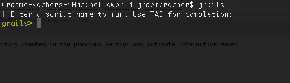
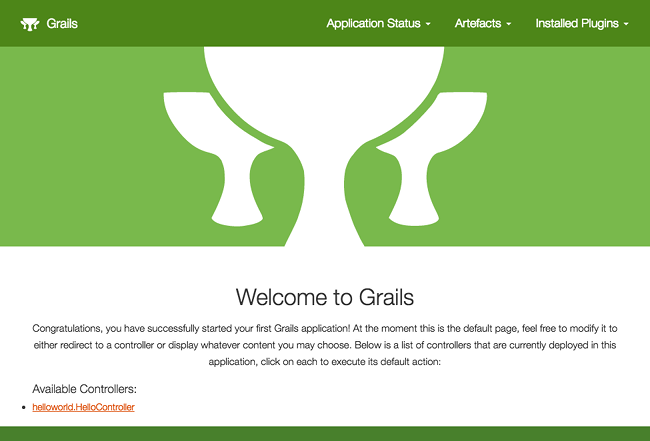
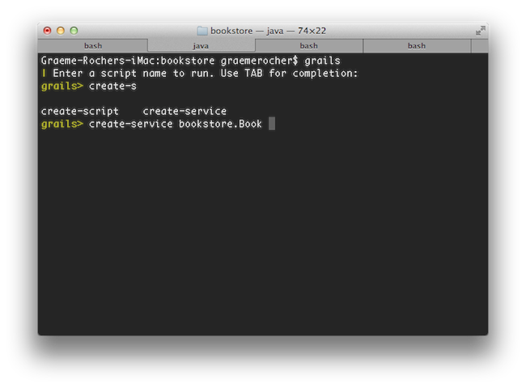
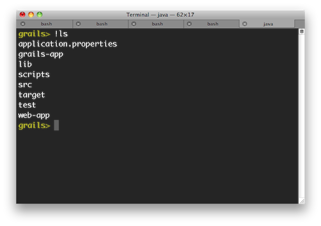

export JAVA_HOME=/Library/Java/Home
export PATH="$PATH:$JAVA_HOME/bin"The Grails Framework
Authors: The Grails Team
Version: 4.0.0
Table of Contents
1 简介
Java 领域中的许多现代 Web 框架都比需要的更为复杂，并且不包含「不重复造轮子（DRY）」原则。
诸如 Rails 和 Django 之类的动态框架帮助为更现代的 Web 应用程序思考方式铺平了道路。Grails 基于这些概念，并大大降低了在 Java 平台上构建 Web 应用程序的复杂性。然而，使它与众不同的是，它是通过在已经建立的 Java 技术（例如 Spring 和 Hibernate ）的基础上实现的。
Grails 是一个全栈框架，它试图通过核心技术及其关联的插件来解决许多 Web 开发难题。发行包中包括以下内容：
通过 Groovy 语言的强大功能和领域特定语言（DSL）的广泛使用，所有这些都变得易于使用
本文档将引导您入门 Grails，并使用 Grails 框架构建 Web 应用程序。
除了本文档外，还有 comprehensive guides 指导您了解该技术的各个方面。
最后，Grails 不仅仅是一个 Web 框架，它还由各种子项目组成。下表总结了生态系统中的其他一些重要项目，并提供了文档链接。
| 项目 | 描述 |
|---|---|
SQL 数据库的对象映射实现 |
|
MongoDB 文档数据库的对象映射实现 |
|
Neo4j 图形数据库的对象映射实现 |
|
一种用于在服务器端呈现 JSON 的视图技术 |
|
一种用于在服务器上呈现 HTML 和其他标记的视图技术 |
|
异步编程抽象，支持 RxJava，GPars 等 |
1.1 Grails 4 中的新增功能是什么？
本节介绍了 Grails 4 中引入的所有新功能。
1.1.1 更新的依赖项
Grails 4 附带了以下依赖项升级：
-
Groovy 2.5.6
-
GORM 7 and Hibernate 5.4 (现在是新应用程序的默认 Hibernate 版本)
-
Spring Framework 5.1.5
-
Spring Boot 2.1.3
-
Gradle 5.1.1
-
Spock 1.2
1.1.2 Micronaut 父上下文
Micronaut 现在是 Grails 的父应用程序上下文，因此允许使用许多 Micronaut 功能，包括 Micronaut HTTP Client 和 Kafka Client 。
Micronaut 还已用于改善 Grails 应用程序的启动并减少其总体内存消耗（以及 Spring Boot 2.1 中的相关改进）。
2 入门
2.1 安装要求
在安装 Grails 4.0.0 之前，您至少需要安装一个 1.8 或以上版本的 Java 开发工具包(JDK)。下载适合您的操作系统的 JDK，运行安装程序，然后设置一个名为 JAVA_HOME 的环境变量，指向安装的位置。
为了自动化 Grails 的安装，我们推荐 SDKMAN 大大简化了安装和管理多个 Grails 版本。
在某些平台上(例如OS X)，会自动检测到 Java 安装。但是，在许多情况下，您需要手动配置 Java 的位置。例如，如果您正在使用 bash 或 Bourne Shell 的另一种变体:
在Windows上，你必须在 My Computer/Advanced/Environment Variables 中配置这些环境变量
|
2.2 下载和安装
启动和运行 Grails 的第一步是安装这个发行版。
在 *nix 系统上安装 Grails 的最佳方法是使用 SDKMAN ，SDKMAN 大大简化了安装和管理多个 Grails 版本。
安装 SDKMAN
要使用 SDKMAN 安装最新版本的 Grails，请在您的终端上运行它：
sdk install grails您还可以指定一个版本
sdk install grails 4.0.0您可以在 SDKMAN Docs 中找到关于 SDKMAN 使用的更多信息。
手动安装
手动安装请遵循以下步骤:
-
Download Grails 的二进制发行版，并将生成的 zip 文件解压缩到您选择的位置
-
将 GRAILS_HOME 环境变量设置为您提取 zip 的位置
-
在基于 Unix/Linux 的系统中，这通常是在您的配置文件中添加类似
export GRAILS_HOME=/path/to/grails这样的内容 -
在Windows中，这通常是在
My Computer/Advanced/Environment Variables下设置一个环境变量
-
-
然后将
bin目录添加到您的PATH变量中:-
在基于Unix/Linux的系统中，这可以通过在您的配置文件中添加
export PATH="$PATH:$GRAILS_HOME/bin"来实现 -
在Windows中，这是通过修改
My Computer/Advanced/Environment Variables下的Path环境变量来实现的。
-
如果 Grails 工作正常，您现在应该可以在终端窗口中输入 grails -version ，并看到类似如下的输出:
Grails version: 4.0.02.3 创建应用程序
要创建 Grails 应用程序，首先需要熟悉 Grails 命令的用法，它的用法如下:
grails <<command name>>运行 create-app 创建应用:
grails create-app helloworld这将在包含项目的当前目录中创建一个新目录。在你的控制台中导航到这个目录:
cd helloworld2.4 Hello World 示例
现在让我们将这个新项目转换为经典的 “Hello world!” 示例。
首先，切换到刚刚创建的 “helloworld” 目录，启动 Grails 交互控制台:
$ cd helloworld
$ grails你会看到这样的提示:

我们需要的是一个简单的页面，它只向浏览器输出 “Hello World!”。
在 Grails 中，每当需要一个新页面时，只需为它创建一个新的 controller。由于我们还没有一个 controller，让我们现在创建一个控制器。
grails> create-controller hello不要忘记，在交互控制台中，我们有命令名的自动补全功能。
因此，您可以键入“cre”，然后按 <tab> 得到所有 create-* 命令的列表。
再输入几个命令名字母，然后再次 <tab> 来完成。
上面的命令将创建一个新 controller 在 grails-app/controllers/helloworld 目录下，名为 HelloController.groovy 。
为什么多了一个额外的 helloworld 目录？因为在 Java 领域，强烈建议将所有类都放到包中，所以如果不提供应用程序名称，Grails 将默认使用应用程序名称。create-controller 提供了更多的细节。
现在我们有了一个控制器，让我们添加一个动作来生成 “Hello World!” 页面。
在任何文本编辑器中，编辑新控制器 — HelloController.groovy 文件 — 通过添加一个 render line。
文件里的代码应该是这样的:
package helloworld
class HelloController {
def index() {
render "Hello World!"
}
}这个控制器只有一个简单的方法。在这个特殊的例子中，它调用了Grails提供的一个特殊方法来 render。
任务完成。想要看你的应用运行，你只需要启动一个服务器与另一个命令 run-app:
grails> run-app这将在承载应用程序的端口8080上启动一个嵌入式服务器。现在，访问您的应用程序—请尝试一下! 您应该能够通过 URL http://localhost:8080/
要为应用程序设置上下文路径，可以在 grails-app/conf/application.yml 中添加一个配置属性:
server:
servlet:
context-path: /helloworld有了上面的配置，服务器将在URL http://localhost:8080/helloworld/ 处启动。
或者，你也可以通过命令行设置上下文路径:
grails> run-app -Dgrails.server.servlet.context-path=/helloworld
如果您看到错误" Server failed to start for port 8080: Address already in use"，那么这意味着另一个服务器正在该端口上运行。
您可以通过使用 run-app -port=9090 在不同的端口上运行服务器来轻松解决这个问题。
'9090’就是一个例子：你几乎可以选择 1024 到 49151 之间的任何东西。
|
结果将是这样的:

这是由 grails-app/view/index.gsp 渲染的 Grails 项目首页。
它检测你的控制器的存在并提供链接。
您可以点击 "HelloController" 链接，查看包含文本"Hello World!"的自定义页面。
瞧!您有了第一个可以工作的Grails应用程序。
最后一件事:控制器可以包含许多操作，每个操作对应于不同的页面(此处忽略AJAX)。 每个页面都可以通过一个由控制器名和操作名组成的惟一URL进行访问 :/<appname>/<controller>/<action> 。 这意味着您可以通过 /helloworld/hello/index 访问Hello World页面，其中 'Hello' 是控制器名称(从类名中去掉 'Controller' 后缀，第一个字母用小写字母表示)，'index' 是操作名称。 但是，您也可以通过相同的 URL 访问页面，而不需要 action 名称:这是因为’index’是 default action 。 用户指南的 controllers and actions 部分，以了解更多的默认动作。
2.5 使用交互模式
从 3.0 开始，Grails 就有了交互式模式，这使得命令执行更快，因为不必为每个命令重新启动 JVM。要使用交互模式，只需从任何项目的根目录中输入 'grail' ，并使用TAB补全来获得可用命令的列表。请看下面的截图：

有关交互模式功能的更多信息，请在用户指南中参阅 Interactive Mode 。
2.6 在 IDE 中设置
IntelliJ IDEA
IntelliJ IDEA 是 Grails 3.0 开发的优秀 IDE。它有两个版本，免费社区版和付费终极版。
虽然 GSP 高亮语法只存在于付费版中，但社区版可以用于大多数情况
| 如果您想在社区版中高亮显示 GSP，那么可以在 HTML 编辑器中打开 GSP 文件。 |
要开始使用 Intellij IDEA 和 Grails 3.0，只需点击 File / Open ，将 IDEA 指向你用于导入和配置项目的 build.gradle 文件。
TextMate, Sublime, VIM 等.
有几个优秀的文本编辑器可以很好地与Groovy和Grails配合使用。参考文献如下:
-
TextMate bundle 存在 Groovy / Grails 支持在 Textmate
-
Sublime Text plugin 可以通过Sublime包控件安装 Sublime Text Editor。
-
参见 this post 了解一些关于如何设置VIM作为Grails编辑器的有用技巧。
-
Atom Package 和 Atom editor一起用。
2.7 配置的约定
Grails 使用“约定优于配置”来配置自己。这通常意味着使用的是文件的名称和位置，而不是显式的配置，因此您需要熟悉 Grails 提供的目录结构。
以下是各有关部分的分类及连结:
-
grails-app- Groovy 源代码的顶级目录-
conf- Configuration sources -
controllers- Web controllers - MVC 的 C。 -
domain- 域类 application domain. -
i18n- 国际化支持 internationalization (i18n). -
services- The service layer. -
taglib- Tag libraries. -
utils- Grails 工具. -
views- Groovy Server Pages or JSON Views - MVC 的 V.
-
-
src/main/scripts- Code generation scripts. -
src/main/groovy- 其他 groovy 源码 -
src/test/groovy- Unit and integration tests.
2.8 运行和调试应用程序
Grails 应用程序可以使用 Tomcat 服务器中内置的链接来 run-app，默认情况下在端口 8080 加载服务器：
grails run-app你可以指定一个不同的端口使用 -port 参数:
grails run-app -port=8090请注意，最好以交互模式启动应用程序，因为容器重新启动要快得多：
$ grails
grails> run-app
| Grails application running at http://localhost:8080 in environment: development
grails> stop-app
| Shutting down application...
| Application shutdown.
grails> run-app
| Grails application running at http://localhost:8080 in environment: development只需右键单击 Application.groovy，在 IDE 中分类并选择适当的操作(Grails 3 以上)。
或者，您可以使用以下命令运行应用程序，然后将远程调试器附加到应用程序上。
grails run-app --debug-jvm更多信息可在 run-app 命令可以在参考指南中找到。
2.9 测试应用程序
Grails 中的 create-* 命令会在 src/test/groovy 目录中自动为您创建单元测试或集成测试。当然，您可以使用有效的测试逻辑来填充这些测试，有关这些逻辑的信息可以在 Unit and integration tests 中找到。
要执行测试，您可以运行以下 test-app 命令：
grails test-app2.10 部署应用程序
Grails 应用程序可以以多种不同的方式部署。
如果部署到传统容器(Tomcat、Jetty等)，可以创建 Web 应用程序存档(WAR文件)，Grails 包含 war。执行此任务的命令:
grails war这将在 build/libs 目录下生成一个WAR文件，然后可以根据容器的说明部署该文件。
注意，在默认情况下，Grails 将在 WAR 文件中包含一个可嵌入的 Tomcat 版本，如果将其部署到另一个 Tomcat 版本，则可能会导致问题。如果您不打算使用嵌入式容器，那么您应该在 build.gradle 中将Tomcat依赖项的范围更改为 provided ，然后再部署到您的生产容器中:
provided "org.springframework.boot:spring-boot-starter-tomcat"如果您正在构建一个要在 Tomcat 7 上部署的 WAR 文件，那么您还需要在构建中更改目标 Tomcat 版本。默认情况下，Grails是针对 Tomcat 8 的 API 构建的。
要针对 Tomcat 7 容器，在 dependencies { } 上面插入一行 build.gradle :
ext['tomcat.version'] = '7.0.59'不像大多数脚本默认为 development 环境，除非被覆盖， war 命令默认在 production 环境中运行。您可以通过指定环境名称来像任何脚本一样覆盖它，例如：
grails dev war如果您不希望操作单独的 Servlet 容器，那么可以简单地将 Grails WAR 文件作为标准 Java 应用程序运行。例如：
grails war
java -Dgrails.env=prod -jar build/libs/mywar-0.1.war在部署 Grails 时，应该始终使用 -server 选项和足够的内存分配来运行容器 JVM 。一组好的 VM 标志是：
-server -Xmx768M -XX:MaxPermSize=256m2.11 支持的 Java EE 容器
Grails 可以在任何支持 Servlet 3.0 及以上的容器上运行，并且已知可以在以下特定容器产品上工作：
-
Tomcat 7
-
GlassFish 3 or above
-
Resin 4 or above
-
JBoss 6 or above
-
Jetty 8 or above
-
Oracle Weblogic 12c or above
-
IBM WebSphere 8.0 or above
| 需要在 "Application servers > server > Process Definition > Java Virtual Machine > Generic JVM arguments" 中为较老版本的 WebSphere 设置 "-Xverify:none" 。对于 WebSphere version 8 或更新版本，不再需要这样做。 |
但是，有些容器有 bug，在大多数情况下可以解决这些 bug。 一个 list of known deployment issues 可以在 Grails wiki 上找到。
另外, 参考 Grails Guides 关于如何将 Grails 部署到各种流行的云服务的提示
2.12 创建人工制品
Grails 附带了一些方便的命令，比如 create-controller , create-domain-class 等将创建 controllers 为您创建不同的内容。
| 这些只是为了您的方便，您可以轻松地使用 IDE 或您最喜欢的文本编辑器。 |
例如，要创建应用程序的基础，您通常需要一个 domain model：
grails create-app helloworld
cd helloworld
grails create-domain-class book这将导致在 grails-app/domain/helloworld/Book.groovy 创建一个域类，如：
package helloworld
class Book {
}有许多这样的 create-* 命令可以在命令行参考指南中找到。
| 为了减少运行 Grails 脚本所需的时间，可以使用交互式模式。 |
2.13 生成应用程序
要快速开始使用 Grails，通常需要使用一个名为 scaffolding 的特性，生成应用程序的框架。要做到这一点，可以使用 generate-* 命令，比如 generate-all ，它将生成一个 controller (包含他的测试用例)和相关 views :
grails generate-all helloworld.Book3 从 Grails 3.3.x 升级
Grails版本冲突
您将需要升级在 gradle.properties 中定义的Grails版本。
Grails 3应用的 gradle.properties
gradle.properties
...
grailsVersion=3.3.8
...Grails 4应用程序的 gradle.properties
gradle.properties
...
grailsVersion=4.0.0
...提升GORM版本
如果您使用的是 GORM，则需要更新 gradle.properties 中定义的版本。
Grails 3应用的 gradle.properties
gradle.properties
...
gormVersion=6.1.10.RELEASE
...Grails 4应用程序的 gradle.properties
gradle.properties
...
gormVersion=7.0.2
...Spring 5和Spring Boot 2.1
Hibernate 5.4和GORM 7.x
Grails 4.x支持最低版本的Hibernate 5.4和GORM7.x。 GORM进行了一些更改，以支持较新的Hibernate版本并简化GORM本身。 有关这些更改的详细信息，请参见 GORM升级文档。
Spring Boot 2.1执行器
请检查 Spring Boot Actuator文档，因为它与Spring Boot 1.5的Grails版本相比有很大变化使用3.x。 如果您有以下配置:
grails-app/conf/application.yml - Grails 3.3.x
endpoints:
enabled: false
jmx:
enabled: true
unique-names: true替换为:
grails-app/conf/application.yml - Grails 4.x
spring:
jmx:
unique-names: true
management:
endpoints:
enabled-by-default: falseSpring Boot开发人员工具和Spring Loaded
Grails的早期版本使用了名为 Spring Loaded的重新加载代理。由于该库不再维护且不支持Java 11，因此已删除了对Spring Loaded的支持。
作为替代，Grails 4应用程序在build.gradle构建脚本中包括 Spring Boot Developer Tools 依赖项。 如果要迁移Grails 3.x应用，请包括以下依赖项集：
build.gradle
.
..
...
configurations {
developmentOnly
runtimeClasspath {
extendsFrom developmentOnly
}
}
dependencies {
developmentOnly("org.springframework.boot:spring-boot-devtools")
...
..
}
...
..
.另外，您应该在 application.yml 中为Spring Developer Tools配置必要的排除项：
spring:
devtools:
restart:
exclude:
- grails-app/views/**
- grails-app/i18n/**
- grails-app/conf/**上面的配置可防止在视图或消息捆绑包更改时服务器重新启动。
| 您可以将Spring Developer Tools与浏览器扩展程序（例如 Chrome LiveReload扩展程序）结合使用以获取自动浏览器 在Grails应用程序中进行任何更改时刷新。 |
Spring Boot Gradle插件更改
Grails 4构建于Spring Boot 2.1之上。 Grails 3应用程序是在Spring Boot 1.x之上构建的。
您的Grails 3应用的 build.gradle 可能具有这样的配置:
buid.gradle
bootRun {
addResources = true
...
}Grails 4应用程序基于Spring Boot 2.1构建。从Spring Boot 2.0开始， addResources 属性不再存在。相反，您需要将sourceResources属性设置为要使用的源集。通常是 sourceSets.main 。这在 Spring Boot Gradle中进行了描述插件的文档。
您可以配置Grails 4应用程序的 build.gradle :
buid.gradle
bootRun {
sourceResources sourceSets.main
...
}为Grails插件构建可执行jar
bootRepackage任务已替换为bootJar和bootWar任务，分别用于构建可执行的jar和wars。两项任务都扩展了其等效的标准Gradle jar或war任务，使您可以访问所有常规配置选项和行为。
如果您有以下配置：
buid.gradle | Grails 3
// 如果您希望将此插件打包为独立应用程序，请启用
bootRepackage.enabled = false替换为:
buid.gradle | Grails 4
// 如果您希望将此插件打包为独立应用程序，请启用
bootJar.enabled = false升级到Gradle 5
默认情况下，Grails 3应用程序使用的是 Gradle 3.5。 Grails 4应用程序使用Gradle 5。
升级到Gradle 5执行:
./gradlew wrapper --gradle-version 5.0由于Gradle 5的更改，插件的 不再解决传递依赖项。如果您的项目使用具有传递依赖项的插件，则需要将其显式添加到您的 build.gradle 文件中。
如果您自定义应用程序的构建，则可能需要进行其他迁移。请检查 Gradle升级构建 文件资料.
H2 Web控制台
Spring Boot 2.1包括对H2数据库Web控制台的本地支持。由于此功能已包含在Spring Boot中，因此等效功能已从Grails中删除。因此，H2控制台现在可以在 /h2-console 中使用，而不是先前的 /dbconsole URI。有关更多信息，请参阅Spring Boot文档中的 使用H2的Web控制台。
升级休眠
如果您在Grails 3应用程序中使用GORM进行Hibernate实施，则需要升级到Hibernate 5.4。
Grails 3 build.gradle ，例如:
build.gradle
dependencies {
...
compile "org.grails.plugins:hibernate5"
compile "org.hibernate:hibernate-core:5.1.5.Final"
}将在Grails 4中:
build.gradle
dependencies {
...
compile "org.grails.plugins:hibernate5"
compile "org.hibernate:hibernate-core:5.4.0.Final"
}迁移到Geb 2.3
Geb 1.1.x（与JDK 1.7兼容的版本）是Grails 3默认提供的版本。Grails4不再与Java 1.7兼容。您应该迁移到Geb 2.3。
在Grails 3中，如果您的build.gradle看起来像:
build.gradle
dependencies {
testCompile "org.grails.plugins:geb:1.1.2"
testRuntime "org.seleniumhq.selenium:selenium-htmlunit-driver:2.47.1"
testRuntime "net.sourceforge.htmlunit:htmlunit:2.18"
}在Grails 4中，您应该将其替换为：
build.gradle
buildscript {
repositories {
...
}
dependencies {
...
classpath "gradle.plugin.com.energizedwork.webdriver-binaries:webdriver-binaries-gradle-plugin:$webdriverBinariesVersion" (1)
}
}
...
..
repositories {
...
}
apply plugin:"idea"
...
...
apply plugin:"com.energizedwork.webdriver-binaries" (1)
dependencies {
...
testCompile "org.grails.plugins:geb" (4)
testRuntime "org.seleniumhq.selenium:selenium-chrome-driver:$seleniumVersion" (5)
testRuntime "org.seleniumhq.selenium:selenium-firefox-driver:$seleniumVersion" (5)
testRuntime "org.seleniumhq.selenium:selenium-safari-driver:$seleniumSafariDriverVersion" (5)
testCompile "org.seleniumhq.selenium:selenium-remote-driver:$seleniumVersion" (5)
testCompile "org.seleniumhq.selenium:selenium-api:$seleniumVersion" (5)
testCompile "org.seleniumhq.selenium:selenium-support:$seleniumVersion" (5)
}
webdriverBinaries {
chromedriver "$chromeDriverVersion" (2)
geckodriver "$geckodriverVersion" (3)
}
tasks.withType(Test) {
systemProperty "geb.env", System.getProperty('geb.env')
systemProperty "geb.build.reportsDir", reporting.file("geb/integrationTest")
systemProperty "webdriver.chrome.driver", System.getProperty('webdriver.chrome.driver')
systemProperty "webdriver.gecko.driver", System.getProperty('webdriver.gecko.driver')
}gradle.properties
gebVersion=2.3
seleniumVersion=3.12.0
webdriverBinariesVersion=1.4
hibernateCoreVersion=5.1.5.Final
chromeDriverVersion=2.44 (2)
geckodriverVersion=0.23.0 (3)
seleniumSafariDriverVersion=3.14.0| 1 | 包括 Webdriver Binaries Gradle插件. |
| 2 | 设定适当 适用于Chrome版本的Webdriver. |
| 3 | 设定适当 Firefox版本的Webdriver. |
| 4 | 包括 Grails Geb插件依赖性 对 geb-spock 具有传递依赖。这是使用 Geb和Spock所必需的依赖项。 |
| 5 | Selenium和不同的驱动程序依赖性。 |
还创建一个 Geb Configuration 归档于 src/integration-test/resources/GebConfig.groovy .
src/integration-test/resources/GebConfig.groovy
import org.openqa.selenium.chrome.ChromeDriver
import org.openqa.selenium.chrome.ChromeOptions
import org.openqa.selenium.firefox.FirefoxDriver
import org.openqa.selenium.firefox.FirefoxOptions
import org.openqa.selenium.safari.SafariDriver
environments {
// 您需要在Safari中配置->开发->允许远程自动化
safari {
driver = { new SafariDriver() }
}
// 通过 ` ./gradlew -Dgeb.env = chrome iT `运行
chrome {
driver = { new ChromeDriver() }
}
// 通过 ` ./gradlew -Dgeb.env = chromeHeadless iT `运行
chromeHeadless {
driver = {
ChromeOptions o = new ChromeOptions()
o.addArguments('headless')
new ChromeDriver(o)
}
}
// 通过 ` ./gradlew -Dgeb.env = firefoxHeadless iT `运行
firefoxHeadless {
driver = {
FirefoxOptions o = new FirefoxOptions()
o.addArguments('-headless')
new FirefoxDriver(o)
}
}
// 通过 ` ./gradlew -Dgeb.env = firefox iT `运行
firefox {
driver = { new FirefoxDriver() }
}
}不推荐使用的课程
在Grails 3.x中不推荐使用的以下类在Grails 4中已被删除。请检查下面的列表以找到合适的替代品：
去除类 |
替代 |
|
|
|
|
|
|
|
|
|
|
|
|
|
|
|
|
|
Use traits instead. |
|
|
|
|
|
|
|
Use the |
|
|
|
|
|
Use the |
|
|
|
|
|
Handled by |
|
Use |
|
|
|
|
|
|
|
|
|
|
|
|
|
|
|
|
|
|
|
|
|
|
|
|
|
|
|
|
|
|
|
|
|
|
|
|
|
|
|
|
|
|
|
|
|
|
|
|
|
|
|
|
|
|
|
|
|
|
|
Replaced by newer version of commons-validation |
|
Replaced by newer version of commons-validation |
|
Replaced by newer version of commons-validation |
|
Replaced by newer version of commons-validation |
|
Replaced by newer version of commons-validation |
|
|
Grails-Java8
对于那些在 grails-java8 插件上添加了依赖关系的人，您只需要做的就是删除依赖关系。 插件中的所有类均已移至各自的项目。
配置文件弃用
Grails 3.x支持的一些配置文件将不再维护，因此，当它们以简写形式出现时，将不再可能创建应用程序。 升级现有项目时，有必要为这些配置文件提供版本。
-
org.grails.profiles:angularjs→org.grails.profiles:angularjs:1.1.2 -
org.grails.profiles:webpack→org.grails.profiles:webpack:1.1.6 -
org.grails.profiles:react-webpack→org.grails.profiles:react-webpack:1.0.8
预定方法
在Grails 3中，使用Spring @Scheduled 注释不需要配置或其他更改。 在Grails 4中，必须将 @EnableScheduling 批注应用到您的应用程序类中，以便安排工作。
4 配置
在我们现在讨论这个主题的，包含“约定之上的约定”的框架中，这似乎很奇怪。 正如快速入门所示，使用Grails的默认设置，您实际上可以在不进行任何配置的情况下开发应用程序，但是重要的是要了解在需要时在何处以及如何覆盖约定。 用户指南的后面各节将提及您可以使用哪些配置设置，但没有介绍如何设置它们。假设您至少已经阅读了本章的第一部分！
4.1 基本配置
Grails 中的配置通常分为两个区域：构建配置和运行时配置。
通常通过 Gradle 和 build.gradle 文件来完成构建配置。默认情况下，运行时配置是在YAML中的 grails-app/conf/application.yml 文件中指定的。
如果您更喜欢使用 Grails 2.0 风格的 Groovy 配置，则可以使用 Groovy 的 ConfigSlurper 语法指定配置。有两个 Groovy 配置文件：grails-app/conf/application.groovy 和 grails-app/conf/runtime.groovy：
-
使用
application.groovy进行不依赖于应用程序类的配置 -
使用
runtime.groovy进行不依赖于应用程序类的配置
|
这种分离是必要的，因为 Grails CLI 可以使用 运行 Grails CLI 时发生错误： 启动失败：script14738267015581837265078.groovy：13：无法解析 com.foo.Bar 类 |
对于 Groovy 配置，以下变量可用于配置脚本：
| 变量 | 说明 |
|---|---|
userHome |
运行 Grails 应用程序的帐户的主目录的位置。 |
grailsHome |
安装 Grails 的目录的位置。如果设置了 |
appName |
在 build.gradle 中显示的应用程序名称。 |
appVersion |
在 build.gradle 中显示的应用程序版本。 |
例如：
my.tmp.dir = "${userHome}/.grails/tmp"使用 GrailsApplication 访问配置
如果您想读取运行时配置设置，即在 application.yml 中定义的设置，请使用 grailsApplication 对象，该对象可以在控制器和标记库中作为变量使用：
class MyController {
def hello() {
def recipient = grailsApplication.config.getProperty('foo.bar.hello')
render "Hello ${recipient}"
}
}grailsApplication 对象的 config 属性是 Config 接口的一个实例，并提供了许多有用的方法来读取应用程序的配置。
特别是，getProperty 方法（如上所示）对于有效检索配置属性非常有用，同时可以指定属性类型（默认类型为 String）和/或提供默认的后备值。
class MyController {
def hello(Recipient recipient) {
//Retrieve Integer property 'foo.bar.max.hellos', otherwise use value of 5
def max = grailsApplication.config.getProperty('foo.bar.max.hellos', Integer, 5)
//Retrieve property 'foo.bar.greeting' without specifying type (default is String), otherwise use value "Hello"
def greeting = grailsApplication.config.getProperty('foo.bar.greeting', "Hello")
def message = (recipient.receivedHelloCount >= max) ?
"Sorry, you've been greeted the max number of times" : "${greeting}, ${recipient}"
}
render message
}请注意， Config 实例是基于 Spring PropertySource 概念的合并配置，并从环境，系统属性和本地应用程序配置中读取配置，并将它们合并为单个对象。
GrailsApplication 可以很容易地注入服务和其他 Grails 工件中：
import grails.core.*
class MyService {
GrailsApplication grailsApplication
String greeting() {
def recipient = grailsApplication.config.getProperty('foo.bar.hello')
return "Hello ${recipient}"
}
}GrailsConfigurationAware 接口
在运行时动态访问配置会对应用程序性能产生很小的影响。一种替代方法是实现 GrailsConfigurationAware 接口，该接口提供了一个 setConfiguration 方法，该方法在初始化类时将应用程序配置作为参数接受。然后，您可以将相关的配置属性分配给类上的实例属性，以供以后使用。
Config 实例与注入的 GrailsApplication config 对象具有相同的属性和用法。这是上一个示例中的服务类，使用的是 GrailsConfigurationAware 而不是注入 GrailsApplication：
import grails.core.support.GrailsConfigurationAware
class MyService implements GrailsConfigurationAware {
String recipient
String greeting() {
return "Hello ${recipient}"
}
void setConfiguration(Config config) {
recipient = config.getProperty('foo.bar.hello')
}
}Spring Value 注解
您可以使用 Spring 的 Value 批注注入配置值：
import org.springframework.beans.factory.annotation.*
class MyController {
@Value('${foo.bar.hello}')
String recipient
def hello() {
render "Hello ${recipient}"
}
}
在 Groovy 代码中，必须在字符串周围使用单引号作为 value 注释的值，否则它将被解释为 GString 而不是 Spring 表达式。
|
如您所见，访问配置设置时，使用与定义它们时相同的点符号。
4.1.1 YML 格式选项配置
Grails 3.0 中引入了 application.yml 文件，现在 YAML 是配置文件的首选格式。
使用系统属性/命令行参数
假设您使用的是 JDBC_CONNECTION_STRING 命令行参数，并且希望在 yml 文件中访问该参数，则可以按以下方式执行：
production:
dataSource:
url: '${JDBC_CONNECTION_STRING}'同样，也可以访问系统参数。
如果使用 grails run app 启动应用程序，则需要在 build.gradle 中使用此命令来修改 bootRun 目标：
bootRun {
systemProperties = System.properties
}为了进行测试，需要将 test 任务更改如下
test {
systemProperties = System.properties
}外部配置
默认情况下，Grails将从 ./config 或当前目录中读取 application.(properties | yml) 。
因为 Grails 也是一个 SpringBoot，所以也提供了配置选项方式，有关文档，请参阅： https://docs.spring.io/spring-boot/docs/current/reference/html/boot-features-external-config.html#boot-features-external-config-application-property-files
4.1.2 内置选项
Grails 有一组核心设置值得了解。它们的默认值适用于大多数项目，但了解它们的作用很重要，因为您可能需要这些设置中的一个或多个。
运行时设置
在运行时方面，即 grails app/conf/application.yml ，还有很多核心设置：
-
grails.enable.native2ascii- 如果不需要 grails i18n 属性文件的 native2ascii 转换，则将其设置为 false（默认值：true）。 -
grails.views.default.codec- 设置 GSPs 的默认编码机制——可以是 'none', 'html', 或者 'base64' 之一（默认值：'none'）。要降低 XSS 攻击的风险，请将其设置为 'html'。 -
grails.views.gsp.encoding- 用于 GSP 源文件的文件编码（默认值：“utf-8”）。 -
grails.mime.file.extensions- 是否使用文件扩展名指定链接中的 mime 类型 Content Negotiation（默认值：true）。 -
grails.mime.types- 用于 Content Negotiation 的受支持 mime 类型的映射。 -
grails.server URL- 指定绝对链接的服务器URL部分的字符串，包括服务器名，例如 grails.serverURL="http://my.yourportal.com"。查看 createLink。也被重定向使用。 -
grails.views.gsp.sitemesh.preprocess- 决定是否进行 sitemesh 预处理。禁用此选项会减慢页面呈现速度，但如果需要 SiteMesh 从 GSP 视图解析生成的 HTML，则禁用它是正确的选项。如果您不了解此高级属性，请不要担心：将其设置为 true。 -
grails.reload.excludes和grails.reload.includes- 配置这些指令将确定项目特定源文件的重新加载行为。每个指令都有一个字符串列表，这些字符串是项目源文件的类名，在使用run app命令运行开发中的应用程序时，这些字符串应排除在重新加载行为之外，或相应地包含在其中。如果配置了grails.reload.includes指令，则只会重新加载该列表中的类。
4.1.3 日志
默认情况下，Grails 3.0 中的日志记录由 Logback日志记录框架 处理，并且可以使用 grails-app/conf/logback.groovy 文件进行配置。
如果您更喜欢XML，则可以将 logback.groovy `文件替换为 `logback.xml 文件。
|
有关配置日志记录的更多信息，请参阅关于该主题的 Logback文档。
4.1.3.1 记录器名称
Grails artifacts（Grails 工件：控制器、服务…）会自动注入一个 log 属性。
在 Grails 3.3.0 之前, Grails Artifact 的 logger 遵循惯例 grails.app.<type>.<className>，其中 type 是工件的类型，例如 controllers 或 services，className 是工件的完全限定名。
Grails 3.3.x 简化了 logger 名称。下面的示例说明了这些更改：
BookController.groovy 位于 grails app/controllers/com/company ，没有使用 @Slf4j 注释：
Logger Name (Grails 3.3.x or higher) |
Logger Name (Grails 3.2.x or lower) |
|
|
BookController.groovy 位于 grails app/controllers/com/company ，注释为 @Slf4j ：
Logger Name (Grails 3.3.x or higher) |
Logger Name (Grails 3.2.x or lower) |
|
|
BookService.groovy 位于 grails app/services/com/company ，没有使用 @Slf4j 注释：
Logger Name (Grails 3.3.x or higher) |
Logger Name (Grails 3.2.x or lower) |
|
|
BookService.groovy 位于 grails app/services/com/company ，注释为 @Slf4j
Logger Name (Grails 3.3.x or higher) |
Logger Name (Grails 3.2.x or lower) |
|
|
BookDetail.groovy 位于 src/main/groovy/com/company ，注释为 @Slf4j
Logger Name (Grails 3.3.x or higher) |
Logger Name (Grails 3.2.x or lower) |
|
|
4.1.3.2 从堆栈跟踪日志屏蔽请求参数
当 Grails 记录堆栈跟踪（stacktrace）时，日志消息可能包含当前请求的所有请求参数的名称和值。
要屏蔽安全请求参数的值，请在 grails.exceptionresolver.params.exclude 配置属性中指定参数名称：
grails-app/conf/application.yaml
grails:
exceptionresolver:
params:
exclude:
- password
- creditCard通过将 grails.exceptionresolver.logRequestParameters 配置属性设置为 false，可以完全关闭请求参数日志记录。
当应用程序在开发模式（DEVELOPMENT MODE）下运行时，默认值为 true，对于应用程序的其他所有环境，默认值为 false。
grails-app/conf/application.yaml
grails:
exceptionresolver:
logRequestParameters: false4.1.3.3 外部配置文件
如果设置配置属性 logging.config，则可以通知 Logback 使用外部配置文件。
grails-app/conf/application.yml
logging:
config: /Users/me/config/logback.groovy或者，可以通过配置系统属性的方式提供配置文件位置：
$ ./gradlew -Dlogging.config=/Users/me/config/logback.groovy bootRun
或者，还可以使用环境变量：
$ export LOGGING_CONFIG=/Users/me/config/logback.groovy
$ ./gradlew bootRun4.1.4 GORM
Grails 提供了以下 GORM 配置选项:
-
grails.gorm.failOnError- 如果设置为true，则会导致域类上的save()方法在 validation 失败时抛出grails.validation.ValidationException。也可以为该选项分配表示包名称的字符串列表。如果值是字符串列表，则 failOnError 行为将仅应用于这些包（包括子包）中的域类。有关更多详细信息，请参阅 save 文档。
例如，要为所有域类启用 failOnError：
grails:
gorm:
failOnError: true以及要按包为域类启用 failOnError：
grails:
gorm:
failOnError:
- com.companyname.somepackage
- com.companyname.someotherpackage4.1.5 配置 HTTP 代理
要将 Grails 设置为使用 HTTP 代理，有两个步骤。首先，如果您想使用它来创建应用程序，则需要配置 grails CLI以了解代理。可以使用 GRAILS_OPTS 环境变量来完成，例如在 Unix 系统上：
export GRAILS_OPTS="-Dhttps.proxyHost=127.0.0.1 -Dhttps.proxyPort=3128 -Dhttp.proxyUser=test -Dhttp.proxyPassword=test"
默认的配置文件存储库是通过HTTPS解析的，因此使用 https.proxyPort 和 https.proxyUser ，但是用户名和密码是通过 http.proxyUser 和 http.proxyPassword 指定的。
|
对于 Windows 系统，可以在 "我的电脑/高级/环境变量" 下配置环境变量。
有了这种配置，grails 命令就可以通过代理进行连接和认证。
其次，由于 Grails 使用 Gradle 作为构建系统，因此您需要将 Gradle 配置为通过代理进行身份验证。有关如何执行此操作的说明，请参阅 该主题的Gradle用户指南部分。
4.2 应用程序类
每个新的 Grails 应用程序都在 grails-app/init 目录中具有一个 Application 类。
Application 类是 GrailsAutoConfiguration 类，并具有静态无返回值 main 方法，这意味着它可以作为常规应用程序运行。
4.2.1 执行应用程序类
有几种方法可以执行 Application 类，如果您使用的是 IDE，那么您只需右键单击该类并直接从 IDE 运行它，IDE 将启动 Grails 应用程序。
这对于调试也很有用，因为可以使用 run-app --debug-jvm 命令行中的命令。
您还可以将应用程序打包为可运行的WAR文件，例如：
$ grails package
$ java -jar build/libs/myapp-0.1.war如果您计划使用无容器（container-less）方法部署应用程序，这将非常有用。
4.2.2 自定义应用程序类
您可以通过多种方式自定义 Application 类。
总定义扫描路径
默认情况下，Grails 会扫描所有已知的源目录中的控制器、域类等，但是，如果您希望扫描其他JAR文件中的软件包，则可以通过覆盖 Application 类的 packageNames() 方法来进行扫描：
class Application extends GrailsAutoConfiguration {
@Override
Collection<String> packageNames() {
super.packageNames() + ['my.additional.package']
}
...
}注册其他Bean
Application 类也可以用作 Spring bean 定义的源代码，只需定义一个用 Bean 注释的方法，返回的对象将成为 Spring bean 。 该方法的名称用作Bean名称：
class Application extends GrailsAutoConfiguration {
@Bean
MyType myBean() {
return new MyType()
}
...
}4.2.3 应用程序生命周期
Application 类还实现了所有插件都实现的 GrailsApplicationLifeCycle 接口。
这意味着 Application 类可用于执行与插件相同的功能。您可以通过覆盖适当的方法来覆盖 regular plugins hooks ，例如 doWithSpring ，doWithApplicationContext 等。
class Application extends GrailsAutoConfiguration {
@Override
Closure doWithSpring() {
{->
mySpringBean(MyType)
}
}
...
}4.3 环境
每个环境独立配置
Grails 支持每个环境配置的概念。 grails-app/conf 目录中的 application.yml 和 application.groovy 文件可以使用每个环境的配置，使用 YAML 或 ConfigSlurper 提供的语法。作为示例，请考虑 Grails 提供的以下默认 application.yml 定义：
environments:
development:
dataSource:
dbCreate: create-drop
url: jdbc:h2:mem:devDb;MVCC=TRUE;LOCK_TIMEOUT=10000;DB_CLOSE_ON_EXIT=FALSE
test:
dataSource:
dbCreate: update
url: jdbc:h2:mem:testDb;MVCC=TRUE;LOCK_TIMEOUT=10000;DB_CLOSE_ON_EXIT=FALSE
production:
dataSource:
dbCreate: update
url: jdbc:h2:prodDb;MVCC=TRUE;LOCK_TIMEOUT=10000;DB_CLOSE_ON_EXIT=FALSE
properties:
jmxEnabled: true
initialSize: 5
...
以上内容可以在 application.groovy 中的 Groovy 语法中表示如下：
dataSource {
pooled = false
driverClassName = "org.h2.Driver"
username = "sa"
password = ""
}
environments {
development {
dataSource {
dbCreate = "create-drop"
url = "jdbc:h2:mem:devDb"
}
}
test {
dataSource {
dbCreate = "update"
url = "jdbc:h2:mem:testDb"
}
}
production {
dataSource {
dbCreate = "update"
url = "jdbc:h2:prodDb"
}
}
}注意如何在顶层提供通用配置，然后一个 environments 块为每个环境设置指定 DataSource 的 dbCreate 和 url 属性。
不同环境下的打包和运行
Grails 的 command line 具有内置功能，可以在特定环境的上下文中执行任何命令。格式为：
grails <<environment>> <<command name>>另外，Grails 已知 3 种预设环境：dev、prod 和 test 用于 开发环境、生产环境 和 测试环境 。例如，要为 test 环境创建 WAR，您将运行：
grails test war要定位其他环境，可以将 grails.env 变量传递给任何命令：
grails -Dgrails.env=UAT run-app程序环境检测
在代码中，例如在 Gant 脚本或引导程序类中，您可以使用 Environment 类来检测环境：
import grails.util.Environment
...
switch (Environment.current) {
case Environment.DEVELOPMENT:
configureForDevelopment()
break
case Environment.PRODUCTION:
configureForProduction()
break
}每个环境引导
当您的应用程序基于每个环境启动时，通常希望运行代码。为此，您可以使用 grails-app/init/BootStrap.groovy 文件对每个环境的执行的支持：
def init = { ServletContext ctx ->
environments {
production {
ctx.setAttribute("env", "prod")
}
development {
ctx.setAttribute("env", "dev")
}
}
ctx.setAttribute("foo", "bar")
}每个环境通用的执行
前面的 BootStrap 示例内部使用了 grails.util.Environment 类来执行。您还可以自己使用此类来执行自己的环境特定逻辑：
Environment.executeForCurrentEnvironment {
production {
// do something in production
}
development {
// do something only in development
}
}4.4 数据源
由于 Grails 是基于 Java 技术建立的，因此设置数据源需要 JDBC 的一些知识（JDBC 是 Java Database Connectivity 的缩写）。
如果使用 H2 以外的数据库，则需要 JDBC 驱动程序。 例如对于 MySQL，您将需要 Connector/J 。
驱动程序通常以 JAR 存档的形式出现。最好使用依赖项解析来解析 jar（如果它在 Maven 存储库中可用），例如，您可以为 MySQL 驱动程序添加依赖项，如下所示：
dependencies {
runtime 'mysql:mysql-connector-java:5.1.29'
}解决 JAR 问题后，您需要熟悉 Grails 如何管理其数据库配置。可以在 grails-app/conf/application.groovy 或 grails-app/conf/application.yml 中维护配置。这些文件包含 dataSource 定义，其中包括以下设置：
-
driverClassName- JDBC 驱动程序的类名 -
username- 用于建立 JDBC 连接的用户名 -
password- 用于建立 JDBC 连接的密码 -
url- 数据库的 JDBC URL -
dbCreate- 是否从域模型自动生成数据库 - 'create-drop'，'create'，'update' 或 'validate' 之一 -
pooled- 是否使用连接池（默认为 true） -
logSql- 启用 SQL 记录到标准输出 -
formatSql- 格式化记录的 SQL -
dialect- 一个字符串或类，表示用于与数据库进行通信的 Hibernate 语言。有关可用的语言，请参见 org.hibernate.dialect 程序包。 -
readOnly- 如果true使数据源为只读，则导致连接池在每个Connection上调用setReadOnly（true）。 -
transactional- 如果false将 DataSource 的 transactionManager bean 留在链式 BE1PC 事务管理器实现之外。这仅适用于其他数据源。 -
persistenceInterceptor- 默认数据源自动连接到持久性拦截器，其他数据源不自动连接，除非将其设置为true -
properties- 在 DataSource bean 上设置的额外属性。请参阅 Tomcat Pool 文档。还有Javadoc格式的 documentation of the properties 。 -
jmxExport- 如果为false，将禁用所有数据源的 JMX MBean 注册。默认情况下，为属性中的jmxEnabled = true的数据源添加 JMX MBean。
在 application.groovy 中，MySQL 的典型配置可能类似于：
dataSource {
pooled = true
dbCreate = "update"
url = "jdbc:mysql://localhost:3306/my_database"
driverClassName = "com.mysql.jdbc.Driver"
dialect = org.hibernate.dialect.MySQL5InnoDBDialect
username = "username"
password = "password"
properties {
jmxEnabled = true
initialSize = 5
maxActive = 50
minIdle = 5
maxIdle = 25
maxWait = 10000
maxAge = 10 * 60000
timeBetweenEvictionRunsMillis = 5000
minEvictableIdleTimeMillis = 60000
validationQuery = "SELECT 1"
validationQueryTimeout = 3
validationInterval = 15000
testOnBorrow = true
testWhileIdle = true
testOnReturn = false
jdbcInterceptors = "ConnectionState;StatementCache(max=200)"
defaultTransactionIsolation = java.sql.Connection.TRANSACTION_READ_COMMITTED
}
}| 在配置数据源时，请不要在任何配置设置之前包含 type 或 def 关键字，因为 Groovy 会将其视为本地变量定义，并且将不对其进行处理。例如，以下内容无效： |
dataSource {
boolean pooled = true // type declaration results in ignored local variable
...
}使用额外属性的高级配置示例：
dataSource {
pooled = true
dbCreate = "update"
url = "jdbc:mysql://localhost:3306/my_database"
driverClassName = "com.mysql.jdbc.Driver"
dialect = org.hibernate.dialect.MySQL5InnoDBDialect
username = "username"
password = "password"
properties {
// Documentation for Tomcat JDBC Pool
// http://tomcat.apache.org/tomcat-7.0-doc/jdbc-pool.html#Common_Attributes
// https://tomcat.apache.org/tomcat-7.0-doc/api/org/apache/tomcat/jdbc/pool/PoolConfiguration.html
jmxEnabled = true
initialSize = 5
maxActive = 50
minIdle = 5
maxIdle = 25
maxWait = 10000
maxAge = 10 * 60000
timeBetweenEvictionRunsMillis = 5000
minEvictableIdleTimeMillis = 60000
validationQuery = "SELECT 1"
validationQueryTimeout = 3
validationInterval = 15000
testOnBorrow = true
testWhileIdle = true
testOnReturn = false
ignoreExceptionOnPreLoad = true
// http://tomcat.apache.org/tomcat-7.0-doc/jdbc-pool.html#JDBC_interceptors
jdbcInterceptors = "ConnectionState;StatementCache(max=200)"
defaultTransactionIsolation = java.sql.Connection.TRANSACTION_READ_COMMITTED // safe default
// controls for leaked connections
abandonWhenPercentageFull = 100 // settings are active only when pool is full
removeAbandonedTimeout = 120
removeAbandoned = true
// use JMX console to change this setting at runtime
logAbandoned = false // causes stacktrace recording overhead, use only for debugging
// JDBC driver properties
// Mysql as example
dbProperties {
// Mysql specific driver properties
// http://dev.mysql.com/doc/connector-j/en/connector-j-reference-configuration-properties.html
// let Tomcat JDBC Pool handle reconnecting
autoReconnect=false
// truncation behaviour
jdbcCompliantTruncation=false
// mysql 0-date conversion
zeroDateTimeBehavior='convertToNull'
// Tomcat JDBC Pool's StatementCache is used instead, so disable mysql driver's cache
cachePrepStmts=false
cacheCallableStmts=false
// Tomcat JDBC Pool's StatementFinalizer keeps track
dontTrackOpenResources=true
// performance optimization: reduce number of SQLExceptions thrown in mysql driver code
holdResultsOpenOverStatementClose=true
// enable MySQL query cache - using server prep stmts will disable query caching
useServerPrepStmts=false
// metadata caching
cacheServerConfiguration=true
cacheResultSetMetadata=true
metadataCacheSize=100
// timeouts for TCP/IP
connectTimeout=15000
socketTimeout=120000
// timer tuning (disable)
maintainTimeStats=false
enableQueryTimeouts=false
// misc tuning
noDatetimeStringSync=true
}
}
}有关 dbCreate 的更多信息
Hibernate 可以自动创建您的域模型所需的数据库表。您可以通过 dbCreate 属性控制何时以及如何执行此操作，该属性可以采用以下值：
-
create - 删除现有架构并在启动时创建架构，首先删除现有表，索引等。
-
create-drop - 与 create 相同，但是在应用程序完全关闭时也会删除表。
-
update - 创建丢失的表和索引，并在不删除任何表或数据的情况下更新当前架构。请注意，这无法正确处理许多架构更改，例如列重命名（剩下的旧列包含现有数据）。
-
validate - 不更改数据库。将配置与现有数据库架构进行比较，并报告警告。
-
any other value - 不执行任何操作
一旦您的模式相对稳定，并且建议将应用程序和数据库部署在生产环境中时，建议将 dbCreate 设置为 "none" 。 然后，使用SQL脚本或诸如 Flyway 或 Liquibase 之类的迁移工具，通过适当的迁移来管理数据库更改。 DatabaseMigration 插件使用 Liquibase 。
4.4.1 数据源和环境
前面的示例配置假定您在所有环境（生产、测试、开发等）下都需要相同的配置。
但是，Grails的DataSource 定义是 "环境感知的(environment aware)"，因此您可以执行以下操作:
dataSource {
pooled = true
driverClassName = "com.mysql.jdbc.Driver"
dialect = org.hibernate.dialect.MySQL5InnoDBDialect
// other common settings here
}
environments {
production {
dataSource {
url = "jdbc:mysql://liveip.com/liveDb"
// other environment-specific settings here
}
}
}4.4.2 自动数据库迁移
DataSource 定义的 dbCreate 属性很重要，因为它指示 Grails 在运行时应该如何从 GORM 类自动生成数据库表。这些选项在 DataSource 部分中进行了描述：
-
create -
create-drop -
update -
validate -
no value
在 development 模式下，默认将 dbCreate 设置为 “create-drop”，但是在开发的某个时刻（比如一旦进入生产阶段）您需要停止每次启动服务器时都删除并重新创建数据库。
尝试变更为 update 看起来很美好，因为您保留了现有数据并且仅在代码更改时才更新架构，但是 Hibernate 的更新支持非常保守。它不会进行任何可能导致数据丢失的更改，并且不会检测到重命名的列或表，因此您将继续拥有旧的列或表，并且还将同时拥有新的列或表。
Grails 支持通过使用 Liquibase 插件或 Flyway 插件进行迁移。
4.4.3 事务感知数据源代理
实际的 dataSource bean 被包装在一个可识别事务的代理中，因此将为您提供当前事务或 Hibernate Session （如果一个处于活动状态）正在使用的连接。
如果不是这种情况，那么从 dataSource 中检索连接将是一个新的连接，并且您将无法看到尚未提交的更改（假设您具有合理的事务隔离设置，例如 READ_COMMITTED 或更高）。
如果需要访问，仍然可以使用 "真实的" 未代理的 dataSource 。它的bean名称是 dataSourceUnproxied 。
您可以像使用其他任何 Spring bean 一样访问此 bean，即使用依赖注入：
class MyService {
def dataSourceUnproxied
...
}或从 ApplicationContext 中将其拉出：
def dataSourceUnproxied = ctx.dataSourceUnproxied4.4.4 数据库控制台
H2数据库控制台 是 H2 的一项便利功能，它为您拥有 JDBC 驱动程序的任何数据库提供了基于 Web 的界面，对于查看您要开发的数据库。当针对内存数据库运行时，它特别有用。
您可以通过在浏览器中导航到 http://localhost:8080/dbconsole 来访问控制台。可以使用 application.groovy 中的 grails.dbconsole.urlRoot 属性来配置URI，默认为 /dbconsole。
目前已经变更为 /h2-console。by MicroGrails
|
默认情况下，控制台在开发模式下处于启用状态，可以通过使用 application.groovy 中的 grails.dbconsole.enabled 属性来禁用或启用该控制台。例如，您可以这样在生产环境中启用控制台：
environments {
production {
grails.serverURL = "http://www.changeme.com"
grails.dbconsole.enabled = true
grails.dbconsole.urlRoot = '/admin/dbconsole'
}
development {
grails.serverURL = "http://localhost:8080/${appName}"
}
test {
grails.serverURL = "http://localhost:8080/${appName}"
}
}| 如果在生产环境中启用了控制台，请确保使用受信任的安全框架来保护对控制台的访问。 |
配置
默认情况下，控制台配置为H2数据库，如果您尚未配置外部数据库，则该控制台将使用默认设置工作-您只需要将 JDBC URL 更改为 jdbc:h2:mem:devDb。如果您已经配置了外部数据库（例如 MySQL，Oracle 等），则可以使用"保存的设置"下拉列表选择设置模板，然后从 application.groovy 中填写url和用户名/密码信息。
4.4.5 多个数据源
默认情况下，所有域类共享一个 DataSource 和一个数据库，但是您可以选择将域类划分为两个或多个数据源。
配置其他数据源
grails-app/conf/application.yml 中的默认 DataSource 配置如下所示：
dataSource:
pooled: true
jmxExport: true
driverClassName: org.h2.Driver
username: sa
password:
environments:
development:
dataSource:
dbCreate: create-drop
url: jdbc:h2:mem:devDb;MVCC=TRUE;LOCK_TIMEOUT=10000;DB_CLOSE_ON_EXIT=FALSE
test:
dataSource:
dbCreate: update
url: jdbc:h2:mem:testDb;MVCC=TRUE;LOCK_TIMEOUT=10000;DB_CLOSE_ON_EXIT=FALSE
production:
dataSource:
dbCreate: update
url: jdbc:h2:prodDb;MVCC=TRUE;LOCK_TIMEOUT=10000;DB_CLOSE_ON_EXIT=FALSE
properties:
jmxEnabled: true
initialSize: 5这将使用名为 dataSource 的 Spring bean 配置单个 DataSource 。要配置额外的数据源，请添加一个带有自定义名称的 dataSources 块（放在顶层，或在一个环境块中，或两者都在，就像标准的 DataSource 定义一样）。例如，下面配置添加了第二个 DataSource ，在开发环境中使用 MySQL，在生产环境中使用 Oracle：
dataSource:
pooled: true
jmxExport: true
driverClassName: org.h2.Driver
username: sa
password:
dataSources:
lookup:
dialect: org.hibernate.dialect.MySQLInnoDBDialect
driverClassName: com.mysql.jdbc.Driver
username: lookup
password: secret
url: jdbc:mysql://localhost/lookup
dbCreate: update
environments:
development:
dataSource:
dbCreate: create-drop
url: jdbc:h2:mem:devDb;MVCC=TRUE;LOCK_TIMEOUT=10000;DB_CLOSE_ON_EXIT=FALSE
test:
dataSource:
dbCreate: update
url: jdbc:h2:mem:testDb;MVCC=TRUE;LOCK_TIMEOUT=10000;DB_CLOSE_ON_EXIT=FALSE
production:
dataSource:
dbCreate: update
url: jdbc:h2:prodDb;MVCC=TRUE;LOCK_TIMEOUT=10000;DB_CLOSE_ON_EXIT=FALSE
properties:
jmxEnabled: true
initialSize: 5
...
dataSources:
lookup:
dialect: org.hibernate.dialect.Oracle10gDialect
driverClassName: oracle.jdbc.driver.OracleDriver
username: lookup
password: secret
url: jdbc:oracle:thin:@localhost:1521:lookup
dbCreate: update您可以使用相同或不同的数据库，只要 Hibernate 支持即可。
如果您需要在 Grails 工件中注入 lookup 数据源，则可以这样进行：
DataSource dataSource_lookup| 在定义多个数据源时，必须 有一个被命名为 "dataSource"。这是必需的，因为 Grails 通过确定哪个数据源被命名为 "dataSource" 来确定哪个数据源是默认的。 |
配置 Domain 类
如果域类没有 DataSource 配置，则默认为标准的 'dataSource' 。在 mapping 块中设置 datasource 属性，以配置非默认的 DataSource 。例如，如果您想使用 ZipCode 域来使用 'lookup' DataSource ，请按以下方式进行配置：
class ZipCode {
String code
static mapping = {
datasource 'lookup'
}
}域类也可以使用两个或多个数据源。将 datasources 属性与名称列表一起使用可以配置多个名称，例如：
class ZipCode {
String code
static mapping = {
datasources(['lookup', 'auditing'])
}
}如果域类使用默认的 DataSource 和一个或多个其他类，请使用特殊名称 DEFAULT 来指示默认的 DataSource ：
class ZipCode {
String code
static mapping = {
datasources(['lookup', 'DEFAULT'])
}
}如果域类使用所有已配置的数据源，请使用特殊值 'ALL'：
class ZipCode {
String code
static mapping = {
datasource 'ALL'
}
}命名空间和 GORM 方法
如果域类使用多个 DataSource ，则可以使用每个 DataSource 名称隐含的命名空间对特定的 DataSource 进行GORM调用。例如，考虑使用两个数据源的此类：
class ZipCode {
String code
static mapping = {
datasources(['lookup', 'auditing'])
}
}当不使用显式命名空间时，指定的第一个 DataSource 是默认值，因此在这种情况下，我们默认为 'lookup' 。但是您可以使用 DataSource 名称在 'auditing' DataSource 上调用 GORM 方法，例如：
def zipCode = ZipCode.auditing.get(42)
...
zipCode.auditing.save()如您所见，在静态情况和实例情况下，都将 DataSource 添加到方法调用中。
Hibernate 映射 Domain 类
您还可以将带注释的 Java 类划分为单独的数据源。使用默认数据源的类在 grails-app/conf/hibernate.cfg.xml 中注册。要指定带注释的类使用非默认数据源，请为该数据源创建一个 hibernate.cfg.xml 文件，文件名以该数据源名称为前缀。
例如，如果 Book 类位于默认数据源中，则可以在 grails-app/conf/hibernate.cfg.xml 中进行注册：
<?xml version='1.0' encoding='UTF-8'?>
<!DOCTYPE hibernate-configuration PUBLIC
'-//Hibernate/Hibernate Configuration DTD 3.0//EN'
'http://hibernate.sourceforge.net/hibernate-configuration-3.0.dtd'>
<hibernate-configuration>
<session-factory>
<mapping class='org.example.Book'/>
</session-factory>
</hibernate-configuration>如果 Library 类位于 "ds2" 数据源中，则可以在 grails-app/conf/ds2_hibernate.cfg.xml 中进行注册：
<?xml version='1.0' encoding='UTF-8'?>
<!DOCTYPE hibernate-configuration PUBLIC
'-//Hibernate/Hibernate Configuration DTD 3.0//EN'
'http://hibernate.sourceforge.net/hibernate-configuration-3.0.dtd'>
<hibernate-configuration>
<session-factory>
<mapping class='org.example.Library'/>
</session-factory>
</hibernate-configuration>对于使用 hbm.xml 文件映射的类，该过程相同-只需在相应的 hibernate.cfg.xml 文件中列出它们即可。
Services
与 Domain 类一样，默认情况下，Services 使用默认的 DataSource 和 PlatformTransactionManager 。要将服务配置为使用其他 DataSource ，请使用静态 datasource 属性，例如：
class DataService {
static datasource = 'lookup'
void someMethod(...) {
...
}
}事务性服务只能使用单个 DataSource ，因此请确保仅对 DataSource 与 "Service" 相同的域类进行更改。
请注意，服务中指定的数据源与用于域类的数据源无关。这取决于它们在域类本身中声明的数据源。用于声明要使用的事务管理器。
如果您在 dataSource1 中有一个 Foo 域类，而在 dataSource2 中有一个 Bar 域类，如果 WahooService 使用 dataSource1 ，这是一种保存新 Foo 和新 Bar 的服务方法。由于它们共享相同的数据源，因此只会对 Foo 进行交易。交易不会影响 Bar 实例。如果您希望两者都是事务性的，则需要使用两个服务和XA数据源进行两阶段提交，例如使用 Atomikos 插件。
跨多个数据源的事务
默认情况下，Grails 不会尝试处理跨越多个数据源的事务。
您可以启用 Grails 使用 "尽力而为1PC模式（Best Effort 1PC）" 处理跨多个数据源的事务。为此，您必须在 application.yml 中将 grails.transaction.chainedTransactionManagerPostProcessor.enabled 设置设置为 true ：
grails:
transaction:
chainedTransactionManagerPostProcessor:
enabled: true尽力而为1PC模式 相当普遍，但可能会失败在某些情况下，开发人员必须了解。
基本思想是在事务中尽可能延迟所有资源的提交，以便唯一可能出错的是基础结构故障（而不是业务处理错误）。依靠 BE1PC 的系统认为，基础结构故障非常罕见，以至于他们可以承担风险以换取更高的吞吐量。如果业务处理服务也被设计为幂等的，那么实践中几乎不会出错。
BE1PC 实现已在 Grails 2.3.6 中添加 。在此更改之前，其他数据源未参与 Grails 中启动的事务。其他数据源中的事务基本上处于自动提交模式。在某些情况下，这可能是所需的行为。原因可能是性能：在每个新事务开始时，BE1PC 事务管理器都会为每个数据源创建一个新事务。通过在附加数据源的相应配置块中设置 transactional = false ，可以将附加数据源留在 BE1PC 事务管理器之外。readOnly = true 的数据源也将从链式事务管理器中删除（自2.3.7开始）。
默认情况下，BE1PC 实现会将所有实现 Spring PlatformTransactionManager 接口的 bean 添加到链接的 BE1PC 事务管理器中。例如，可能会将 Grails 应用程序上下文中的一个可能的 JMSTransactionManager bean 添加到 Grails BE1PC 事务管理器的事务管理器链中。
您可以使用以下配置选项从BE1PC实现中排除事务管理器bean：
grails:
transaction:
chainedTransactionManagerPostProcessor:
enabled: true
blacklistPattern: '.*'排除匹配是在事务管理器 bean 的名称上完成的。带有 transactional = false 或 readOnly = true 的数据源的事务管理器将被跳过，在这种情况下不需要使用此配置选项。
XA和两阶段提交
当"尽力而为"1PC模式不适合跨多个事务资源（不仅是数据源）处理事务时，可以使用多种选项将 XA/2PC 支持添加到 Grails应用程序。
Spring交易文档 包含有关集成不同应用程序服务器的 JTA/XA 交易管理器的信息。在这种情况下，您可以在 resources.groovy 或 resources.xml 文件中手动配置名为 transactionManager 的 bean。
4.5 版本控制
运行时检测版本
您可以使用 GrailsApplication 类使用 Grails 对应用程序元数据的支持来检测应用程序版本。例如，在 controllers 中，有一个隐式链接 grailsApplication 变量可以使用：
def version = grailsApplication.metadata.getApplicationVersion()您可以获取运行的 Grails 版本：
def grailsVersion = grailsApplication.metadata.getGrailsVersion()或通过 GrailsUtil 类：
import grails.util.GrailsUtil
...
def grailsVersion = GrailsUtil.grailsVersion4.6 依赖项解析
依赖关系解析是由 Gradle build tool 处理的，所有依赖关系都在 build.gradle 文件中定义。 有关更多信息，请参考 Gradle 用户指南 。
5 命令行
Grails 3.0的命令行系统与Grails的早期版本有很大不同，并且具有用于调用Gradle进行构建相关任务以及执行代码生成的API。
当您输入时:
grails <<command name>>Grails根据当前应用程序的配置文件搜索 配置文件存储库。 如果概要文件是针对Web应用程序的，则从Web概要文件及其继承的基本概要文件中读取命令。
由于命令行为是特定于配置文件的，因此Web配置文件可以为 run-app 命令提供不同的行为，然后说一个用于运行批处理应用程序的配置文件。
当您键入以下命令时：
grails run-app它将首先搜索应用程序，然后在配置文件中搜索命令：
要获取所有命令的列表以及有关可用命令的一些帮助，请输入：
grails help它输出使用说明和Grails知道的命令列表：
grails <<environment>>* <<target>> <<arguments>>*'
| 例如:
$ grails dev run-app
$ grails create-app books
| Available Commands (type grails help 'command-name' for more info):
| Command Name Command Description
----------------------------------------------------------------------------------------------------
clean Cleans a Grails application's compiled sources
compile Compiles a Grails application
...| 有关单个命令的更多信息，请参考参考指南的“快速参考”菜单中的“命令行参考”。 |
争论
grails 命令是对 gradle 调用的前提，因此可能会有意想不到的副作用。
例如，当执行 grails -Dapp.foo = bar run-app 时, app.foo 系统属性将对您的应用程序不可用。
这是因为在 build.gradle 中的 bootRun 配置了系统属性。
为了使这项工作有效，您可以将所有 System.properties 附加到 build.gradle 中的 bootRun 中,如下所示：
bootRun{
systemProperties System.properties // Please note not to use '=', because this will override all configured systemProperties. This will append them.
}或者,如果您只想传递有限的集合,则可以使用任意前缀为系统属性添加前缀,并配置 bootRun ,例如：
bootRun{
bootRun {
systemProperties System.properties.inject([:]){acc,item-> item.key.startsWith('boot.')?acc << [(item.key.substring('boot.'.length())):item.value]:acc }
}
}在此示例中，仅传递以 boot. 开头的系统属性。
应用程序和JVM参数也应该在 bootRun 中指定。
bootRun{
bootRun {
jvmArgs('-Dspring.output.ansi.enabled=always')
args('--app.foo=bar','--app.bar=foo') // Override the `app.foo` and `app.bar` config options (`grailsApplication.config`)
}
}非互动模式
当您手动运行脚本并提示您输入信息时，您可以回答问题并继续运行脚本。
但是，当您将脚本作为自动化过程的一部分（例如，持续集成构建服务器）运行时，则无法"answer"问题。
因此，您可以将 \--non-interactive 开关传递给script命令，以告诉Grails对任何问题（例如是否安装缺少的插件）接受默认答案。
例如：
grails war --non-interactive5.1 交互模式
交互模式是 Grails 命令行的一项功能，该功能可使 JVM 保持运行并允许更快地执行命令。要激活交互模式，请在命令行中键入 grails ，然后使用 TAB 补全获取命令列表：
如果您需要在交互模式下打开文件，则可以使用 open 命令，它将制表完整的文件路径：

更帅气的是，open 命令了解逻辑别名 test-report 和 dep-report，这将分别打开最新的测试报告和依赖项报告。换句话说，要在浏览器中打开测试报告，只需执行 open test-report。 您甚至可以一次打开多个文件：open test-report test/unit/MyTests.groovy 将在浏览器中打开HTML测试报告，并在文本编辑器中打开 MyTests.groovy 源文件。
在 create- * 命令之后，TAB补全也适用于类名：

如果您需要在交互模式下运行时运行外部进程，可以通过使用！来启动命令：

注意用!（感叹号）命令，您将获得文件路径自动完成功能——非常适合在文件系统上运行的外部命令，例如 'ls' ，'cat'，'git' 等。
要退出交互模式，请输入 exit 命令。请注意，如果 Grails 应用程序通常是通过 run-app 运行的，则它将在交互式模式控制台退出时终止，因为 JVM 将被终止。如果应用程序以分叉模式（forked mode）运行，则这是一个例外，这意味着该应用程序在其他 JVM中 运行。在这种情况下，交互式模式控制台终止后，应用程序将保持运行状态。如果要退出交互模式并停止以分叉模式运行的应用程序，请使用 quit 命令。退出命令将停止正在运行的应用程序，然后关闭交互模式。
5.2 创建自定义脚本
您可以通过从项目根目录运行 create-script 命令来创建自己的 Command 脚本。 例如，以下命令将创建一个名为 src/main/scripts/hello-world.groovy 的脚本：
grails create-script hello-world| 通常，应使用 Grails 脚本来编写基于 Gradle 的构建系统和代码生成的脚本。 脚本无法加载应用程序类，而实际上不应加载脚本，因为需要Gradle构造应用程序类路径。 |
例如下面输出 "Hello World" 的示例脚本：
description "Example description", "grails hello-world"
println "Hello World"description 方法用于定义 grails help 看到的输出并帮助脚本用户。 以下是提供来自 generate-all 命令的描述的更完整示例：
description( "Generates a controller that performs CRUD operations and the associated views" ) {
usage "grails generate-all <<DOMAIN CLASS>>"
flag name:'force', description:"Whether to overwrite existing files"
argument name:'Domain Class', description:'The name of the domain class'
}如您所见，该描述描述了用法说明、标志和参数。 这允许该命令按如下方式使用：
grails generate-all MyClass --force模板（Template）生成
需要定义模板生成任务的插件和应用程序可以使用脚本来完成。 一个示例是 Scaffolding 插件，它定义了 generate-all 和 generate-controllers 命令。
每个 Grails 脚本都实现 TemplateRenderer 接口，这使得将模板呈现给用户项目工作区很简单。
以下是用 Groovy 编写的 create-script 命令的示例：
description( "Creates a Grails script" ) {
usage "grails create-script <<SCRIPT NAME>>"
argument name:'Script Name', description:"The name of the script to create"
flag name:'force', description:"Whether to overwrite existing files"
}
def scriptName = args[0]
def model = model(scriptName)
def overwrite = flag('force') ? true : false
render template: template('artifacts/Script.groovy'),
destination: file("src/main/scripts/${model.lowerCaseName}.groovy"),
model: model,
overwrite: overwrite如果在插件或配置文件中定义了脚本，则 template(String) 方法将在使用插件或配置文件提供的模板之前在应用程序中搜索模板。这使您的插件或配置文件的用户可以自定义生成的内容。
通常，提供一种允许用户从您的插件或配置文件复制模板的简便方法。这是关于角度脚手架如何复制模板的一个示例。
templates("angular/**/*").each { Resource r ->
String path = r.URL.toString().replaceAll(/^.*?META-INF/, "src/main")
if (path.endsWith('/')) {
mkdir(path)
} else {
File to = new File(path)
SpringIOUtils.copy(r, to)
println("Copied ${r.filename} to location ${to.canonicalPath}")
}
}"模型（model）"
用 Class/String/File/Resource 执行 model 方法将返回 Model 的实例。该模型包含几个可以帮助您生成代码的属性。
例如:
def domain = model(com.foo.Bar)
domain.className == "FooBar"
domain.fullName == "com.foo.FooBar"
domain.packageName == "com.foo"
domain.packagePath == "com/foo"
domain.propertyName == "fooBar"
domain.lowerCaseName == "foo-bar"此外，还可以使用 asMap 方法将所有属性转换为映射以传递给 render 方法。
使用文件
所有脚本都可以访问 FileSystemInteraction 类上的方法。它包含复制，删除和创建文件的有用方法。
5.3 创建自定义命令
您可以通过从项目的根目录运行 create-command 命令来创建自己的命令。例如，下面的命令将创建一个名为 grails-app/commands/HelloWorldCommand 的命令：
grails create-command HelloWorld| 与脚本不同，命令会导致 Grails 环境启动，您可以在应用程序运行时完全访问上下文。 |
自 Grails 3.2.0 以来，命令在检索参数、模板生成、文件访问和模型构建方面具有与脚本类似的功能。
如果您在以前的 grails 版本中创建了一个命令，那么您可以通过更改正在实现的特性来更新命令以获得这些能力。
在 Grails 3.1.x 或更低版本中创建的命令默认情况下实现 ApplicationCommand 特性，这需要您的命令实现以下方法：
boolean handle(ExecutionContext executionContext)在 Grails 3.2.0 或更高版本中创建的命令默认情况下实现 GrailsApplicationCommand 特性，这需要您的命令实现以下方法：
boolean handle()| 以这种方式定义的命令仍然可以通过名为 "executionContext" 的变量访问执行上下文。 |
可以使用 grails run-command 执行自定义命令 :
grails run-command my-example也可以使用 runCommand gradle任务执行命令。 请注意，gradle 任务使用驼峰命名法（camelCase）：
gradle runCommand -Pargs="my-example"如果 grails 服务器是一个子项目（例如，在使用 angular 概要文件创建的项目中），则仍可以从父项目的 gradle 包装器中调用 subproject 命令：
./gradlew server:runCommand -Pargs="my-example"5.4 重用 Grails 脚本
Grails 原生提供了许多命令行功能，您可能会在自己的脚本中发现它们有用（有关所有命令的信息，请参阅参考指南中的命令行参考）。
您创建的任何脚本都可以通过调用方法来调用另一个Grails脚本：
testApp()上面将调用 test-app 命令。您还可以使用方法参数传递参数：
testApp('--debug-jvm')调用 Gradle
不用调用另一个 Grails CLI 命令，您可以使用 gradle 属性调用 Gradle 目录。
gradle.compileGroovy()调用 Ant
您还可以从脚本中调用 Ant 任务，如果您需要编写代码生成和自动化任务，则可以提供帮助：
ant.mkdir(dir:"path")5.5 用 Gradle 构建
Grails 3.1 使用 Gradle Build System 来执行与构建相关的任务，例如编译、运行测试以及生成项目的二进制发行版。建议将 Gradle 2.2 或更高版本与 Grails 3.1 一起使用。
构建由 build.gradle 文件定义，该文件指定项目的版本，项目的依赖项以及用于查找这些依赖项的存储库（以及其他内容）。
当您调用 grails 命令时，grails 进程会通过 Gradle Tooling API 调用 Grails 3.1（当前为2.9）附带的 Gradle 版本：
# Equivalent to 'gradle classes'
$ grails compile您可以使用 gradle 命令直接调用 Gradle 并使用自己的 Gradle 本地版本，但是您需要 Gradle 2.2 或更高版本才能与 Grails 3.0 一起使用：
$ gradle assemble5.5.1 使用 Gradle 定义依赖关系
项目的依赖项在 dependencies 块中定义。一般来说，您可以按照 Gradle documentation on dependency management 来了解如何配置其他依赖项。
"web" 配置文件的默认依赖项如下所示:
dependencies {
compile 'org.springframework.boot:spring-boot-starter-logging'
compile('org.springframework.boot:spring-boot-starter-actuator')
compile 'org.springframework.boot:spring-boot-autoconfigure'
compile 'org.springframework.boot:spring-boot-starter-tomcat'
compile 'org.grails:grails-dependencies'
compile 'org.grails:grails-web-boot'
compile 'org.grails.plugins:hibernate'
compile 'org.grails.plugins:cache'
compile 'org.hibernate:hibernate-ehcache'
runtime 'org.grails.plugins:asset-pipeline'
runtime 'org.grails.plugins:scaffolding'
testCompile 'org.grails:grails-plugin-testing'
testCompile 'org.grails.plugins:geb'
// Note: It is recommended to update to a more robust driver (Chrome, Firefox etc.)
testRuntime 'org.seleniumhq.selenium:selenium-htmlunit-driver:2.44.0'
console 'org.grails:grails-console'
}请注意，版本号并没有出现在大多数依赖项中。 这要感谢依赖项管理插件，它配置了Maven BOM，定义了某些常用依赖项和插件的默认依赖项版本:
dependencyManagement {
imports {
mavenBom 'org.grails:grails-bom:' + grailsVersion
}
applyMavenExclusions false
}5.5.2 使用 Gradle 任务
如前所述，grails 命令使用内置的 Gradle 版本和以前版本的非结构化映射中存在的某些非终结符命令。下表显示了哪个 Grails 命令调用哪个 Gradle 任务：
| Grails 命令 | Gradle 任务 |
|---|---|
clean |
clean |
compile |
classes |
package |
assemble |
run-app |
bootRun |
test-app |
test |
test-app --integration |
integrationTest |
war |
assemble |
如果您愿意，可以使用与它们等效的 Gradle 任务调用这些 Grails 命令中的任何一个：
$ gradle test但是请注意，您将需要使用与 Grails 3.1（2.2或更高版本）兼容的 Gradle 版本。 如果您希望使用 Grails 使用的 Gradle 版本来调用 Gradle 任务，可以使用 grails 命令来执行：
$ grails gradle compileGroovy但是，建议您通过交互方式执行此操作，因为它可以大大加快执行速度，并为可用的 Gradle 任务提供 TAB 完成：
$ grails
| Enter a command name to run. Use TAB for completion:
grails> gradle compileGroovy
...要找出什么 Gradle 任务是可用的，而不使用交互式模式标签完成，你可以使用 Gradle tasks 任务:
gradle tasks5.5.3 Gradle 的 Grails 插件
当你使用 create-app 命令创建一个新项目时，会创建一个默认的 build.gradle 。 默认的 build.gradle 配置了一组 Gradle 插件，允许 Gradle 构建 Grails 项目:
apply plugin:"war"
apply plugin:"org.grails.grails-web"
apply plugin:"org.grails.grails-gsp"
apply plugin:"asset-pipeline"默认插件如下:
-
war- WAR 插件 改变了打包方式，这让 Gradle 可以从您的应用程序中创建 WAR 文件。如果您只想为独立部署创建一个可运行的 JAR 文件，您可以注释掉这个插件。 -
asset-pipeline- asset pipeline 插件允许编译静态资源(JavaScript、CSS等)
许多插件是由 Gradle 或第三方插件提供的。Grails 提供的 Gradle 插件如下:
-
org.grails.grails-core- 用于 Gradle 的主要的 Grails 插件，包含在所有其他插件中，设计用于所有配置文件。 -
org.grails.grails-gsp- Grails GSP 插件为生产部署添加了 GSP 文件的预编译。 -
org.grails.grails-doc- 用于使用 Grails 2.0 文档引擎的 Gradle 插件。 -
org.grails.grails-plugin- 用于构建 Grails 插件的 Gradle 插件。 -
org.grails.grails-plugin-publish- 用于将 Grails 插件发布到中央存储库的插件。 -
org.grails.grails-profile- 创建 Grails 时使用的插件 Profiles 。 -
org.grails.grails-profile-publish- 一个将 Grails 配置文件发布到中央存储库的插件。 -
org.grails.grails-web- Grails Web gradle 插件配置 gradle 来理解 Grails 的约定和目录结构。
6 应用程序配置文件
当你使用 create-app命令创建Grails应用程序时，将使用"web"配置文件:
grails create-app myapp您可以使用profile参数指定其他配置文件:
grails create-app myapp --profile=rest-api概要文件封装了旨在用于给定概要文件的项目命令，模板和插件。概要文件的来源可以在 Github上找到，而概要文件本身以JAR文件的形式发布到Grails中央存储库。 要找出可用的配置文件，请使用 list-profiles命令：
$ grails list-profiles有关特定配置文件的更多信息，请使用 profile-info命令：
$ grails profile-info rest-api注意: 当您在grails项目中调用Grails CLI时，诸如`profile-info`或`list-profiles`之类的命令不可用。
配置文件存储库
默认情况下，Grails将从 Grails中央存储库 解析配置文件。 但是，可以通过在 USER_HOME/.grails/settings.groovy 文件中指定存储库来覆盖要搜索的存储库。
如果希望除Grails中央存储库外还使用自定义存储库解析配置文件，则还必须在文件中指定Grails中央存储库：
grails {
profiles {
repositories {
myRepo {
url = "http://foo.com/repo"
snapshotsEnabled = true
}
grailsCentral {
url = "https://repo.grails.org/grails/core"
snapshotsEnabled = true
}
}
}
}注意：Grails使用Aether来解析配置文件，因为在执行 create-app 命令时Gradle实例尚不可用。 这意味着您还可以根据需要在 USER_HOME /.m2 / settings.xml 文件中定义存储库和更高级的配置（代理，身份验证等）。
也可以直接在 USER_HOME /.grails / settings.groovy 文件中存储配置文件存储库的简单凭证。
grails {
profiles {
repositories {
myRepo {
url = "http://foo.com/repo"
snapshotsEnabled = true
username = "user"
password = "pass"
}
...
}
}
}配置文件默认值
要创建使用定制概要文件的应用程序，必须指定完整的工件。
$ grails create-app myapp --profile=com.mycompany.grails.profiles:myprofile:1.0.0为了简化此过程，可以在 USER_HOME/.grails / settings.groovy 文件中为给定的配置文件定义默认值。
grails {
profiles {
myprofile {
groupId = "com.mycompany.grails.profiles"
version = "1.0.0"
}
repositories {
...
}
}
}使用指定的默认值，使用该概要文件创建应用程序的命令将变为：
$ grails create-app myapp --profile=myprofile6.1 创建配置文件
创建新配置文件背后的想法是，您可以设置针对特定技术或组织的默认命令和插件集。
要创建新的配置文件，您可以使用链接：创建个人资料命令，该命令将创建一个扩展基础配置文件的新的空配置文件：
$ grails create-profile mycompany上面的命令将在执行该命令的 "mycompany" 目录中创建一个新的配置文件。如果在目录中启动交互模式，将获得一组用于创建配置文件的命令：
$ cd mycompany
$ grails
| Enter a command name to run. Use TAB for completion:
grails>
create-command create-creator-command create-feature create-generator-command create-gradle-command create-template命令如下:
-
create-command- 创建一个新命令，使用配置文件时可从Grails CLI使用 -
create-creator-command- 创建可用于 CLI 的命令，以渲染模板（示例：create-controller） -
create-generator-command- 创建可用于 CLI 的命令，该命令基于域类呈现模板（示例：generate-controller） -
create-feature- 创建可与此配置文件一起使用的功能 -
create-gradle-command- 创建一个可以调用 gradle 的 CLI 命令 -
create-template- 创建可以由命令呈现的模板
要为您的配置文件自定义依赖性，您可以在 profile.yml 中指定其他依赖性。
下面是一个示例 profile.yml 文件：
features:
defaults:
- hibernate
- asset-pipeline
build:
plugins:
- org.grails.grails-web
excludes:
- org.grails.grails-core
dependencies:
compile:
- "org.mycompany:myplugin:1.0.1"完成上述配置后，您可以使用 gradle install 将配置文件发布到本地存储库中：
$ gradle install现在，您的个人资料可通过 create-app 命令使用：
$ grails create-app myapp --profile mycompany使用上述命令，将使用 "mycompany" 配置文件创建该应用程序，该配置文件包括对 "myplugin" 插件的附加依赖关系，还包括"休眠"和"资产管道"功能（稍后将详细介绍功能）。
请注意，如果您自定义配置文件的依赖性坐标（组，版本等），则可能需要使用完全限定的坐标来创建应用程序：
$ grails create-app myapp --profile com.mycompany:mycompany:1.0.16.2 继承配置文件
一个配置文件可以扩展一个或多个不同的父配置文件。要定义配置文件继承，您可以修改配置文件的 build.gradle 并定义配置文件依赖性。例如，通常您想扩展 base 配置文件：
dependencies {
runtime project(':base')
}通过从父配置文件继承，您可以获得以下好处：
-
执行创建应用命令时，将首先复制父配置文件的框架
-
依赖关系和build.gradle从父级合并
-
application.yml文件是从父目录合并的 -
父配置文件的CLI命令被继承
-
父配置文件中的特征被继承
要定义继承的顺序，请确保以正确的顺序声明依赖项。例如：
dependencies {
runtime project(':plugin')
runtime project(':web')
}在以上代码段中，首先复制了"插件"配置文件中的框架，然后是"web"配置文件。此外，"Web"配置文件会覆盖"插件"配置文件中的命令，而如果颠倒了依存顺序，则"插件"配置文件将覆盖"Web"配置文件。
6.3 发布配置文件
将配置文件发布到Grails中央存储库
使用 创建个人资料 命令创建的任何配置文件都已经配置了在build.gradle中定义的grails-profile-publish插件：
apply plugin: "org.grails.grails-profile-publish"要将使用此插件的配置文件发布到Grails中央存储库，请先将源代码上传到 Github（不接受封闭的源代码配置文件）。然后在 Bintray上注册一个帐户，并在配置文件的 build.gradle 文件中进行如下配置：
grailsPublish {
user = 'YOUR USERNAME'
key = 'YOUR KEY'
githubSlug = 'your-repo/your-profile'
license = 'Apache-2.0'
}
githubSlug 参数应该指向您的Github存储库的路径。例如，如果您的存储库位于 https://github.com/foo/bar ，则您的githubSlug是foo/ bar。
|
有了这个，您可以运行 gradle publishProfile 来发布您的个人资料：
$ gradle publishProfile个人资料将被上传到Bintray。然后，您可以转到 Grails个人资料存储库，并通过单击Bintray界面上的 包含我的软件包 按钮来请求包含您的个人资料（您必须登录才能看到此信息）。
将配置文件发布到内部存储库
前面提到的 grails-profile-publish 插件配置 Gradle的Maven Publish插件。为了发布到内部存储库，您所需要做的就是在build.gradle中定义存储库。例如：
publishing {
repositories {
maven {
credentials {
username "foo"
password "bar"
}
url "http://foo.com/repo"
}
}
}配置完成后，您可以使用 gradle publish 来发布插件：
$ gradle publish6.4 了解配置文件
概要文件是一个简单的目录，其中包含 profile.yml 文件和包含该概要文件定义的"命令"，"骨架" 和 "模板" 的目录。例：
/web
commands/
create-controller.yml
run-app.groovy
...
features/
asset-pipeline/
skeleton
feature.yml
skeleton/
grails-app/
controllers/
...
build.gradle
templates/
artifacts/
Controller.groovy
profile.yml上面的示例是’网络’配置文件的结构的摘要。 profile.yml 文件用于描述配置文件并控制构建的配置方式。
了解profile.yml描述符
profile.yml 可以包含以下子元素。
1) 仓库
包含在生成的版本中的Maven存储库列表。例：
repositories:
- "https://repo.grails.org/grails/core"2) 建立仓库
包含在生成的构建的buildscript部分中的Maven存储库列表。例：
build:
repositories:
- "https://repo.grails.org/grails/core"3) 配置插件
要在生成的版本中配置的Gradle插件列表。例：
build:
plugins:
- eclipse
- idea
- org.grails.grails-core4) build.excludes
从父配置文件中继承的Gradle插件列表：
build:
excludes:
- org.grails.grails-core5) 依赖
要配置的作用域和依赖项的映射。 排除 范围可用于从父配置文件中排除。例：
dependencies:
excludes:
- "org.grails:hibernate:*"
build:
- "org.grails:grails-gradle-plugin:$grailsVersion"
compile:
- "org.springframework.boot:spring-boot-starter-logging"
- "org.springframework.boot:spring-boot-autoconfigure"6) features.defaults
如果未指定显式功能，则使用的默认功能列表。
features:
defaults:
- hibernate
- asset-pipeline7) skeleton.excludes
从父配置文件的骨架中排除的文件列表（支持通配符）。
skeleton:
excludes:
- gradlew
- gradlew.bat
- gradle/8) skeleton.parent.target
父配置文件的骨架应复制到的目标文件夹。这可用于创建多项目构建。
skeleton:
parent:
target: app9) skeleton.binaryExtensions
哪些文件扩展名应作为二进制文件从配置文件复制。从父级配置文件继承并合并。
skeleton:
binaryExtensions: [exe, zip]10) skeleton.executable
在结果应用程序中应标记为可执行文件的文件模式。从父级配置文件继承并合并。用 Ant解析模式。
skeleton:
executable:
- "**/gradlew*"
- "**/grailsw*"11) 指示
创建应用程序后向用户显示的文本
instructions: Here are some instructions使用配置文件时会发生什么？
当运行 create-app 命令时，它将获取父概要文件的框架并将这些框架复制到新的项目结构中。
生成build.gradle文件是获得在profile.yml文件中定义的所有依赖关系信息的结果，并生成所需的依赖关系。
该命令还将合并配置文件及其父配置文件中定义的所有 build.gradle 文件。
考虑到配置文件和所有父配置文件， grails-app / conf / application.yml 文件也合并为一个YAML文件。
6.5 创建配置文件命令
概要文件可以使用YAML或Groovy脚本定义仅适用于该概要文件的新命令。以下是在YAML中定义的链接示例：创建控制器命令：
description:
- Creates a controller
- usage: 'create-controller <<controller name>>'
- completer: org.grails.cli.interactive.completers.DomainClassCompleter
- argument: "Controller Name"
description: "The name of the controller"
steps:
- command: render
template: templates/artifacts/Controller.groovy
destination: grails-app/controllers/`artifact.package.path`/`artifact.name`Controller.groovy
- command: render
template: templates/testing/Controller.groovy
destination: src/test/groovy/`artifact.package.path`/`artifact.name`ControllerSpec.groovy
- command: mkdir
location: grails-app/views/`artifact.propertyName`YAML中定义的命令必须定义一个或多个步骤。每个步骤本身就是一个命令。可用的步骤类型为：
-
render- 将模板渲染到给定的目标（如上例所示） -
mkdir- 建立一个由location参数指定的目录 -
execute- 执行由class参数指定的命令。必须是实现Command接口的类。 -
gradle- 执行由tasks参数指定的一个或多个Gradle任务。
例如，要调用Gradle任务，可以定义以下YAML：
description: Creates a WAR file for deployment to a container (like Tomcat)
minArguments: 0
usage: |
war
steps:
- command: gradle
tasks:
- war如果您需要比声明性YAML方法提供的灵活性更多的灵活性，则可以创建Groovy脚本命令。每个Command脚本都来自GroovyScriptCommmand类，因此可以使用该类的所有方法。
以下是一个示例 用Groovy编写的 创建脚本 命令：
description( "Creates a Grails script" ) {
usage "grails create-script <<SCRIPT NAME>>"
argument name:'Script Name', description:"The name of the script to create"
flag name:'force', description:"Whether to overwrite existing files"
}
def scriptName = args[0]
def model = model(scriptName)
def overwrite = flag('force') ? true : false
render template: template('artifacts/Script.groovy'),
destination: file("src/main/scripts/${model.lowerCaseName}.groovy"),
model: model,
overwrite: overwrite有关创建CLI命令的更多信息，请参见用户指南的 命令行 部分中有关创建自定义脚本 的部分。
6.6 创建配置文件功能
配置文件功能是一组可共享的模板和依赖项，它们可以跨越多个配置文件。通常，您创建一个具有多个功能和从父级继承的子级配置文件的基本配置文件，因此可以使用父级可用的功能。
要创建功能，请使用个人资料根目录中的 create-feature 命令：
$ grails create-feature myfeature这将创建一个 myfeature/feature.yml 文件，如下所示：
description: Description of the feature
# customize versions here
# dependencies:
# compile:
# - "org.grails.plugins:myplugin2:1.0"
#作为更具体的例子。以下是"资产管道"功能中的 feature.yml 文件：
description: Adds Asset Pipeline to a Grails project
build:
plugins:
- asset-pipeline
dependencies:
build:
- 'com.bertramlabs.plugins:asset-pipeline-gradle:2.5.0'
runtime:
- "org.grails.plugins:asset-pipeline"功能的结构如下：
FEATURE_DIR
feature.yml
skeleton/
grails-app/
conf/
application.yml
build.gradle框架的内容被复制到应用程序树中，而 application.yml 和 build.gradle 则通过使用分别与配置文件中的对应部分合并。
使用 feature.yml ，您可以定义其他依赖项。这使用户可以创建具有可选功能的应用程序。例如：
$ grails create-app myapp --profile myprofile --features myfeature,hibernate上面的示例将使用您的新功能和"休眠"功能创建一个新的应用程序。
7 对象关系映射 （GORM）
域类是任何业务应用程序的核心。他们保持有关业务流程的状态，并希望也能实现行为。 它们通过关系联系在一起；一对一，一对多或多对多。
GORM是Grails的对象关系映射（ORM）实现。在后台，它使用Hibernate（一种非常流行且灵活的开源ORM解决方案），并且由于具有静态和动态类型的Groovy的动态特性以及Grails的约定，因此创建Grails域类所涉及的配置要少得多。
您也可以用Java编写Grails域类。有关如何在Java中编写域类，但仍使用动态持久方法的信息，请参见Hibernate Integration一节。以下是GORM运行中的预览：
def book = Book.findByTitle("Groovy in Action")
book
.addToAuthors(name:"Dierk Koenig")
.addToAuthors(name:"Guillaume LaForge")
.save()7.1 快速入门指南
可以使用 create-domain-class 命令创建域类：
grails create-domain-class helloworld.Person| 注意：如果没有使用 create-domain-class 脚本指定软件包，Grails 会自动使用应用程序名称作为软件包名称。 |
这将在 grails-app/domain/helloworld/Person.groovy 位置创建一个类，如下所示：
package helloworld
class Person {
}
如果您在链接： DataSource 上将 dbCreate 属性设置为 "update"、"create" 或 "create-drop"，则 Grails 将自动为您生成/修改数据库表。
|
您可以通过添加属性来自定义类：
class Person {
String name
Integer age
Date lastVisit
}grails console这将加载一个交互式 GUI，您可以在其中运行 Groovy 命令并访问 Spring ApplicationContext，GORM 等。
7.1.1 基本 CRUD
尝试执行一些基本的 CRUD（创建/读取/更新/删除）操作。
创建（Create）
要创建域类，请使用 Map 构造函数设置其属性并调用 save ：
def p = new Person(name: "Fred", age: 40, lastVisit: new Date())
p.save()save 方法将使用基础的 Hibernate ORM 层将您的类持久保存到数据库中。
读取（Read）
Grails 透明地为您的域类添加了一个隐式的 id 属性，您可以将其用于检索：
def p = Person.get(1)
assert 1 == p.iddef p = Person.read(1)在这种情况下，基础的 Hibernate 引擎将不执行任何脏检查，并且该对象将不会持久化。注意 如果您显式调用 save 方法，则该对象将被放回读写状态。
此外，您还可以使用 load 方法为实例加载代理：
def p = Person.load(1)除非调用 getId() 以外的方法，否则不会导致数据库访问。然后，Hibernate 初始化代理实例，或者 如果找不到指定 ID 的记录，则引发异常。
7.2 关于 GORM 的进一步阅读
有关使用 GORM 的更多信息，请参见GORM项目的 dedicated documentation 。
8 Web 层
8.1 控制器
控制器处理请求并创建或准备响应。 控制器可以直接生成响应或委托给视图。 要创建控制器，只需在 grails-app/controllers 目录（如果在软件包中，则在子目录中）中创建一个名称以 Controller 结尾的类。
默认的 URL Mapping 配置可确保将控制器名称的第一部分映射到URI，并且在控制器中定义的每个操作都将映射到控制器名称URI中的URI。
8.1.1 了解控制器和操作
Creating a controller
可以 create-controller 或 generate-controller 命令创建控制器 。 例如，尝试从Grails项目的根目录运行以下命令：
grails create-controller book该命令将在 grails-app/controllers/myapp/BookController.groovy 位置创建一个控制器：
package myapp
class BookController {
def index() { }
}其中 myapp 将是你的应用程序的名称，如果未指定，则为默认软件包名称。
默认情况下，BookController 映射到/book URI（相对于你的应用程序根目录）。
create-controller 和 generate-controller 命令只是为了方便起见，也可以使用自己喜欢的文本编辑器或IDE轻松创建控制器。
|
创建动作
一个控制者可以有多种公共行动方法。 每个映射到一个URI：
class BookController {
def list() {
// do controller logic
// create model
return model
}
}由于该属性被命名为 list ，因此该示例默认情况下映射到 /book/list URI
默认动作
控制器具有默认URI的概念，该默认URI映射到控制器的根URI，例如，/book 代表 BookController ，请求默认URI时调用的操作由以下规则决定：
-
如果只有一个action，则为默认
-
如果有一个名为
index的动作，则为默认 -
或者，可以使用
defaultAction属性显式设置
static defaultAction = "list"8.1.2 控制器和作用域
可用范围
范围是类似于哈希的对象，您可以在其中存储变量。以下作用域可用于控制器：
-
servletContext - 也称为应用程序范围，此范围使您可以在整个Web应用程序之间共享状态。servletContext是 ServletContext 的实例
-
session - 会话允许将状态与给定用户相关联，并且通常使用Cookie将会话与客户端相关联。会话对象是 HttpSession 的实例
-
request - 请求对象仅允许存储当前请求的对象。请求对象是 HttpServletRequest 的实例
-
params - 传入请求查询字符串或POST参数的可变映射
-
flash - 参见下文
访问范围
可以使用上面的变量名结合Groovy的数组索引运算符来访问作用域，即使在Servlet API提供的类上，例如 HttpServletRequest:
class BookController {
def find() {
def findBy = params["findBy"]
def appContext = request["foo"]
def loggedUser = session["logged_user"]
}
}您还可以使用取消引用运算符访问范围内的值，从而使语法更加清晰：
class BookController {
def find() {
def findBy = params.findBy
def appContext = request.foo
def loggedUser = session.logged_user
}
}这是Grails统一访问不同范围的方式之一。
使用Flash范围
Grails支持将 flash 作用域作为临时存储区的概念，以使该属性仅可用于此请求和下一个请求。然后清除属性。这对于直接在重定向之前设置消息很有用，例如：
def delete() {
def b = Book.get(params.id)
if (!b) {
flash.message = "User not found for id ${params.id}"
redirect(action:list)
}
... // remaining code
}
当请求 delete 动作时，message 值将在范围内，可用于显示信息消息。在第二次请求后，它将被从 flash 作用域中删除。
请注意，属性名称可以是任何您想要的名称，并且值通常是用于显示消息的字符串，但可以是任何对象类型。
作用域控制器
新创建的应用程序在 application.yml 中将 grails.controllers.defaultScope 属性设置为"singleton"。您可以将此值更改为任何
下面列出的受支持范围。如果根本没有为属性分配任何值，则控制器将默认为"prototype"范围。
支持的控制器范围是：
-
prototype（默认）-将为每个请求创建一个新的控制器（建议将其作为“闭合”属性使用） -
session- 为用户会话的范围创建一个控制器 -
singleton- 控制器仅存在一个实例（建议将操作作为方法使用）
要启用其中一个作用域，请使用上面列出的有效作用域值之一向您的类添加静态 scope 属性，例如
static scope = "singleton"您可以使用 grails.controllers.defaultScope 键在 application.yml 中定义默认策略，例如：
grails:
controllers:
defaultScope: singleton| 明智地使用作用域控制器。例如，我们不建议在单例作用域的控制器中包含任何属性，因为它们将为_all_请求共享。 |
8.1.3 模型和视图
退回模型
模型是视图在渲染时使用的Map。 该Map中的键对应于视图可访问的变量名。 有两种返回模型的方法。 首先，您可以显式返回Map实例:
def show() {
[book: Book.get(params.id)]
}| 上面的内容不会_not_反映您应该在脚手架视图中使用的内容-有关更多详细信息，请参见 scaffolding section. |
一种更高级的方法是返回Spring ModelAndView 类的实例:
import org.springframework.web.servlet.ModelAndView
def index() {
// get some books just for the index page, perhaps your favorites
def favoriteBooks = ...
// forward to the list view to show them
return new ModelAndView("/book/list", [ bookList : favoriteBooks ])
}要记住的一件事是某些变量名称不能在模型中使用:
-
attributes -
application
目前，如果您使用它们，将不会报告任何错误，但是希望在将来的Grails版本中会有所改变.
选择视图
在前两个示例中，没有代码指定要呈现的 view . 那么Grails如何知道该选哪个呢？ 答案在于约定。 Grails将在此 show 操作中在 grails-app/views/book/show.gsp 位置查找视图:
class BookController {
def show() {
[book: Book.get(params.id)]
}
}要渲染其他视图，请使用 render 方法:
def show() {
def map = [book: Book.get(params.id)]
render(view: "display", model: map)
}在这种情况下，Grails将尝试在该位置
渲染视图 grails-app/views/book/display.gsp. 请注意，Grails会自动通过 grails-app/views 目录的 book 目录限定视图位置。 这很方便，但是要访问共享视图，请使用绝对路径而不是相对路径:
def show() {
def map = [book: Book.get(params.id)]
render(view: "/shared/display", model: map)
}在这种情况下，Grails将尝试在该位置渲染视图 grails-app/views/shared/display.gsp.
Grails还支持将JSP用作视图，因此，如果在预期的位置找不到GSP，但是在JSP所在的位置，则会使用它.
为命名空间的控制器选择视图
如果控制器使用 namespace 属性为其自身定义了名称空间，这将影响Grails在根目录中查找用相对路径指定的视图的根目录. 由命名空间控制器呈现的视图的默认根目录为 grails-app/views/<namespace name>/<controller name>/. 如果在命名空间目录中找不到该视图，则Grails将回退以在非命名空间目录中查找该视图.
参见下面的例子.
class ReportingController {
static namespace = 'business'
def humanResources() {
// This will render grails-app/views/business/reporting/humanResources.gsp
// if it exists.
// If grails-app/views/business/reporting/humanResources.gsp does not
// exist the fallback will be grails-app/views/reporting/humanResources.gsp.
// The namespaced GSP will take precedence over the non-namespaced GSP.
[numberOfEmployees: 9]
}
def accountsReceivable() {
// This will render grails-app/views/business/reporting/numberCrunch.gsp
// if it exists.
// If grails-app/views/business/reporting/numberCrunch.gsp does not
// exist the fallback will be grails-app/views/reporting/numberCrunch.gsp.
// The namespaced GSP will take precedence over the non-namespaced GSP.
render view: 'numberCrunch', model: [numberOfEmployees: 13]
}
}呈现回应
有时，直接从控制器将文本或代码片段呈现给响应会更容易（例如，对于Ajax应用程序）。 为此，可以使用高度灵活的 render 方法:
render "Hello World!"上面的代码写了文本"Hello World！"。 回应。 其他例子包括:
// write some markup
render {
for (b in books) {
div(id: b.id, b.title)
}
}// render a specific view
render(view: 'show')// render a template for each item in a collection
render(template: 'book_template', collection: Book.list())// render some text with encoding and content type
render(text: "<xml>some xml</xml>", contentType: "text/xml", encoding: "UTF-8")如果计划使用Groovy的 MarkupBuilder 来生成与 render 方法一起使用的HTML，请小心命名HTML元素和Grails标签之间的冲突。例如:
import groovy.xml.MarkupBuilder
...
def login() {
def writer = new StringWriter()
def builder = new MarkupBuilder(writer)
builder.html {
head {
title 'Log in'
}
body {
h1 'Hello'
form {
}
}
}
def html = writer.toString()
render html
}实际上，这将 call the form tag 它将返回一些文本，这些文本将被 MarkupBuilder 忽略）。 要正确输出 <form> 元素，请使用以下命令:
def login() {
// ...
body {
h1 'Hello'
builder.form {
}
}
// ...
}8.1.4 重定向和链接
重新导向
可以使用 redirect 控制器方式:
class OverviewController {
def login() {}
def find() {
if (!session.user)
redirect(action: 'login')
return
}
...
}
}内部 redirect 方法使用 HttpServletResponse 对象的 sendRedirect 方法.
redirect 方法期望以下之一:
-
动作名称（如果不是当前控制器中的重定向，则为控制器名称）:
// Also redirects to the index action in the home controller
redirect(controller: 'home', action: 'index')-
相对于应用程序上下文路径的资源的URI:
// Redirect to an explicit URI
redirect(uri: "/login.html")-
或完整网址:
// Redirect to a URL
redirect(url: "http://grails.org")-
domain class 实例:
// Redirect to the domain instance
Book book = ... // obtain a domain instance
redirect book在上面的示例中，Grails将使用域类 id 来构造链接(如果存在).
可以选择使用方法的参数 params 从一个动作传递到下一个动作:
redirect(action: 'myaction', params: [myparam: "myvalue"])这些参数可通过链接 params 动态属性访问请求参数。 如果使用与请求参数相同的名称指定了参数，则将覆盖请求参数并使用控制器参数.
由于 params 对象是Map，因此您可以使用它将当前请求参数从一个操作传递到下一个操作:
redirect(action: "next", params: params)最后，您还可以在目标URI中包含一个片段:
redirect(controller: "test", action: "show", fragment: "profile")它将（取决于URL映射）重定向到类似"/myapp/test/show#profile"的内容.
Chaining
动作也可以被链接。 链接允许将模型从一个动作保留到另一个动作。 例如，在此操作中调用 first 操作:
class ExampleChainController {
def first() {
chain(action: second, model: [one: 1])
}
def second () {
chain(action: third, model: [two: 2])
}
def third() {
[three: 3])
}
}结果在模型中:
[one: 1, two: 2, three: 3]可以使用 chainModel 映射在链中的后续控制器操作中访问模型。 该动态属性仅存在于调用 chain 方法之后的动作中:
class ChainController {
def nextInChain() {
def model = chainModel.myModel
...
}
}像 redirect 方法一样，您也可以将参数传递给 chain 方法:
chain(action: "action1", model: [one: 1], params: [myparam: "param1"])| chain方法使用HTTP会话，因此仅在您的应用程序是有状态的时才应使用. |
8.1.5 数据绑定
数据绑定是将传入请求参数"binding"到对象或对象的整个图上的行为。 数据绑定应处理所有必要的类型转换，因为通常由表单提交提供的请求参数始终是字符串，而Groovy或Java对象的属性可能不是.
基于地图的绑定
数据绑定器能够将Map中的值转换并分配给对象的属性。 绑定器将使用Map中的键将Map中的条目与对象的属性相关联，这些键的值与对象上的属性名称相对应。 以下代码演示了基础知识:
grails-app/domain/Person.groovy
class Person {
String firstName
String lastName
Integer age
}def bindingMap = [firstName: 'Peter', lastName: 'Gabriel', age: 63]
def person = new Person(bindingMap)
assert person.firstName == 'Peter'
assert person.lastName == 'Gabriel'
assert person.age == 63要更新域对象的属性，您可以将Map分配给域类的 properties 属性:
def bindingMap = [firstName: 'Peter', lastName: 'Gabriel', age: 63]
def person = Person.get(someId)
person.properties = bindingMap
assert person.firstName == 'Peter'
assert person.lastName == 'Gabriel'
assert person.age == 63活页夹可以使用Maps of Maps填充对象的完整图.
class Person {
String firstName
String lastName
Integer age
Address homeAddress
}
class Address {
String county
String country
}def bindingMap = [firstName: 'Peter', lastName: 'Gabriel', age: 63, homeAddress: [county: 'Surrey', country: 'England'] ]
def person = new Person(bindingMap)
assert person.firstName == 'Peter'
assert person.lastName == 'Gabriel'
assert person.age == 63
assert person.homeAddress.county == 'Surrey'
assert person.homeAddress.country == 'England'绑定到收藏夹和地图
数据绑定器可以填充和更新Collections 和 Maps。 以下代码显示了在域类中填充对象的 List 的简单示例:
class Band {
String name
static hasMany = [albums: Album]
List albums
}
class Album {
String title
Integer numberOfTracks
}def bindingMap = [name: 'Genesis',
'albums[0]': [title: 'Foxtrot', numberOfTracks: 6],
'albums[1]': [title: 'Nursery Cryme', numberOfTracks: 7]]
def band = new Band(bindingMap)
assert band.name == 'Genesis'
assert band.albums.size() == 2
assert band.albums[0].title == 'Foxtrot'
assert band.albums[0].numberOfTracks == 6
assert band.albums[1].title == 'Nursery Cryme'
assert band.albums[1].numberOfTracks == 7如果 albums 是数组而不是 List，则该代码将以相同的方式工作.
请注意，当绑定到 Set 时，将Map绑定到Set的结构与将 Map 绑定到 List 的结构相同，但是由于 Set 是无序的，因此 索引不一定与 Set 中元素的顺序相对应。 在上面的代码示例中，如果 albums 是 Set 而不是 List，则 bindingMap 可能看起来完全相同，但 bindingMap 可能是 Set 中的第一张专辑，也可能是第二。 当更新 Set 中的现有元素时，分配给 Set 的 Map 必须包含其中的id元素，这些id代表要更新 Set 中的元素，如以下示例所示:
/*
* The value of the indexes 0 and 1 in albums[0] and albums[1] are arbitrary
* values that can be anything as long as they are unique within the Map.
* They do not correspond to the order of elements in albums because albums
* is a Set.
*/
def bindingMap = ['albums[0]': [id: 9, title: 'The Lamb Lies Down On Broadway']
'albums[1]': [id: 4, title: 'Selling England By The Pound']]
def band = Band.get(someBandId)
/*
* This will find the Album in albums that has an id of 9 and will set its title
* to 'The Lamb Lies Down On Broadway' and will find the Album in albums that has
* an id of 4 and set its title to 'Selling England By The Pound'. In both
* cases if the Album cannot be found in albums then the album will be retrieved
* from the database by id, the Album will be added to albums and will be updated
* with the values described above. If a Album with the specified id cannot be
* found in the database, then a binding error will be created and associated
* with the band object. More on binding errors later.
*/
band.properties = bindingMap当绑定到 Map 时，绑定 Map 的结构与用于绑定到 List 或 Set 的 Map 的结构相同，方括号内的索引对应于键 在绑定到的 Map 中。 看下面的代码:
class Album {
String title
static hasMany = [players: Player]
Map players
}
class Player {
String name
}def bindingMap = [title: 'The Lamb Lies Down On Broadway',
'players[guitar]': [name: 'Steve Hackett'],
'players[vocals]': [name: 'Peter Gabriel'],
'players[keyboards]': [name: 'Tony Banks']]
def album = new Album(bindingMap)
assert album.title == 'The Lamb Lies Down On Broadway'
assert album.players.size() == 3
assert album.players.guitar.name == 'Steve Hackett'
assert album.players.vocals.name == 'Peter Gabriel'
assert album.players.keyboards.name == 'Tony Banks'当更新现有的 Map 时，如果绑定的 Map 中指定的键在绑定的 Map 中不存在，则将创建一个新值，并使用指定的键将其添加到 Map 中，如 下面的例子:
def bindingMap = [title: 'The Lamb Lies Down On Broadway',
'players[guitar]': [name: 'Steve Hackett'],
'players[vocals]': [name: 'Peter Gabriel'],
'players[keyboards]': [name: 'Tony Banks']]
def album = new Album(bindingMap)
assert album.title == 'The Lamb Lies Down On Broadway'
assert album.players.size() == 3
assert album.players.guitar.name == 'Steve Hackett'
assert album.players.vocals.name == 'Peter Gabriel'
assert album.players.keyboards.name == 'Tony Banks'
def updatedBindingMap = ['players[drums]': [name: 'Phil Collins'],
'players[keyboards]': [name: 'Anthony George Banks']]
album.properties = updatedBindingMap
assert album.title == 'The Lamb Lies Down On Broadway'
assert album.players.size() == 4
assert album.players.guitar.name == 'Steve Hackett'
assert album.players.vocals.name == 'Peter Gabriel'
assert album.players.keyboards.name == 'Anthony George Banks'
assert album.players.drums.name == 'Phil Collins'将请求数据绑定到模型
params控制器中可用的对象具有特殊的行为，有助于将点的请求参数名称转换为数据绑定程序可以使用的嵌套Maps。 例如，如果请求包含名为 person.homeAddress.country 和 person.homeAddress.city 的请求参数，其值分别为 USA 和 St . 分别是路易斯，params 将包括这些条目:
[person: [homeAddress: [country: 'USA', city: 'St. Louis']]]有两种方法可以将请求参数绑定到域类的属性上。 第一个涉及使用域类的Map构造函数:
def save() {
def b = new Book(params)
b.save()
}数据绑定发生在代码 new Book(params) 中 . 通过传递 params 域类构造函数的对象Grails自动识别出您正在尝试从请求参数进行绑定。 因此，如果我们有一个传入请求，例如:
/book/save?title=The%20Stand&author=Stephen%20King然后，将在域类上自动设置 title 和 author 请求参数。 您可以使用properties 属性将数据绑定到现有实例上:
def save() {
def b = Book.get(params.id)
b.properties = params
b.save()
}与使用隐式构造函数的效果相同.
绑定空字符串（其中没有字符，甚至没有空格的字符串）时，数据绑定器会将空字符串转换为null。 这简化了最常见的情况，其目的是将空表单字段视为具有值null，因为没有一种方法可以实际提交null作为请求参数。 当这种行为不是所希望的时，应用程序可以直接分配值.
质量属性绑定机制默认情况下将在绑定时自动修剪所有字符串。 要禁用此行为，请将 grails-app/conf/application.groovy 的 grails.databinding.trimStrings 属性设置为false.
// the default value is true
grails.databinding.trimStrings = false
// ...质量属性绑定机制将默认在绑定时自动将所有空字符串转换为null。 要禁用此行为，请将 grails-app/conf/application.groovy 中的 grails.databinding.convertEmptyStringsToNull 属性设置为false.
// the default value is true
grails.databinding.convertEmptyStringsToNull = false
// ...事件发生的顺序是发生字符串修整，然后发生空转换，因此，如果 trimStrings 为 true 和 convertEmptyStringsToNull 为 true ，不仅空字符串将转换为null，空字符串也将转换为空。 空字符串是任何字符串，这样 trim（） 方法将返回一个空字符串.
| Grails中的这些形式的数据绑定非常方便，但也是不加区别的。 换句话说，它们将绑定目标对象的_all_非临时性，类型化实例属性，包括您可能不想绑定的属性。 仅仅因为UI中的表单没有提交所有属性，攻击者仍然可以通过原始HTTP请求发送恶意数据。 幸运的是，Grails还可轻松防止此类攻击-有关更多信息，请参见标题为 "Data Binding and Security concerns" 的部分. |
数据绑定和单端关联
如果您具有 one-to-one 或 many-to-one 关联，则也可以使用Grails的数据绑定功能来更新这些关系。 例如，如果您有一个传入请求，例如:
/book/save?author.id=20在进行数据绑定（例如）时，Grails会自动检测request参数上的 .id 后缀，并在给定id的 Author 实例中查找:
def b = new Book(params)通过传递文字 String "null"，可以将关联属性设置为 null 。 例如:
/book/save?author.id=null数据绑定和多端关联
如果您具有一对多或多对多关联，则根据关联类型，可以使用不同的数据绑定技术.
如果您有一个基于 Set 的关联（hasMany 的默认设置），那么填充关联的最简单方法是发送一个标识符列表。 例如，考虑下面的 <g:select> 的用法:
<g:select name="books"
from="${Book.list()}"
size="5" multiple="yes" optionKey="id"
value="${author?.books}" />这将产生一个选择框，使您可以选择多个值。 在这种情况下，如果您提交表单，Grails将自动使用选择框中的标识符来填充 books 关联.
但是，如果您想更新关联对象的属性，则此技术将不起作用。 而是使用下标运算符:
<g:textField name="books[0].title" value="the Stand" />
<g:textField name="books[1].title" value="the Shining" />但是，对于基于 Set 的关联，至关重要的是，以与计划进行更新时相同的顺序来呈现标记。这是因为 Set 没有顺序的概念，因此尽管我们指的是 对于 books [0] 和 books [1]，除非您自己进行一些明确的排序，否则不能保证关联的顺序在服务器端是正确的.
如果您使用基于 List 的关联，这不是问题，因为 List 具有定义的顺序和可以引用的索引。 基于 Map 的关联也是如此.
还要注意，如果要绑定的关联的大小为2，并且引用的元素超出了关联的大小:
<g:textField name="books[0].title" value="the Stand" />
<g:textField name="books[1].title" value="the Shining" />
<g:textField name="books[2].title" value="Red Madder" />然后Grails将在定义的位置自动为您创建一个新实例.
您可以使用与单端关联相同的 .id 语法将关联类型的现有实例绑定到 List 。 例如:
<g:select name="books[0].id" from="${bookList}"
value="${author?.books[0]?.id}" />
<g:select name="books[1].id" from="${bookList}"
value="${author?.books[1]?.id}" />
<g:select name="books[2].id" from="${bookList}"
value="${author?.books[2]?.id}" />允许单独选择 books List 中的各个条目.
特定索引的条目也可以用相同的方法删除。 例如:
<g:select name="books[0].id"
from="${Book.list()}"
value="${author?.books[0]?.id}"
noSelection="['null': '']"/>如果选择了空选项，将呈现一个选择框，该选择框将删除 books[0] 处的关联.
绑定到 Map 属性的工作方式相同，只是参数名中的列表索引被map键替换。:
<g:select name="images[cover].id"
from="${Image.list()}"
value="${book?.images[cover]?.id}"
noSelection="['null': '']"/>这会将选定的图像绑定到 "cover" 键下的 Map 属性 images 中.
绑定到Maps，Arrays和Collections时，数据绑定器将根据需要自动增大collections的大小.
绑定程序将集合增长到多大的默认限制是256。如果数据绑定器遇到一个要求将集合增长到该限制之外的条目，则该条目将被忽略。 可以通过为 application.groovy 中的 grails.databinding.autoGrowCollectionLimit 属性分配一个值来配置限制。.
|
grails-app/conf/application.groovy
// the default value is 256
grails.databinding.autoGrowCollectionLimit = 128
// ...具有多个域类的数据绑定
可以通过以下链接将数据绑定到多个域对象 params .
例如，您有一个传入请求:
/book/save?book.title=The%20Stand&author.name=Stephen%20King您会注意到与上述请求的不同之处在于，每个参数都有一个前缀，例如 author. 或 book.，用于区分哪些参数属于哪种类型。 Grails的 params 对象就像一个多维哈希，您可以对其进行索引以仅隔离要绑定的参数的子集.
def b = new Book(params.book)请注意，我们如何在 book.title 参数的第一个点之前使用前缀，以仅隔离此级别以下的参数进行绑定。 我们可以对 Author 域类做同样的事情:
def a = new Author(params.author)数据绑定和动作参数
控制器操作参数受请求参数数据绑定的约束。 控制器动作参数有2类。 第一类是命令对象。 复杂类型被视为命令对象。 有关详细信息，请参见用户指南中的Command Objects 部分。 另一类是基本对象类型。 支持的类型是8个原语，它们对应的类型包装器和 java.lang.String. 默认行为是按名称将请求参数映射到操作参数:
class AccountingController {
// accountNumber will be initialized with the value of params.accountNumber
// accountType will be initialized with params.accountType
def displayInvoice(String accountNumber, int accountType) {
// ...
}
}对于原始参数和作为任何原始类型包装器类实例的参数，必须在将请求参数值绑定到动作参数之前执行类型转换。 类型转换自动发生。 在上面显示的示例中， params.accountType 请求参数必须转换为 int. 如果由于某种原因类型转换失败，则该参数将具有每个常规Java行为的默认值（类型包装器引用为null，布尔值为false，数字为零），并且相应的错误将添加到定义的 errors 属性中 控制者.
/accounting/displayInvoice?accountNumber=B59786&accountType=bogusValue由于无法将"bogusValue"转换为int类型，accountType的值将为零，控制器的 errors.hasErrors() 为true，控制器的 errors.errorCount 将等于1，控制器的 errors.getFieldError('accountType') 将包含相应的错误.
如果参数名称与请求参数的名称不匹配，则可以将 @grails.web.RequestParameter 批注应用于参数，以表达应绑定到该参数的请求参数的名称:
import grails.web.RequestParameter
class AccountingController {
// mainAccountNumber will be initialized with the value of params.accountNumber
// accountType will be initialized with params.accountType
def displayInvoice(@RequestParameter('accountNumber') String mainAccountNumber, int accountType) {
// ...
}
}数据绑定和类型转换错误
有时在执行数据绑定时，无法将特定的String转换为特定的目标类型。 这导致类型转换错误。 Grails将在Grails域类的errors属性内保留类型转换错误。 例如:
class Book {
...
URL publisherURL
}这里我们有一个域类 Book ，它使用 java.net.URL 类来表示URL。 给定一个传入请求，例如:
/book/save?publisherURL=a-bad-url由于发生类型不匹配错误，因此无法将字符串 a-bad-url 绑定到 publisherURL 属性。 您可以像这样检查这些:
def b = new Book(params)
if (b.hasErrors()) {
println "The value ${b.errors.getFieldError('publisherURL').rejectedValue}" +
" is not a valid URL!"
}尽管我们尚未涵盖错误代码（有关更多信息，请参见validation上的部分），但对于类型转换错误，您希望将消息从 grails-app/i18n/messages.properties 文件发送到 用于错误。 您可以使用通用错误消息处理程序，例如:
typeMismatch.java.net.URL=The field {0} is not a valid URL或更具体的一个:
typeMismatch.Book.publisherURL=The publisher URL you specified is not a valid URLBindUsing注释
BindUsing 注释可以用于为类中的特定字段定义自定义绑定机制。 每当将数据绑定应用于字段时，便会使用2个参数来调用注释的闭包值. 第一个参数是要应用数据绑定的对象，第二个参数是 DataBindingSource 它是数据绑定的数据源. 从闭包返回的值将绑定到该属性。 以下示例将导致在数据绑定期间将源中的 name 值的大写版本应用于 name 字段.
import grails.databinding.BindUsing
class SomeClass {
@BindUsing({obj, source ->
//source is DataSourceBinding which is similar to a Map
//and defines getAt operation but source.name cannot be used here.
//In order to get name from source use getAt instead as shown below.
source['name']?.toUpperCase()
})
String name
}
请注意，仅当请求参数的名称与类中的字段名称匹配时，才可以进行数据绑定.
在这里，请求参数中的 name 与 SomeClass 中的 name 相匹配.
|
BindUsing 注释可用于为特定类上的所有字段定义自定义绑定机制. 当将注释应用于一个类时，分配给该注释的值应该是一个实现 BindingHelper 接口. 每当将值绑定到该注释已应用于的类中的属性时，都将使用该类的实例.
@BindUsing(SomeClassWhichImplementsBindingHelper)
class SomeClass {
String someProperty
Integer someOtherProperty
}BindInitializer批注
BindInitializer 如果未定义，则注释可用于初始化类中的关联字段. 不像 BindUsing 注释，数据绑定将继续绑定此关联上的所有嵌套属性.
import grails.databinding.BindInitializer
class Account{}
class User {
Account account
// BindInitializer expects you to return a instance of the type
// where it's declared on. You can use source as a parameter, in this case user.
@BindInitializer({user-> new Contact(account:user.account) })
Contact contact
}
class Contact{
Account account
String firstName
}| 根据此用例，@BindInitializer 仅对关联的实体有意义. |
定制数据转换器
活页夹将自动执行很多类型转换。 一些应用程序可能想要定义自己的用于转换值的机制，而执行此操作的一种简单方法是编写一个实现 ValueConverter 并在Spring应用程序上下文中将该类的实例注册为Bean.
package com.myapp.converters
import grails.databinding.converters.ValueConverter
/**
* A custom converter which will convert String of the
* form 'city:state' into an Address object.
*/
class AddressValueConverter implements ValueConverter {
boolean canConvert(value) {
value instanceof String
}
def convert(value) {
def pieces = value.split(':')
new com.myapp.Address(city: pieces[0], state: pieces[1])
}
Class<?> getTargetType() {
com.myapp.Address
}
}该类的实例需要在Spring应用程序上下文中注册为Bean。 Bean名称并不重要。 所有实现ValueConverter的bean将自动插入到数据绑定过程中.
grails-app/conf/spring/resources.groovy
beans = {
addressConverter com.myapp.converters.AddressValueConverter
// ...
}class Person {
String firstName
Address homeAddress
}
class Address {
String city
String state
}
def person = new Person()
person.properties = [firstName: 'Jeff', homeAddress: "O'Fallon:Missouri"]
assert person.firstName == 'Jeff'
assert person.homeAddress.city = "O'Fallon"
assert person.homeAddress.state = 'Missouri'数据绑定的日期格式
通过将字符串绑定到Date值时，可以指定要使用的自定义日期格式 BindingFormat 日期字段的注释.
import grails.databinding.BindingFormat
class Person {
@BindingFormat('MMddyyyy')
Date birthDate
}可以在 application.groovy 中配置一个全局设置来定义日期格式，当绑定到Date时将在整个应用程序中使用.
grails-app/conf/application.groovy
grails.databinding.dateFormats = ['MMddyyyy', 'yyyy-MM-dd HH:mm:ss.S', "yyyy-MM-dd'T'hh:mm:ss'Z'"]将尝试按照在列表中包含的顺序尝试 grails.databinding.dateFormats 中指定的格式。如果一个属性标有 @BindingFormat ，则 @BindingFormat 将优先于 grails.databinding.dateFormats 中指定的值。
默认配置的格式为：
-
yyyy-MM-dd HH:mm:ss.S -
yyyy-MM-dd’T’hh:mm:ss’Z' -
yyyy-MM-dd HH:mm:ss.S z -
yyyy-MM-dd’T’HH:mm:ss.SSSX
定制格式转换器
您可以通过编写实现FormattedValueConverter 接口的类并注册一个实例来为 BindingFormat 注释提供自己的处理程序。 该类在Spring应用程序上下文中作为bean。 下面是一个简单的自定义String格式化程序的示例，该格式化程序可以根据分配给BindingFormat批注的值来转换String的大小写.
package com.myapp.converters
import grails.databinding.converters.FormattedValueConverter
class FormattedStringValueConverter implements FormattedValueConverter {
def convert(value, String format) {
if('UPPERCASE' == format) {
value = value.toUpperCase()
} else if('LOWERCASE' == format) {
value = value.toLowerCase()
}
value
}
Class getTargetType() {
// specifies the type to which this converter may be applied
String
}
}该类的实例需要在Spring应用程序上下文中注册为Bean。 Bean名称并不重要。 所有实现FormattedValueConverter的bean将自动插入到数据绑定过程中.
grails-app/conf/spring/resources.groovy
beans = {
formattedStringConverter com.myapp.converters.FormattedStringValueConverter
// ...
}有了适当的绑定之后，就可以将 BindingFormat 注释应用于 String 字段，以通知数据绑定器利用自定义转换器.
import grails.databinding.BindingFormat
class Person {
@BindingFormat('UPPERCASE')
String someUpperCaseString
@BindingFormat('LOWERCASE')
String someLowerCaseString
String someOtherString
}本地绑定格式
BindingFormat 批注通过使用可选的 code 属性来支持本地化的格式字符串。 如果将值分配给了code属性，则该值将用作消息代码，以在Spring应用程序上下文中从 messageSource bean中检索绑定格式字符串，并且该查找将被本地化.
import grails.databinding.BindingFormat
class Person {
@BindingFormat(code='date.formats.birthdays')
Date birthDate
}# grails-app/conf/i18n/messages.properties
date.formats.birthdays=MMddyyyy# grails-app/conf/i18n/messages_es.properties
date.formats.birthdays=ddMMyyyy结构化数据绑定编辑器
结构化数据绑定编辑器是一个帮助程序类，可以将结构化请求参数绑定到属性。 结构化绑定的常见用例是绑定到一个 日期 对象，该对象可能是由几个请求参数中包含的一些较小的信息片段构成的，它们的名称分别为 birthday_month , birthday_date 和 birthday_year 。 结构化的编辑器将检索所有这些单独的信息，并使用它们来构建一个 Date.
该框架提供了用于绑定到 Date 对象的结构化编辑器。 应用程序可以注册适合任何类型的自己的结构化编辑器。 考虑以下课程:
src/main/groovy/databinding/Gadget.groovy
package databinding
class Gadget {
Shape expandedShape
Shape compressedShape
}src/main/groovy/databinding/Shape.groovy
package databinding
class Shape {
int area
}一个 Gadget 具有2个 Shape 字段。 Shape 具有 area 属性。 可能是应用程序想要接受诸如 width 和 height 的请求参数，并在绑定时使用这些参数来计算 Shape 的 area。 结构化绑定编辑器非常适合.
在数据绑定过程中注册结构化编辑器的方法是将 grails.databinding.TypedStructuredBindingEditor 接口的实例添加到Spring应用程序上下文。 实现 TypedStructuredBindingEditor 接口的最简单方法是继承 org.grails.databinding.converters.AbstractStructuredBindingEditor 抽象类并覆盖 getPropertyValue 方法，如图所示 下面:
src/main/groovy/databinding/converters/StructuredShapeEditor.groovy
package databinding.converters
import databinding.Shape
import org.grails.databinding.converters.AbstractStructuredBindingEditor
class StructuredShapeEditor extends AbstractStructuredBindingEditor<Shape> {
public Shape getPropertyValue(Map values) {
// retrieve the individual values from the Map
def width = values.width as int
def height = values.height as int
// use the values to calculate the area of the Shape
def area = width * height
// create and return a Shape with the appropriate area
new Shape(area: area)
}
}该类的实例需要在Spring应用程序上下文中注册:
grails-app/conf/spring/resources.groovy
beans = {
shapeEditor databinding.converters.StructuredShapeEditor
// ...
}当数据绑定器绑定到 Gadget 类的实例时，它将检查是否存在名称为 compressedShape 和 expandedShape 的请求参数，其值均为"struct"，如果确实存在，则会触发 使用 StructuredShapeEditor 。 结构的各个组件必须具有格式为propertyName_structuredElementName的参数名称。 在上述 Gadget 类的情况下，这意味着 compressedShape 请求参数应具有"struct"值，而 compressedShape_width 和 compressedShape_height 参数应具有代表宽度和高度的值。 压缩的 Shape 。 同样，expandedShape请求参数应具有"struct"值，expandedShape_width和expandedShape_height参数应具有表示扩展 Shape 宽度和高度的值.
grails-app/controllers/demo/DemoController.groovy
class DemoController {
def createGadget(Gadget gadget) {
/*
/demo/createGadget?expandedShape=struct&expandedShape_width=80&expandedShape_height=30
&compressedShape=struct&compressedShape_width=10&compressedShape_height=3
*/
// with the request parameters shown above gadget.expandedShape.area would be 2400
// and gadget.compressedShape.area would be 30
// ...
}
}通常，以"struct"作为其值的请求参数将由隐藏的表单字段表示.
数据绑定事件侦听器
DataBindingListener 接口提供了一种机制，可将数据绑定事件通知给侦听器。 界面看起来像这样:
package grails.databinding.events;
import grails.databinding.errors.BindingError;
/**
* A listener which will be notified of events generated during data binding.
*
* @author Jeff Brown
* @since 3.0
* @see DataBindingListenerAdapter
*/
public interface DataBindingListener {
/**
* @return true if the listener is interested in events for the specified type.
*/
boolean supports(Class<?> clazz);
/**
* Called when data binding is about to start.
*
* @param target The object data binding is being imposed upon
* @param errors the Spring Errors instance (a org.springframework.validation.BindingResult)
* @return true if data binding should continue
*/
Boolean beforeBinding(Object target, Object errors);
/**
* Called when data binding is about to imposed on a property
*
* @param target The object data binding is being imposed upon
* @param propertyName The name of the property being bound to
* @param value The value of the property being bound
* @param errors the Spring Errors instance (a org.springframework.validation.BindingResult)
* @return true if data binding should continue, otherwise return false
*/
Boolean beforeBinding(Object target, String propertyName, Object value, Object errors);
/**
* Called after data binding has been imposed on a property
*
* @param target The object data binding is being imposed upon
* @param propertyName The name of the property that was bound to
* @param errors the Spring Errors instance (a org.springframework.validation.BindingResult)
*/
void afterBinding(Object target, String propertyName, Object errors);
/**
* Called after data binding has finished.
*
* @param target The object data binding is being imposed upon
* @param errors the Spring Errors instance (a org.springframework.validation.BindingResult)
*/
void afterBinding(Object target, Object errors);
/**
* Called when an error occurs binding to a property
* @param error encapsulates information about the binding error
* @param errors the Spring Errors instance (a org.springframework.validation.BindingResult)
* @see BindingError
*/
void bindingError(BindingError error, Object errors);
}Spring应用程序上下文中实现该接口的任何bean都会自动向数据绑定器注册. DataBindingListenerAdapter 类实现了 DataBindingListener 接口，并为接口中的所有方法提供了默认实现，因此此类非常适合于子类化，因此您的侦听器类仅需要为您的侦听器感兴趣的方法提供实现.
直接使用数据绑定器
在某些情况下，应用程序可能希望直接使用数据绑定器。 例如，在服务上对不是域类的任意对象进行绑定。 以下内容将不起作用，因为 properties 属性是只读的.
src/main/groovy/bindingdemo/Widget.groovy
package bindingdemo
class Widget {
String name
Integer size
}grails-app/services/bindingdemo/WidgetService.groovy
package bindingdemo
class WidgetService {
def updateWidget(Widget widget, Map data) {
// this will throw an exception because
// properties is read-only
widget.properties = data
}
}数据绑定器的一个实例在Spring应用程序上下文中，其bean名称为 grailsWebDataBinder . 该bean实现 DataBinder接口. 以下代码演示了如何直接使用数据绑定器.
grails-app/services/bindingdmeo/WidgetService
package bindingdemo
import grails.databinding.SimpleMapDataBindingSource
class WidgetService {
// this bean will be autowired into the service
def grailsWebDataBinder
def updateWidget(Widget widget, Map data) {
grailsWebDataBinder.bind widget, data as SimpleMapDataBindingSource
}
}有关重载版本的更多信息，请参见 DataBinder 文档。
bind 方法.
数据绑定和安全问题
从请求参数批量更新属性时，需要注意不要允许客户端将恶意数据绑定到域类并保留在数据库中。 您可以使用下标运算符限制将哪些属性绑定到给定的域类:
def p = Person.get(1)
p.properties['firstName','lastName'] = params在这种情况下，只会绑定 firstName 和 lastName 属性.
另一种方法是使用 Command Objects 作为数据绑定的目标而不是域类. 另外，也有灵活的 bindData 方法.
bindData 方法允许相同的数据绑定功能，但可以绑定到任意对象:
def p = new Person()
bindData(p, params)bindData 方法还允许您排除某些不想更新的参数:
def p = new Person()
bindData(p, params, [exclude: 'dateOfBirth'])或仅包含某些属性:
def p = new Person()
bindData(p, params, [include: ['firstName', 'lastName']])
如果提供了一个空的List作为 include 参数的值，那么如果未明确排除所有字段，则将对其进行绑定.
|
bindable 约束可用于全局阻止某些属性的数据绑定.
8.1.6 使用 JSON 响应
使用response方法输出JSON
响应 方法是返回JSON的首选方法，并与 Content Negotiation 和 JSON Views 集成.
响应 方法提供了内容协商策略，以智能地为给定客户端生成适当的响应.
例如给出以下控制器和动作:
grails-app/controllers/example/BookController.groovy
package example
class BookController {
def index() {
respond Book.list()
}
}respond 方法将采取以下步骤:
-
如果客户端的
Accept标头指定了媒体类型（例如application/json），请使用 -
如果URI的文件扩展名（例如
/books.json）包含在grails-app/conf/application.yml的grails.mime.types属性中定义的格式，请使用在组态
然后，respond 方法将查找适当 Renderer 用于对象，并从链接中计算出媒体类型 RendererRegistry.
Grails包含许多预配置的 Renderer 实现，这些实现将为传递给 respond 的参数生成JSON响应的默认表示。 例如，转到 /book.json URI将产生JSON，例如:
[
{id:1,"title":"The Stand"},
{id:2,"title":"Shining"}
]控制媒体类型的优先级
默认情况下，如果您定义一个控制器，则在发送回客户端的格式方面没有优先级，Grails假定您希望将HTML作为响应类型提供.
但是，如果您的应用程序主要是API，则可以使用 response Formats 属性指定优先级:
grails-app/controllers/example/BookController.groovy
package example
class BookController {
static responseFormats = ['json', 'html']
def index() {
respond Book.list()
}
}在上面的示例中，如果无法通过`Accept`标头或文件扩展名计算出要响应的媒体类型，则Grails默认情况下将以 json 响应.
使用视图输出JSON响应
如果您定义视图（GSP或一个 JSON View)，则在使用 respond 方法时，Grails将根据传递给 respond 的参数计算模型来渲染视图.
例如，在上一个清单中，如果要定义 grails-app/views/index.gson 和 grails-app/views/index.gsp 视图，则在客户端请求 application/json 时将使用这些视图或 text/html 媒体类型。 因此，您可以定义一个后端，该后端能够提供对Web浏览器的响应或代表您的应用程序的API.
渲染视图时，Grails将根据传递给 respond 方法的值的类型来计算要传递给视图的模型.
下表总结了此约定:
| Example | Argument Type | Calculated Model Variable |
|---|---|---|
|
|
|
|
|
|
|
|
|
|
|
|
|
|
|
|
|
|
使用此约定，您可以在视图中引用传递给 respond 的参数。:
grails-app/views/book/index.gson
@Field List<Book> bookList = []
json bookList, { Book book ->
title book.title
}您将注意到，如果 Book.list（） 返回一个空列表，则模型变量名称将转换为 emptyList 。 这是设计使然，如果未指定模型变量，则应在视图中提供默认值，例如上例中的 List :
grails-app/views/book/index.gson
// defaults to an empty list
@Field List<Book> bookList = []
...在某些情况下，您可能希望更明确一些并控制模型变量的名称。 例如，如果您有一个域继承层次结构，那么对 list（） 的调用可能会导致依赖于自动计算的其他子类返回不可靠.
在这种情况下，您应该使用 respond 和map参数直接传递模型:
respond bookList: Book.list()| 在集合中使用任何类型的混合参数类型进行响应时，请始终使用显式模型名称. |
如果您只是想扩充计算的模型，则可以通过传递一个 model 参数来实现:
respond Book.list(), [model: [bookCount: Book.count()]]上面的示例将生成一个模型，如 [bookList:books, bookCount:totalBooks],其中将计算出的模型与在 model 参数中传递的模型组合在一起.
使用render方法输出JSON
Render 方法也可以用于输出JSON，但仅应用于不保证创建JSON视图的简单情况下:
def list() {
def results = Book.list()
render(contentType: "application/json") {
books(results) { Book b ->
title b.title
}
}
}在这种情况下，结果将类似于:
[
{"title":"The Stand"},
{"title":"Shining"}
]| 对于非常简单的响应，这种呈现JSON的技术可能是可以的，但是通常，您应该支持使用 JSON Views 并使用视图层，而不是在应用程序中嵌入逻辑. |
与上述XML命名冲突相同的危险也适用于JSON构建.
8.1.7 关于 JSONBuilder
上一节有关XML和JSON响应的部分介绍了呈现XML和JSON响应的简单示例。 尽管Grails使用的XML构建器是Groovy中的标准 XmlSlurper .
对于JSON，自Grails 3.1起，Grails默认使用Groovy的 StreamingJsonBuilder 您可以参考 link: Groovy documentation 和 StreamingJsonBuilder API文档 如何使用它.
8.1.8 使用 XML 响应
8.1.9 上传文件
程序化文件上传
Grails支持使用Spring的 MultipartHttpServletRequest 接口上传文件。 上传文件的第一步是创建一个多部分表单，如下所示：
Upload Form: <br />
<g:uploadForm action="upload">
<input type="file" name="myFile" />
<input type="submit" />
</g:uploadForm>uploadForm 标签将 enctype ="multipart/form-data" 属性添加到标准 <g:form> 标签中。
有多种方法可以处理文件上传。 一种是直接使用Spring MultipartFile 实例：
def upload() {
def f = request.getFile('myFile')
if (f.empty) {
flash.message = 'file cannot be empty'
render(view: 'uploadForm')
return
}
f.transferTo(new File('/some/local/dir/myfile.txt'))
response.sendError(200, 'Done')
}通过 MultipartFile 界面可以获得 InputStream 等信息，方便对其他目的地的传输和直接处理文件。
通过数据绑定上传文件
文件上传也可以使用数据绑定来执行。 考虑这个 Image 域类:
class Image {
byte[] myFile
static constraints = {
// Limit upload file size to 2MB
myFile maxSize: 1024 * 1024 * 2
}
}如果使用构造函数中的 params 对象创建图像，如下例所示，Grails会将文件的内容作为 byte[] 自动绑定到 myFile 属性：
def img = new Image(params)设置 size 或maxSize 约束很重要，否则数据库可能会以较小的列大小创建无法处理大小合理的文件。 例如，对于 byte[] 属性，H2和MySQL的默认Blob大小均为255个字节。
通过将图像上的 myFile 属性的类型更改为String类型，也可以将文件的内容设置为字符串：
class Image {
String myFile
}增加上传最大文件大小
Grails上载文件的默认大小为128000（〜128KB).当超出此限制时，将看到以下异常：
org.springframework.web.multipart.MultipartException: Could not parse multipart servlet request; nested exception is java.lang.IllegalStateException: org.apache.tomcat.util.http.fileupload.FileUploadBase$SizeLimitExceededException可以在 application.yml 中配置限制，如下所示：
grails-app/conf/application.yml
grails:
controllers:
upload:
maxFileSize: 2000000
maxRequestSize: 2000000`maxFileSize` = 允许上传文件的最大大小。
`maxRequestSize` = 多部分/表单数据请求所允许的最大大小。
| 将文件大小限制为最大值，以防止拒绝服务攻击。 |
存在这些限制是为了防止DoS攻击并增强应用程序整体性能
8.1.10 命令对象
Grails控制器支持命令对象的概念。命令对象是与 data binding 结合使用的类，通常用于验证可能不适合现有域类的数据。
| 仅当类用作操作的参数时，才将其视为命令对象。 |
声明命令对象
命令对象类的定义与其他任何类一样。
class LoginCommand implements grails.validation.Validateable {
String username
String password
static constraints = {
username(blank: false, minSize: 6)
password(blank: false, minSize: 6)
}
}在此示例中，命令对象类实现了 Validateable 特征。Validateable 特征允许对 Constraints 的定义，就像在 domain classes 中一样。如果命令对象与使用它的控制器在同一源文件中定义，则Grails会自动将其设为 Validateable 。不需要命令对象类是可验证的。
默认情况下，不是 java.util.Collection 或 java.util.Map 实例的所有 Validateable 对象属性都是 nullable: false。java.util.Collection 和 java.util.Map 的实例默认为 nullable: true 。如果您希望默认情况下具有 nullable: true 属性的 Validateable，则可以通过在类中定义 defaultNullable 方法来指定此值：
class AuthorSearchCommand implements grails.validation.Validateable {
String name
Integer age
static boolean defaultNullable() {
true
}
}在此示例中，name 和 age 在验证期间都将允许空值。
使用命令对象
要使用命令对象，控制器动作可以选择指定任意数量的命令对象参数。必须提供参数类型，以便Grails知道要创建和初始化的对象。
在执行控制器动作之前，Grails将自动创建命令对象类的实例，并通过绑定请求参数来填充其属性。如果命令对象类标记有 Validateable，则将验证命令对象。例如：
class LoginController {
def login(LoginCommand cmd) {
if (cmd.hasErrors()) {
redirect(action: 'loginForm')
return
}
// work with the command object data
}
}如果命令对象的类型是域类的类型，并且有一个 id 请求参数，则将调用域类的静态 get 方法，而不是调用域类的构造函数来创建新实例。 id 参数的值将作为参数传递。
调用 get 返回的结果将传递到控制器动作中。这意味着，如果有一个 id 请求参数，而在数据库中找不到相应的记录，那么命令对象的值将为 null。如果在从数据库中检索实例时发生错误，则将 null 作为控制器操作的参数传递给错误，并且将添加错误的controllers errors 属性。
如果命令对象的类型是域类，并且没有 id 请求参数，或者没有 id 请求参数，并且其值为空，那么除非HTTP request方法为 null ，否则它将被传递给控制器操作"POST"，在这种情况下，将通过调用域类构造函数来创建域类的新实例。对于域类实例为非空的所有情况，仅当HTTP请求方法为"POST"，"PUT"或"PATCH"时才执行数据绑定。
命令对象和请求参数名称
通常，请求参数名称将直接映射到命令对象中的属性名称。嵌套参数名称可用于以直观方式绑定对象图。
在下面的示例中，名为 name 的请求参数将绑定到 Person 实例的 name 属性，而名为 address.city 的请求参数将绑定到 address 实例的 city 属性。 Person 中的属性。
class StoreController {
def buy(Person buyer) {
// ...
}
}
class Person {
String name
Address address
}
class Address {
String city
}如果控制器动作接受恰好包含相同属性名称的多个命令对象，则可能会出现问题。考虑以下示例。
class StoreController {
def buy(Person buyer, Product product) {
// ...
}
}
class Person {
String name
Address address
}
class Address {
String city
}
class Product {
String name
}如果有一个名为 name 的请求参数，则不清楚该参数是否应代表 Product 的名称或 Person 的名称。如果控制器动作接受2个相同类型的命令对象，则可能会出现该问题的另一个版本，如下所示。
class StoreController {
def buy(Person buyer, Person seller, Product product) {
// ...
}
}
class Person {
String name
Address address
}
class Address {
String city
}
class Product {
String name
}为了帮助解决此问题，框架强加了一些特殊的规则，用于将参数名称映射到命令对象类型。命令对象数据绑定将把以控制器操作参数名称开头的所有参数视为属于相应命令对象。
例如，product.name 请求参数将绑定到 product 参数中的 name 属性，buyer.name 请求参数将绑定到 buyer 参数中的 name 属性。 seller.address.city 请求参数将绑定到 seller 参数的 address 属性的 city 属性等。
命令对象和依赖注入
命令对象可以参与依赖项注入。如果您的命令对象具有一些使用Grails链接的自定义验证逻辑，这将非常有用service:
class LoginCommand implements grails.validation.Validateable {
def loginService
String username
String password
static constraints = {
username validator: { val, obj ->
obj.loginService.canLogin(obj.username, obj.password)
}
}
}在这个例子中，命令对象与 loginService bean交互，该bean是通过名字从Spring ApplicationContext 中注入的。
将请求主体绑定到命令对象
当发出对接受命令对象的控制器操作的请求，并且该请求包含主体时，Grails将尝试根据请求内容类型解析请求的主体，并使用该主体对命令对象进行数据绑定。请参见以下示例。
grails-app/controllers/bindingdemo/DemoController.groovy
package bindingdemo
class DemoController {
def createWidget(Widget w) {
render "Name: ${w?.name}, Size: ${w?.size}"
}
}
class Widget {
String name
Integer size
}$ curl -H "Content-Type: application/json" -d '{"name":"Some Widget","42"}'[size] localhost:8080/demo/createWidget
Name: Some Widget, Size: 42
$ curl -H "Content-Type: application/xml" -d '<widget><name>Some Other Widget</name><size>2112</size></widget>' localhost:8080/bodybind/demo/createWidget
Name: Some Other Widget, Size: 2112|
在以下情况下，将不会解析请求正文：
|
请注意，正在解析请求的主体以使其正常工作。此后任何尝试读取请求正文的尝试都将失败，因为相应的输入流将为空。控制器动作可以使用命令对象，也可以自行解析请求的主体（直接解析或通过引用诸如request.JSON之类的东西），但不能同时执行。
grails-app/controllers/bindingdemo/DemoController.groovy
package bindingdemo
class DemoController {
def createWidget(Widget w) {
// this will fail because it requires reading the body,
// which has already been read.
def json = request.JSON
// ...
}
}使用命令对象列表
命令对象的常见用例是一个包含另一个对象的集合的命令对象：
class DemoController {
def createAuthor(AuthorCommand command) {
// ...
}
class AuthorCommand {
String fullName
List<BookCommand> books
}
class BookCommand {
String title
String isbn
}
}在此示例中，我们要创建一个包含多本Books的Author。
为了从UI层进行这项工作，您可以在GSP中执行以下操作：
<g:form name="submit-author-books" controller="demo" action="createAuthor">
<g:fieldValue name="fullName" value=""/>
<ul>
<li>
<g:fieldValue name="books[0].title" value=""/>
<g:fieldValue name="books[0].isbn" value=""/>
</li>
<li>
<g:fieldValue name="books[1].title" value=""/>
<g:fieldValue name="books[1].isbn" value=""/>
</li>
</ul>
</g:form>还支持JSON，因此您可以使用正确的数据绑定提交以下内容
{
"fullName": "Graeme Rocher",
"books": [{
"title": "The Definitive Guide to Grails",
"isbn": "1111-343455-1111"
}, {
"title": "The Definitive Guide to Grails 2",
"isbn": "1111-343455-1112"
}],
}8.1.11 处理重复表单提交
Grails具有使用“同步器令牌模式”处理重复表单提交的内置支持。 首先，请在链接上定义令牌： form 标记:
<g:form useToken="true" ...>然后，在您的控制器代码中，可以使用 withForm 方法来处理有效和无效的请求:
withForm {
// good request
}.invalidToken {
// bad request
}如果您仅提供 withForm 方法而不是链式的 invalidToken 方法，则Grails默认会将无效令牌存储在 flash.invalidToken 变量中并重定向请求 回到原始页面。 然后可以在视图中检查:
<g:if test="${flash.invalidToken}">
Don't click the button twice!
</g:if>8.1.12 基本类型转换器
类型转换方法
如果想避免 data binding 的开销，只是想将传入参数（通常是字符串）转换为另一个更合适的类型，请params 对象为每种类型提供许多方法：
def total = params.int('total')上面的示例使用 int 方法，还有 boolean, long, char, short 等方法。 这些方法中的每一个都是null安全的，并且不会出现任何解析错误，因此不必对参数进行任何其他检查。
每个转换方法都允许将默认值作为可选的第二个参数传递。 如果在映射中找不到对应的条目，或者在转换过程中发生错误，则将返回默认值。 例：
def total = params.int('total', 42)这些相同的类型转换方法也可以在GSP标签的 attrs 参数上使用。
处理多个参数
常见的一个用例是处理多个相同名称的请求参数。 例如，可以获得一个查询字符串，例如 ？name = Bob＆name = Judy
在这种情况下，处理一个参数和处理多个参数具有不同的语义，因为Groovy的 String 迭代机制在每个字符上进行迭代。 为了避免这个问题，可以params 对象提供了一个总是返回列表的 list 方法：
for (name in params.list('name')) {
println name
}8.1.13 声明性控制器异常处理
Grails控制器支持声明式异常处理的简单机制。如果控制器声明了一个接受单个参数的方法，且参数类型为 java.lang.Exception 或 java.lang.Exception 的子类，则该控制器中的任何操作引发异常时都会调用该方法。这种类型的。请参见以下示例。
grails-app/controllers/demo/DemoController.groovy
package demo
class DemoController {
def someAction() {
// do some work
}
def handleSQLException(SQLException e) {
render 'A SQLException Was Handled'
}
def handleBatchUpdateException(BatchUpdateException e) {
redirect controller: 'logging', action: 'batchProblem'
}
def handleNumberFormatException(NumberFormatException nfe) {
[problemDescription: 'A Number Was Invalid']
}
}该控制器的行为就像写了这样的东西…
grails-app/controllers/demo/DemoController.groovy
package demo
class DemoController {
def someAction() {
try {
// do some work
} catch (BatchUpdateException e) {
return handleBatchUpdateException(e)
} catch (SQLException e) {
return handleSQLException(e)
} catch (NumberFormatException e) {
return handleNumberFormatException(e)
}
}
def handleSQLException(SQLException e) {
render 'A SQLException Was Handled'
}
def handleBatchUpdateException(BatchUpdateException e) {
redirect controller: 'logging', action: 'batchProblem'
}
def handleNumberFormatException(NumberFormatException nfe) {
[problemDescription: 'A Number Was Invalid']
}
}异常处理程序的方法名称可以是任何有效的方法名称。名称不是使方法成为异常处理程序的原因，Exception 参数类型是重要的部分。
异常处理程序方法可以执行控制器动作可以执行的任何操作，包括调用 render，redirect，返回模型等。
在多个控制器之间共享异常处理程序方法的一种方法是使用继承。异常处理程序方法被继承到子类中，因此应用程序可以在多个控制器从其扩展的抽象类中定义异常处理程序。在多个控制器之间共享异常处理程序方法的另一种方法是使用特征，如下所示…
src/main/groovy/com/demo/DatabaseExceptionHandler.groovy
package com.demo
trait DatabaseExceptionHandler {
def handleSQLException(SQLException e) {
// handle SQLException
}
def handleBatchUpdateException(BatchUpdateException e) {
// handle BatchUpdateException
}
}grails-app/controllers/com/demo/DemoController.groovy
package com.demo
class DemoController implements DatabaseExceptionHandler {
// all of the exception handler methods defined
// in DatabaseExceptionHandler will be added to
// this class at compile time
}异常处理程序方法必须在编译时出现。具体来说，不支持将运行时元编程到控制器类上的异常处理程序方法。
8.2 Grails 服务器页面
Groovy Servers Pages（简称GSP）是Grails的视图技术。 它旨在让ASP和JSP等技术的用户熟悉，但要更加灵活和直观。
| 尽管GSP可以呈现任何格式，而不仅仅是HTML，但它是围绕呈现标记而设计的。 如果您正在寻找一种简化JSON响应的方法，请查看 JSON Views。 |
GSP位于 grails-app/views 目录中，通常自动（按惯例）或通过 render 方法呈现，例如：
render(view: "index")GSP通常是标记和GSP标签的组合，有助于视图渲染。
| 尽管可以在您的GSP中嵌入Groovy逻辑，并且在本文档中将对此进行介绍，但强烈建议不要这样做。 混合标记和代码是一件 bad 的事情，大多数GSP页面不包含代码，也不需要这样做。 |
GSP通常具有一个"model"，该模型是用于视图渲染的一组变量。 该模型从控制器传递到GSP视图。 例如，考虑以下控制器操作：
def show() {
[book: Book.get(params.id)]
}这个动作将查找一个 Book 实例，并创建一个包含名为 book 的键的模型。 然后可以使用名称 book 在GSP视图中引用此密钥：
${book.title}| 嵌入从用户输入中接收到的数据有使您的应用程序容易受到跨站点脚本（XSS）攻击的风险。 请阅读 XSS预防上的文档，以获取有关如何预防XSS攻击的信息。 |
有关使用GSP的更多信息，请参阅 dedicated GSP documentation。
8.3 URL 映射
到目前为止，在整个文档中，用于URL的约定一直是默认的 /controller/action/id 。 然而，这个约定并不是硬性地嵌入到Grails中，实际上是由位于 grails-app/controllers/mypackage/UrlMappings.groovy 中的URL映射类控制的。
UrlMappings 类包含一个名为 mappings 的属性，该属性已分配了代码块：
package mypackage
class UrlMappings {
static mappings = {
}
}8.3.1 映射到控制器和操作
要创建简单的映射，只需使用相对URL作为方法名，并为要映射到的控制器和操作指定命名参数：
"/product"(controller: "product", action: "list")在本例中，我们将URL /product 映射到了 ProductController 的 list 操作。忽略要映射到控制器的默认操作的操作定义：
"/product"(controller: "product")另一种语法是指定要在传递给方法的块中使用的控制器和操作：
"/product" {
controller = "product"
action = "list"
}你使用哪种语法很大程度上取决于个人喜好。
如果所有映射都属于特定路径，则可以使用 group 方法对映射进行分组：
group "/product", {
"/apple"(controller:"product", id:"apple")
"/htc"(controller:"product", id:"htc")
}还可以创建嵌套的 group url映射：
group "/store", {
group "/product", {
"/$id"(controller:"product")
}
}要将一个URI重写为另一个显式URI（而不是控制器/操作对），请执行以下操作：
"/hello"(uri: "/hello.dispatch")在与其他框架集成时，重写特定的uri通常很有用。
8.3.2 映射到 REST 资源
从Grails 2.3开始，可以创建RESTful URL映射，该映射按约定映射到控制器。 这样做的语法如下：
"/books"(resources:'book')您可以使用 resources 参数定义基本URI和要映射到的控制器的名称。 上面的映射将产生以下URL：
| HTTP Method | URI | Grails Action |
|---|---|---|
GET |
/books |
index |
GET |
/books/create |
create |
POST |
/books |
save |
GET |
/books/${id} |
show |
GET |
/books/${id}/edit |
edit |
PUT |
/books/${id} |
update |
DELETE |
/books/${id} |
delete |
如果不确定为您的案例生成哪种映射，只需在grails控制台中运行命令 url-mappings-report 。 它将为您提供所有URL映射的简洁报告。
如果您希望包括或排除任何生成的URL映射，则可以使用 includes 或 excludes 参数来实现，该参数接受Grails操作的名称来包括或排除：
"/books"(resources:'book', excludes:['delete', 'update'])
or
"/books"(resources:'book', includes:['index', 'show'])显式REST映射
从Grails 3.1开始，如果您不希望依赖于 resources 映射来定义映射，则可以在任何URL映射之前加上HTTP方法名称（小写）以指示其适用的HTTP方法。 以下URL映射：
"/books"(resources:'book')相当于:
get "/books"(controller:"book", action:"index")
get "/books/create"(controller:"book", action:"create")
post "/books"(controller:"book", action:"save")
get "/books/$id"(controller:"book", action:"show")
get "/books/$id/edit"(controller:"book", action:"edit")
put "/books/$id"(controller:"book", action:"update")
delete "/books/$id"(controller:"book", action:"delete")请注意，HTTP方法名称是如何在每个URL映射定义之前添加前缀的。
单一资源
单个资源是系统中只有一个资源（可能每个用户）的资源。 您可以使用 single 参数（而不是 resources ）创建单个资源：
"/book"(single:'book')这将导致以下URL映射：
| HTTP Method | URI | Grails Action |
|---|---|---|
GET |
/book/create |
create |
POST |
/book |
save |
GET |
/book |
show |
GET |
/book/edit |
edit |
PUT |
/book |
update |
DELETE |
/book |
delete |
主要区别在于该ID不包含在URL映射中。
嵌套资源
您可以嵌套资源映射以生成子资源。 例如：
"/books"(resources:'book') {
"/authors"(resources:"author")
}以上将导致以下URL映射:
| HTTP Method | URL | Grails Action |
|---|---|---|
GET |
/books/${bookId}/authors |
index |
GET |
/books/${bookId}/authors/create |
create |
POST |
/books/${bookId}/authors |
save |
GET |
/books/${bookId}/authors/${id} |
show |
GET |
/books/${bookId}/authors/edit/${id} |
edit |
PUT |
/books/${bookId}/authors/${id} |
update |
DELETE |
/books/${bookId}/authors/${id} |
delete |
您还可以在资源映射中嵌套常规URL映射：
"/books"(resources: "book") {
"/publisher"(controller:"publisher")
}这将导致以下URL可用：
| HTTP Method | URL | Grails Action |
|---|---|---|
GET |
/books/${bookId}/publisher |
index |
要在资源下方直接映射URI，请使用收集块：
"/books"(resources: "book") {
collection {
"/publisher"(controller:"publisher")
}
}这将导致以下URL可用（不带ID）：
| HTTP Method | URL | Grails Action |
|---|---|---|
GET |
/books/publisher |
index |
链接到RESTful映射
您可以链接到Grails提供的 g:link 标签创建的任何URL映射，只需引用要链接到的控制器和操作即可：
<g:link controller="book" action="index">My Link</g:link>为了方便起见，您还可以将域实例传递给 link 标签的 resource 属性：
<g:link resource="${book}">My Link</g:link>这将自动产生正确的链接(在本例中，ID为"1"的是"/books/1")。
嵌套资源的情况略有不同，因为它们通常需要两个标识符（资源的ID和嵌套在其中的ID）。 例如，给定嵌套资源：
"/books"(resources:'book') {
"/authors"(resources:"author")
}如果希望链接到 author 控制器的 show 动作，则可以这样写：
// Results in /books/1/authors/2
<g:link controller="author" action="show" method="GET" params="[bookId:1]" id="2">The Author</g:link>但是，为了更加简洁，链接标记有一个 resource 属性，可以代替使用：
// Results in /books/1/authors/2
<g:link resource="book/author" action="show" bookId="1" id="2">My Link</g:link>resource属性接受以斜杠(在本例中为"book/author")分隔的资源路径。 标签的属性可用于指定必要的 bookId 参数。
8.3.3 在 URL 映射中重定向
从Grails 2.3开始，可以定义用于指定重定向的URL映射。当URL映射指定重定向时，只要映射与传入请求匹配，就会使用该映射提供的信息启动重定向。
当URL映射指定重定向时，该映射必须提供表示要重定向到的URI的字符串，或者必须提供表示重定向目标的Map。 该Map的结构就像该Map可以作为参数传递给控制器中的 redirect 方法一样。
"/viewBooks"(redirect: '/books/list')
"/viewAuthors"(redirect: [controller: 'author', action: 'list'])
"/viewPublishers"(redirect: [controller: 'publisher', action: 'list', permanent: true])原始请求中包含的请求参数将包含在重定向中。
8.3.4 嵌入式变量
简单变量
上一节演示了如何使用具体的"令牌"映射简单的URL。在URL映射中，令牌是每个斜杠'/'之间的字符序列。具体的令牌是定义良好的令牌，例如 /product。但是，在许多情况下，直到运行时您都不知道特定令牌的值。 在这种情况下，您可以在URL中使用变量占位符，例如：
static mappings = {
"/product/$id"(controller: "product")
}在这种情况下，通过将$id变量作为第二个令牌嵌入，Grails会自动将第二个令牌映射到名为 id 的参数（可通过链接： params 对象获得）。例如，在给定URL /product/MacBook 的情况下，以下代码会将"MacBook"呈现给响应：
class ProductController {
def index() { render params.id }
}您当然可以构造更复杂的映射示例。例如，传统的博客URL格式可以按以下方式映射：
static mappings = {
"/$blog/$year/$month/$day/$id"(controller: "blog", action: "show")
}上面的映射使您可以执行以下操作：
/graemerocher/2007/01/10/my_funky_blog_entryURL中的各个标记将再次映射到链接:params对象，其值可用于 year,month,day,id 等等。
动态控制器和动作名称
变量也可以用于动态构造控制器和动作名称。实际上，默认的Grails URL映射使用此技术：
static mappings = {
"/$controller/$action?/$id?"()
}在这里，控制器的名称，动作和ID是从嵌入在URL中的变量 controller,action 和 id 隐式获得的。
您还可以使用闭包来解析控制器名称和操作名称以动态执行：
static mappings = {
"/$controller" {
action = { params.goHere }
}
}可选变量
默认映射的另一个特征是附加？的能力。在变量的末尾使其成为可选标记。 在另一个示例中，可以将该技术应用于博客URL映射以具有更灵活的链接：
static mappings = {
"/$blog/$year?/$month?/$day?/$id?"(controller:"blog", action:"show")
}通过此映射，所有这些URL仅与链接中所填充的相关参数相匹配：params对象：
/graemerocher/2007/01/10/my_funky_blog_entry /graemerocher/2007/01/10 /graemerocher/2007/01 /graemerocher/2007 /graemerocher
可选文件扩展名
如果您希望捕获特定路径的扩展名，则存在一种特殊情况的映射：
"/$controller/$action?/$id?(.$format)?"()通过添加 (.$format)? 映射，您可以使用控制器中的 response.format 属性来访问文件扩展名：
def index() {
render "extension is ${response.format}"
}任意变量
您还可以通过在传递给映射的块中设置任意参数，将URL映射中的任意参数传递给控制器
"/holiday/win" {
id = "Marrakech"
year = 2007
}该变量将在传递给控制器的params对象中可用。
动态解析变量
硬编码的任意变量很有用，但是有时您需要根据运行时因素来计算变量的名称。通过将块分配给变量名称，这也是可行的：
"/holiday/win" {
id = { params.id }
isEligible = { session.user != null } // must be logged in
}在上述情况下，当URL实际匹配时，将解析块中的代码，因此可以与各种逻辑结合使用。
8.3.5 映射到视图
您可以将URL解析为不涉及控制器或操作的视图。例如，要将根URL / 映射到位于 grails-app/views/index.GSP 位置的GSP，可以使用：
static mappings = {
"/"(view: "/index") // map the root URL
}或者，如果需要特定于给定控制器的视图，可以使用：
static mappings = {
"/help"(controller: "site", view: "help") // to a view for a controller
}8.3.6 映射到响应代码
Grails还允许您将HTTP响应代码映射到控制器、操作或视图。只需使用与您感兴趣的响应代码匹配的方法名：
static mappings = {
"403"(controller: "errors", action: "forbidden")
"404"(controller: "errors", action: "notFound")
"500"(controller: "errors", action: "serverError")
}或者可以指定自定义错误页：
static mappings = {
"403"(view: "/errors/forbidden")
"404"(view: "/errors/notFound")
"500"(view: "/errors/serverError")
}声明式错误处理
此外，还可以为个别异常配置处理程序：
static mappings = {
"403"(view: "/errors/forbidden")
"404"(view: "/errors/notFound")
"500"(controller: "errors", action: "illegalArgument",
exception: IllegalArgumentException)
"500"(controller: "errors", action: "nullPointer",
exception: NullPointerException)
"500"(controller: "errors", action: "customException",
exception: MyException)
"500"(view: "/errors/serverError")
}使用此配置，ErrorsController 中的 illegalArgument 操作将处理 illegalArgument 异常，NullPointerException 操作将处理 nullPointer 异常，MyException 操作将处理 customException 。其他异常将由catch all规则处理，并使用 /errors/serverError 视图。
您可以使用请求的 exception 属性从自定义错误处理视图或控制器操作访问异常，如下所示：
class ErrorController {
def handleError() {
def exception = request.exception
// perform desired processing to handle the exception
}
}
如果您的错误处理控制器操作也引发了异常，则最终将导致 StackOverflowException 。
|
8.3.7 映射到 HTTP 方法
URL映射也可以配置为基于HTTP方法（GET、POST、PUT或DELETE）进行映射。这对于restfulapi和基于HTTP方法的限制映射非常有用。
例如，以下映射为 ProductController 提供了RESTful API URL映射：
static mappings = {
"/product/$id"(controller:"product", action: "update", method: "PUT")
}请注意，如果在URL映射中指定了GET以外的HTTP方法，则在创建相应链接时还必须指定该方法，方法是将 method 参数传递给 g:link 或 g:createLink ，以获取所需格式的链接。
8.3.8 映射通配符
Grails的URL映射机制也支持通配符映射。例如，考虑以下映射：
static mappings = {
"/images/*.jpg"(controller: "image")
}此映射将匹配到诸如 /image/logo.jpg 等图像的所有路径。当然，使用变量也可以达到同样的效果：
static mappings = {
"/images/$name.jpg"(controller: "image")
}但是，也可以使用双通配符来匹配以下多个级别：
static mappings = {
"/images/**.jpg"(controller: "image")
}在这种情况下，映射将匹配 /image/logo.jpg 和 /image/other/logo.jpg 。最好使用双通配符变量：
static mappings = {
// will match /image/logo.jpg and /image/other/logo.jpg
"/images/$name**.jpg"(controller: "image")
}在这种情况下，它会将通配符匹配的路径存储在从params对象获取的 name 参数中：
def name = params.name
println name // prints "logo" or "other/logo"如果使用通配符URL映射，则可能需要从Grails的URL映射过程中排除某些uri。为此，可以在 UrlMappings.groovy 类中提供 excludes 设置：
class UrlMappings {
static excludes = ["/images/*", "/css/*"]
static mappings = {
...
}
}在这种情况下，Grails不会尝试匹配以 /images 或 /css 开头的任何uri
8.3.9 自动链接重写
URL映射的另一个重要功能是它们会自动自定义链接的行为 link标记，以便更改映射不需要您去更改所有链接。
这是通过URL重写技术完成的，该技术对URL映射中的链接进行了反向工程。 因此，在前面的部分中给出了一个类似博客的映射：
static mappings = {
"/$blog/$year?/$month?/$day?/$id?"(controller:"blog", action:"show")
}如果按如下方式使用链接标记：
<g:link controller="blog" action="show"
params="[blog:'fred', year:2007]">
My Blog
</g:link>
<g:link controller="blog" action="show"
params="[blog:'fred', year:2007, month:10]">
My Blog - October 2007 Posts
</g:link>Grails将自动以正确的格式重写URL：
<a href="/fred/2007">My Blog</a>
<a href="/fred/2007/10">My Blog - October 2007 Posts</a>8.3.10 应用约束
网址映射还支持Grails的统一 validation constraints 机制，这样可以进一步"constrain"URL的匹配方式。例如，如果我们重新访问之前的博客示例代码， 当前的映射如下所示：
static mappings = {
"/$blog/$year?/$month?/$day?/$id?"(controller:"blog", action:"show")
}这允许以下URL：
/graemerocher/2007/01/10/my_funky_blog_entry但是，它还允许
/graemerocher/not_a_year/not_a_month/not_a_day/my_funky_blog_entry这是有问题的,因为它迫使您在控制器代码中进行一些巧妙的解析。幸运的是，可以限制URL映射以进一步验证URL令牌：
"/$blog/$year?/$month?/$day?/$id?" {
controller = "blog"
action = "show"
constraints {
year(matches:/\\\d{4}/)
month(matches:/\\\d{2}/)
day(matches:/\\\d{2}/)
}
}在这种情况下，约束条件可确保 year , month 和 day 参数匹配特定的有效模式,从而减轻了您以后的负担。
8.3.11 命名 URL 映射
URL映射还支持命名映射，即具有与其关联名称的映射。该名称可用于在生成链接时引用特定映射。 定义命名映射的语法如下：
static mappings = {
name <mapping name>: <url pattern> {
// ...
}
}For example:
static mappings = {
name personList: "/showPeople" {
controller = 'person'
action = 'list'
}
name accountDetails: "/details/$acctNumber" {
controller = 'product'
action = 'accountDetails'
}
}映射可以在GSP中的链接标记中引用。
<g:link mapping="personList">List People</g:link>这将导致：
<a href="/showPeople">List People</a>可以使用params属性指定参数。
<g:link mapping="accountDetails" params="[acctNumber:'8675309']">
Show Account
</g:link>这将导致：
<a href="/details/8675309">Show Account</a>或者，可以使用链接命名空间引用命名映射。
<link:personList>List People</link:personList>这将导致：
<a href="/showPeople">List People</a>链接命名空间方法允许将参数指定为属性。
<link:accountDetails acctNumber="8675309">Show Account</link:accountDetails>这将导致：
<a href="/details/8675309">Show Account</a>若要指定应应用于生成的 href 的属性，请指定 attrs 属性的 Map 值。这些属性将直接应用于href，而不是作为请求参数传递
<link:accountDetails attrs="[class: 'fancy']" acctNumber="8675309">
Show Account
</link:accountDetails>这将导致：
<a href="/details/8675309" class="fancy">Show Account</a>8.3.12 自定义 URL 格式
默认的URL映射机制在URL中支持驼峰式案例名称。在名为 MathHelperController 的控制器中访问名为 addNumbers 的操作的默认URL将类似于 /mathHelper/addNumbers 。 Grails允许对此模式进行自定义，并提供了一种实现，该实现使用支持 /math-helper/add-numbers 之类的URL的连字符约定代替了驼峰大小写约定。要启用带连字符的URL，请为 grails-app/conf/application.groovy 中的 grails.web.url.converter 属性分配"hyphenated"值。
grails-app/conf/application.groovy
grails.web.url.converter = 'hyphenated'可以通过提供一个实现UrlConverter接口的类，然后将该类的实例添加到具有bean名称为 grails.web.UrlConverter 的Spring应用程序上下文中，来插入任意策略。如果Grails在上下文中找到具有该名称的bean，它将用作默认转换器，无需为 grails.web.url.converter config属性分配值。
src/main/groovy/com/myapplication/MyUrlConverterImpl.groovy
package com.myapplication
class MyUrlConverterImpl implements grails.web.UrlConverter {
String toUrlElement(String propertyOrClassName) {
// return some representation of a property or class name that should be used in URLs...
}
}grails-app/conf/spring/resources.groovy
beans = {
"${grails.web.UrlConverter.BEAN_NAME}"(com.myapplication.MyUrlConverterImpl)
}8.3.13 控制器的命名空间
如果应用程序定义多个具有相同名称的控制器 在不同的包中，控制器必须在名称空间。为控制器定义命名空间的方法是
在控制器中定义一个名为 namespace 的静态属性，并将字符串分配给表示名称空间的属性。
grails-app/controllers/com/app/reporting/AdminController.groovy
package com.app.reporting
class AdminController {
static namespace = 'reports'
// ...
}grails-app/controllers/com/app/security/AdminController.groovy
package com.app.security
class AdminController {
static namespace = 'users'
// ...
}在定义应该与命名空间控制器关联的URL映射时，namespace 变量必须是URL映射的一部分。
grails-app/controllers/UrlMappings.groovy
class UrlMappings {
static mappings = {
'/userAdmin' {
controller = 'admin'
namespace = 'users'
}
'/reportAdmin' {
controller = 'admin'
namespace = 'reports'
}
"/$namespace/$controller/$action?"()
}
}反向URL映射还要求指定 namespace 。
<g:link controller="admin" namespace="reports">Click For Report Admin</g:link>
<g:link controller="admin" namespace="users">Click For User Admin</g:link>在解析到命名空间控制器的URL映射（正向或反向）时，仅当提供了 namespace 时，映射才会匹配。 如果应用程序在不同的程序包中提供了多个具有相同名称的控制器，则最多可以定义其中1个而没有 namespace 属性。 如果存在多个没有定义 namespace 属性的同名控制器，则框架将不知道如何区分它们以进行正向或反向映射。
允许应用程序使用为控制器提供与应用程序提供的控制器同名的插件，并且只要控制器位于单独的程序包中，两个控制器都不能定义 namespace 属性。 例如，应用程序可以包括名为 com.accounting.ReportingController 的控制器，并且该应用程序可以使用提供名为 com.humanresources.ReportingController 的控制器的插件。 唯一的问题是插件所提供的控制器的URL映射在指定映射适用于插件所提供的 ReportingController 时需要明确。
请参见以下示例。
static mappings = {
"/accountingReports" {
controller = "reporting"
}
"/humanResourceReports" {
controller = "reporting"
plugin = "humanResources"
}
}有了该映射后，对 /accountingReports 的请求将
由 ReportingController 定义应用。对 /humanResourceReports 的请求将被处理，
由 humanResources 插件提供的 ReportingController 插入。
任意数量的插件可以提供任意数量的 ReportingController 控制器，但是即使在单独的程序包中定义了插件，也不能提供一个以上的 ReportingController 控制器。
仅当应用程序和/或插件提供的运行时有多个具有相同名称的控制器可用时，才需要为映射中的 plugin 变量分配一个值。如果 humanResources 插件提供了 ReportingController 并且存在在运行时没有其他 ReportingController 可用，以下映射将起作用。
static mappings = {
"/humanResourceReports" {
controller = "reporting"
}
}最好的做法是明确说明控制器由插件提供。
8.4 CORS
Spring Boot提供了开箱即用的CORS支持，但是由于使用UrlMappings而不是用于定义URL的注释的方式，因此在Grails应用程序中进行配置很困难。 从Grails 3.2.1开始，我们添加了一种在Grails应用程序中有意义的配置CORS的方法。
启用后，默认设置为“全开”。
application.yml
grails:
cors:
enabled: true这将产生到所有URL / ** 的映射，其中：
allowedOrigins |
|
allowedMethods |
|
allowedHeaders |
|
exposedHeaders |
|
maxAge |
|
allowCredentials |
true |
其中一些设置直接来自Spring Boot，并且可以在将来的版本中进行更改。 请参阅link:https://docs.spring.io/spring/docs/current/javadoc-api//org/springframework/web/cors/CorsConfiguration.html#applyPermitDefaultValues [Spring CORS配置文档]
所有这些设置都可以轻松覆盖。
application.yml
grails:
cors:
enabled: true
allowedOrigins:
- http://localhost:5000在上面的示例中，allowedOrigins 设置将替换 [*]。
您还可以配置其他URL。
application.yml
grails:
cors:
enabled: true
allowedHeaders:
- Content-Type
mappings:
/api/**:
allowedOrigins:
- http://localhost:5000
# Other configurations not specified default to the global config
指定至少一个映射将禁用全局映射（/**）的创建。 如果希望保留该设置，则应将其与其他映射一起指定。
|
上面的设置将产生具有以下设置的 /api/** 的单个映射：
allowedOrigins |
|
allowedMethods |
|
allowedHeaders |
|
exposedHeaders |
|
maxAge |
|
allowCredentials |
true |
如果您不想覆盖任何默认设置，而只想指定URL，则可以像下面的示例所示：
application.yml
grails:
cors:
enabled: true
mappings:
/api/**: inherit8.5 拦截器
Grails使用以下链接提供独立的拦截器 create-interceptor 命令：
$ grails create-interceptor MyInterceptor上面的命令将在 grails-app/controllers 目录中创建一个拦截器，其默认内容如下：
class MyInterceptor {
boolean before() { true }
boolean after() { true }
void afterView() {
// no-op
}
}拦截器与过滤器
在Grails 3.0之前的Grails版本中，Grails支持过滤器的概念。 为了向后兼容，仍支持这些功能，但认为已弃用。
Grails 3.0中的新拦截器概念在许多方面都具有优越性，最重要的是，拦截器可以使用Groovy的 CompileStatic 批注来优化性能（这很关键，因为对于每个请求都可以执行拦截器。）
8.5.1 定义拦截器
默认情况下，拦截器将匹配具有相同名称的控制器。 例如,如果有一个名为 BookInterceptor 的拦截器，那么所有对 BookInterceptor 动作的请求都将触发该拦截器。
Interceptor 实现了 Interceptor 特征，并提供了3种可用于拦截请求的方法：
/**
* Executed before a matched action
*
* @return Whether the action should continue and execute
*/
boolean before() { true }
/**
* Executed after the action executes but prior to view rendering
*
* @return True if view rendering should continue, false otherwise
*/
boolean after() { true }
/**
* Executed after view rendering completes
*/
void afterView() {}如上所述, before 方法在动作之前执行，并且可以通过返回 false 来取消动作的执行。
在操作执行后执行 after 方法，如果返回false，则可以暂停视图渲染。after 方法也可以分别使用 view 属性和 model 属性来修改视图或模型：
boolean after() {
model.foo = "bar" // add a new model attribute called 'foo'
view = 'alternate' // render a different view called 'alternate'
true
}视图渲染完成后,将执行 afterView 方法。 如果发生异常，则可以使用 Interceptor 特性的 throwable 属性来使用该异常。
8.5.2 将请求与拦截器匹配
如上一节所述，默认情况下，拦截器将按照约定仅将请求匹配到关联的控制器。 但是，可以使用 Interceptor API 中定义的 match 方法或 matchAll 方法将拦截器配置为匹配任何请求.
匹配方法返回 Matcher 实例，该实例可用于配置拦截器如何匹配请求。
例如，以下拦截器将匹配除 login 请求外的所有请求：
class AuthInterceptor {
AuthInterceptor() {
matchAll()
.excludes(controller:"login")
}
boolean before() {
// perform authentication
}
}还可以使用命名参数执行匹配：
class LoggingInterceptor {
LoggingInterceptor() {
match(controller:"book", action:"show") // using strings
match(controller: ~/(author|publisher)/) // using regex
}
boolean before() {
...
}
}可以使用拦截器中定义的任意数量的匹配器。 它们将按照定义的顺序执行。 例如，上述拦截器将与以下所有匹配：
-
当调用
BookController的show动作时 -
调用
AuthorController或PublisherController时
除 uri 外，所有命名参数均接受String或Regex表达式。 uri 参数支持与Spring的AntPathMatcher 兼容的String路径。 可能的命名参数为：
-
namespace-控制器的名称空间 -
controller-控制器的名称 -
action-操作的名称 -
method-HTTP方法 -
uri-请求的URI。 如果使用此参数，则所有其他参数将被忽略，仅使用此参数。
8.5.3 定义拦截器执行顺序
可以通过定义定义优先级的 order 属性来对拦截器进行排序。
例如:
class AuthInterceptor {
int order = HIGHEST_PRECEDENCE
...
}order 属性的默认值为0。拦截器的执行顺序是通过按升序对 order 属性进行排序并首先执行编号最低的拦截器来确定的。
值 HIGHEST_PRECEDENCE 和 LOWEST_PRECEDENCE 可用于定义应分别首先运行或最后运行的过滤器。
请注意，如果编写供他人使用的拦截器，最好增加或减少 HIGHEST_PRECEDENCE 和 LOWEST_PRECEDENCE，以允许在您编写的拦截器之前或之后插入其他拦截器：
int order = HIGHEST_PRECEDENCE + 50
// or
int order = LOWEST_PRECEDENCE - 50要找出拦截器的计算顺序，可以将调试记录器添加到 logback.groovy 中，如下所示：
logger 'grails.artefact.Interceptor', DEBUG, ['STDOUT'], false您可以使用 grails-app/conf/application.yml 中的bean覆盖配置覆盖所有拦截器的默认顺序：
beans:
authInterceptor:
order: 50或者使用 grails-app/conf/application.groovy :
beans {
authInterceptor {
order = 50
}
}因此，您可以完全控制拦截器的执行顺序。
8.6 内容协商
Grails使用HTTP Accept 标头，显式格式请求参数或映射URI的扩展名内置了对 Content negotiation的支持。
配置Mime类型
在开始进行内容协商之前，您需要告诉Grails您希望支持哪些内容类型。 默认情况下，Grails使用 grails.mime.types 设置在 grails-app/conf/application.yml 中配置了多种不同的内容类型：
grails:
mime:
types:
all: '*/*'
atom: application/atom+xml
css: text/css
csv: text/csv
form: application/x-www-form-urlencoded
html:
- text/html
- application/xhtml+xml
js: text/javascript
json:
- application/json
- text/json
multipartForm: multipart/form-data
rss: application/rss+xml
text: text/plain
hal:
- application/hal+json
- application/hal+xml
xml:
- text/xml
- application/xml也可以在 grails-app/conf/application.groovy 中进行设置，如下所示：
grails.mime.types = [ // the first one is the default format
all: '*/*', // 'all' maps to '*' or the first available format in withFormat
atom: 'application/atom+xml',
css: 'text/css',
csv: 'text/csv',
form: 'application/x-www-form-urlencoded',
html: ['text/html','application/xhtml+xml'],
js: 'text/javascript',
json: ['application/json', 'text/json'],
multipartForm: 'multipart/form-data',
rss: 'application/rss+xml',
text: 'text/plain',
hal: ['application/hal+json','application/hal+xml'],
xml: ['text/xml', 'application/xml']
]上面的配置位使Grails能够检测到包含’text/xml’或’application/xml’媒体类型的请求的格式，仅是’xml'。 您可以通过在地图中添加新条目来添加自己的类型。 第一个是默认格式。
使用请求参数格式的内容协商
假设控制器动作可以返回多种格式的资源：HTML，XML和JSON。 客户将获得哪种格式？ 客户端控制它的最简单，最可靠的方法是通过一个 format URL参数。
因此，如果您作为浏览器或其他客户端，希望使用XML格式的资源，则可以使用如下所示的URL：
http://my.domain.org/books?format=xml在服务器端的结果是在 response 对象上具有 xml 值的 format 属性。
您还可以在以下链接中定义此参数：URL Mappings 定义：
"/book/list"(controller:"book", action:"list") {
format = "xml"
}您可以基于此属性编写控制器操作以返回XML，但也可以使用特定于控制器的 withFormat() 方法：
这个例子需要添加 org.grails.plugins:grails-plugin-converters 插件
|
import grails.converters.JSON
import grails.converters.XML
class BookController {
def list() {
def books = Book.list()
withFormat {
html bookList: books
json { render books as JSON }
xml { render books as XML }
'*' { render books as JSON }
}
}
}在这个例子中，Grails将仅在 withFormat() 内部执行与请求的内容类型匹配的块。 因此，如果首选格式为 html，则Grails将仅执行 html() 调用。 每个“块”可以是对应视图的映射模型（如上例中对“ html”所做的操作）或闭包。 闭包可以包含任何标准动作代码，例如，它可以返回模型或直接呈现内容。
如果没有格式明确匹配，则可以使用 *（通配符）块来处理所有其他格式。
有一种特殊格式"all"，其处理方式与显式格式不同。 如果指定了"all"（通常是通过Accept头发生的-见下文），那么当没有 *（通配符）块可用时，将执行 withFormat() 的第一个块。
您不应添加显式的"all"块。 在此示例中，格式为"all"将触发 html 处理程序（ html 是第一个块，而没有 * 块）。
withFormat {
html bookList: books
json { render books as JSON }
xml { render books as XML }
}
当使用 withFormat时，请确保它是控制器操作中的最后一次调用，因为操作将使用 withFormat 方法的返回值来指示下一步将发生什么。
|
使用Accept标头
每个传入的HTTP请求都有一个特殊的 Accept 标头，该标头定义了客户端可以“接受”哪些媒体类型（或mime类型）。 在较旧的浏览器中，这通常是：
*/*这简直意味着任何。 但是，较新的浏览器会发送更多有趣的值，例如Firefox发送的值：
text/xml, application/xml, application/xhtml+xml, text/html;q=0.9, \
text/plain;q=0.8, image/png, */*;q=0.5这个特定的accept标头无济于事，因为它表明XML是首选的响应格式，而用户确实期望HTML。 这就是为什么Grails默认会忽略浏览器的accept标头。 但是，非浏览器客户端通常会更具体地满足其要求，并且可以发送接受标头，例如
application/json如前所述，Grails中的默认配置是忽略浏览器的accept标头。 这是通过配置设置 grails.mime.disable.accept.header.userAgents 完成的，该配置设置用于检测主要的渲染引擎并忽略其ACCEPT标头。 这允许Grails的内容协商继续适用于非浏览器客户端：
grails.mime.disable.accept.header.userAgents = ['Gecko', 'WebKit', 'Presto', 'Trident']例如，如果看到上面的accept标头("application/json")，它将按照您的期望将 format 设置为 json。 当然，这与 withFormat（） 方法配合使用，其方式与设置 format URL参数的方式相同（尽管URL参数优先）。
'*/\*'的接受标头会为 format 属性产生一个 all 值。
| 如果使用了接受标头，但不包含已注册的内容类型，则Grails将假定浏览器正在发出错误的请求，并将设置HTML格式-请注意，这与其他内容协商模式的工作方式不同，因为它们会激活"all"格式！ |
请求格式与响应格式
从Grails 2.0开始，有_request_格式和_response_格式的单独概念。 请求格式由 CONTENT_TYPE 标头决定，通常用于检测传入的请求是否可以解析为XML或JSON，而响应格式则使用文件扩展名，格式参数或ACCEPT标头来尝试传递适当的响应 到客户端。
控制器上可用的链接：withFormat 特别处理响应格式。 如果您希望添加处理请求格式的逻辑，则可以使用请求上可用的单独的 withFormat 方法：
request.withFormat {
xml {
// read XML
}
json {
// read JSON
}
}使用URI扩展进行内容协商
Grails还支持使用URI扩展的内容协商。 例如，给出以下URI：
/book/list.xml这是默认URL映射定义的结果，它是：
"/$controller/$action?/$id?(.$format)?"{注意路径中包含 format 变量。 如果您不希望通过文件扩展名使用内容协商，则只需删除URL映射的这一部分：
"/$controller/$action?/$id?"{测试内容协商
要在单元测试或集成测试中测试内容协商（请参阅Testing) 上的部分），您可以操纵传入的请求标头：
void testJavascriptOutput() {
def controller = new TestController()
controller.request.addHeader "Accept",
"text/javascript, text/html, application/xml, text/xml, */*"
controller.testAction()
assertEquals "alert('hello')", controller.response.contentAsString
}或者，您可以设置format参数来实现类似的效果：
void testJavascriptOutput() {
def controller = new TestController()
controller.params.format = 'js'
controller.testAction()
assertEquals "alert('hello')", controller.response.contentAsString
}9 特征（Trait）
概貌
Grails提供了许多特征，这些特征提供了对属性和行为的访问，这些属性和行为可以从各种Grails工件以及作为Grails项目一部分的任意Groovy类访问。其中许多特征会自动添加到Grails工件类中（例如，控制器和标签库），并且很容易添加到其他类中。
9.1 Grails 提供的特征
在编译时，Grails伪像会自动增加某些特征。
域类特征
控制器特征
标签库特性
以下是框架提供的其他特征的列表。 javadocs提供了有关与每个特征相关的方法和属性的更多详细信息。
| Trait | Brief Description |
|---|---|
Common Web Attributes |
|
Servlet API Attributes |
|
Data Binding API |
|
Request Forwarding API |
|
Response Redirecting API |
|
Response Rendering API |
|
Validation API |
9.1.1 Web 属性特性示例
WebAttributes是框架提供的特征之一。 任何Groovy类都可以实现此特征，以继承该特征提供的所有属性和行为。
src/main/groovy/demo/Helper.groovy
package demo
import grails.web.api.WebAttributes
class Helper implements WebAttributes {
List<String> getControllerNames() {
// There is no need to pass grailsApplication as an argument
// or otherwise inject the grailsApplication property. The
// WebAttributes trait provides access to grailsApplication.
grailsApplication.getArtefacts('Controller')*.name
}
}这些特征与静态编译兼容…
src/main/groovy/demo/Helper.groovy
package demo
import grails.web.api.WebAttributes
import groovy.transform.CompileStatic
@CompileStatic
class Helper implements WebAttributes {
List<String> getControllerNames() {
// There is no need to pass grailsApplication as an argument
// or otherwise inject the grailsApplication property. The
// WebAttributes trait provides access to grailsApplication.
grailsApplication.getArtefacts('Controller')*.name
}
}10 REST
REST本身并不是一种真正的技术，而是一种架构模式。 REST非常简单，仅涉及使用纯XML或JSON作为通信介质，并结合了作为基础系统“代表”的URL模式以及HTTP方法（例如GET，PUT，POST和DELETE）。 每个HTTP方法都映射到一个类型。 例如，GET用于检索数据，POST用于创建数据，PUT用于更新等等。 Grails包含灵活的功能，可轻松创建RESTful API。 创建RESTful资源只需一行代码即可，如下一节所述。
10.1 域类作为 REST 资源
在Grails中创建RESTful API的最简单方法是将域类公开为REST资源。这可以通过在任何域类中添加 grails.rest.Resource 转换来完成：
import grails.rest.*
@Resource(uri='/books')
class Book {
String title
static constraints = {
title blank:false
}
}简单地通过添加 Resource 转换并指定URI，您的域类将自动以XML或JSON格式用作REST资源。转换将自动注册必要的RESTful URL mapping并创建一个名为 BookController 的控制器。
您可以通过向BootStrap.groovy添加一些测试数据来进行尝试：
def init = { servletContext ->
new Book(title:"The Stand").save()
new Book(title:"The Shining").save()
}然后点击URL http://localhost8080/books/1, 它将显示如下响应：
<?xml version="1.0" encoding="UTF-8"?>
<book id="1">
<title>The Stand</title>
</book>如果将URL更改为 http://localhost:8080/books/1.json, 您将获得JSON响应，例如：
{"id":1,"title":"The Stand"}如果您希望更改默认值以返回JSON而不是XML，则可以通过设置 Resource 转换的 formats 属性来实现：
import grails.rest.*
@Resource(uri='/books', formats=['json', 'xml'])
class Book {
...
}在上面的示例中，JSON将具有优先级。传递的列表应包含资源应公开的格式的名称。格式的名称在application.groovy的grails.mime.types设置中定义：
grails.mime.types = [
...
json: ['application/json', 'text/json'],
...
xml: ['text/xml', 'application/xml']
]有关更多信息，请参见用户指南中的配置Mime类型部分。
除了使用URI中的文件扩展名，您还可以使用ACCEPT标头获得JSON响应。这是使用Unix curl 工具的示例：
$ curl -i -H "Accept: application/json" localhost:8080/books/1
{"id":1,"title":"The Stand"}这要归功于Grails的Content Negotiation功能。
您可以通过发出POST请求来创建新资源：
$ curl -i -X POST -H "Content-Type: application/json" -d '{"title":"Along Came A Spider"}' localhost:8080/books
HTTP/1.1 201 Created
Server: Apache-Coyote/1.1
...更新可以通过 PUT 请求来完成：
$ curl -i -X PUT -H "Content-Type: application/json" -d '{"title":"Along Came A Spider"}' localhost:8080/books/1
HTTP/1.1 200 OK
Server: Apache-Coyote/1.1
...最后，可以通过 DELETE 请求删除资源：
$ curl -i -X DELETE localhost:8080/books/1
HTTP/1.1 204 No Content
Server: Apache-Coyote/1.1
...如您所见，Resource 转换启用了资源上的所有HTTP方法动词。您可以通过将 readOnly 属性设置为true来仅启用只读功能：
import grails.rest.*
@Resource(uri='/books', readOnly=true)
class Book {
...
}在这种情况下，POST，PUT 和 DELETE 请求将被禁止。
10.2 映射到 REST 资源
如果您希望将URL映射的声明保留在 UrlMappings.groovy 文件中，则只需删除 Resource 转换的 uri 属性，并将以下行添加到 UrlMappings.groovy 中就足够了：
"/books"(resources:"book")扩展您的API以包括更多端点将变得微不足道：
"/books"(resources:"book") {
"/publisher"(controller:"publisher", method:"GET")
}上面的示例将公开URI /books/1/publisher。
更详细的解释 creating RESTful URL mappings 可以在 URL Mappings section 用户指南。
10.3 从 GSP 页面链接到 REST 资源
链接标签提供了一种链接到任何域类资源的简便方法：
<g:link resource="${book}">My Link</g:link>但是，当前您不能使用g:link链接到DELETE操作，并且大多数浏览器不支持直接发送DELETE方法。
最好的方法是使用表单提交：
<form action="/book/2" method="post">
<input type="hidden" name="_method" value="DELETE"/>
</form>Grails支持通过隐藏的_method参数覆盖请求方法。这是出于浏览器兼容性的目的。当使用静态资源映射创建功能强大的Web界面时，这很有用。 为了使链接触发此类事件，也许捕获具有data-method属性的链接的所有click事件，然后通过JavaScript提交表单提交。
10.4 版本化 REST 资源
REST API的一个常见要求是同时公开不同的版本。 Grails中有几种方法可以实现。
使用URI进行版本控制
一种常见的方法是使用URI来对API进行版本控制（尽管不建议使用此方法，而建议使用Hypermedia）。例如，您可以定义以下URL映射：
"/books/v1"(resources:"book", namespace:'v1')
"/books/v2"(resources:"book", namespace:'v2')这将与以下控制器匹配：
package myapp.v1
class BookController {
static namespace = 'v1'
}
package myapp.v2
class BookController {
static namespace = 'v2'
}这种方法的缺点是您的API需要两个不同的URI名称空间。
使用Accept-Version标头进行版本控制
作为替代方案，Grails支持从客户端传递 Accept-Version 标头。例如，您可以定义以下URL映射：
"/books"(version:'1.0', resources:"book", namespace:'v1')
"/books"(version:'2.0', resources:"book", namespace:'v2')然后在客户端使用 Accept-Version 标头简单地传递您需要的版本：
$ curl -i -H "Accept-Version: 1.0" -X GET http://localhost:8080/books使用Hypermedia / Mime类型进行版本控制
版本控制的另一种方法是使用Mime Type定义来声明自定义媒体类型的版本（有关Hypermedia概念的更多信息，请参见 作为应用程序状态引擎的超媒体 一节）。例如，在 application.groovy 中，您可以为您的资源声明一个自定义的Mime类型，其中包括版本参数（ v 参数）：
grails.mime.types = [
all: '*/*',
book: "application/vnd.books.org.book+json;v=1.0",
bookv2: "application/vnd.books.org.book+json;v=2.0",
...
}
将新的MIME类型放在 所有 MIME类型之后非常重要，因为如果无法建立请求的内容类型，则映射中的第一个条目将用作响应。如果您的新Mime类型位于顶部，那么在无法建立请求的Mime类型时，Grails将始终尝试发送新的Mime类型。
|
然后覆盖渲染器（有关自定义渲染器的更多信息，请参见 自定义响应渲染 部分），以在grails-app/conf/spring/resourses.groovy中发送自定义Mime类型：
import grails.rest.render.json.*
import grails.web.mime.*
beans = {
bookRendererV1(JsonRenderer, myapp.v1.Book, new MimeType("application/vnd.books.org.book+json", [v:"1.0"]))
bookRendererV2(JsonRenderer, myapp.v2.Book, new MimeType("application/vnd.books.org.book+json", [v:"2.0"]))
}然后更新控制器中可接受的响应格式列表：
class BookController extends RestfulController {
static responseFormats = ['json', 'xml', 'book', 'bookv2']
// ...
}然后使用 Accept 标头可以使用Mime Type指定所需的版本：
$ curl -i -H "Accept: application/vnd.books.org.book+json;v=1.0" -X GET http://localhost:8080/books10.5 实现 REST 控制器
资源 转换是一种快速的入门方法，但是通常您需要自定义控制器逻辑，响应的呈现或扩展API以包括其他操作。
10.5.1 扩展Rest控制器超级类
开始这样做的最简单方法是为您的资源创建一个扩展 grails.rest.RestfulController 超级类的新控制器。例如：
class BookController extends RestfulController<Book> {
static responseFormats = ['json', 'xml']
BookController() {
super(Book)
}
}要自定义任何逻辑，只需重写相应的操作。下表提供了操作名的名称及其映射到的uri：
| HTTP Method | URI | Controller Action |
|---|---|---|
GET |
/books |
index |
GET |
/books/create |
create |
POST |
/books |
save |
GET |
/books/${id} |
show |
GET |
/books/${id}/edit |
edit |
PUT |
/books/${id} |
update |
DELETE |
/books/${id} |
delete |
只有当控制器公开HTML接口时，才需要 create 和 edit 操作。
|
例如，如果您有一个嵌套资源，那么您通常希望同时查询父标识符和子标识符。例如，给定以下URL映射：
"/authors"(resources:'author') {
"/books"(resources:'book')
}可以按如下方式实现嵌套控制器：
class BookController extends RestfulController {
static responseFormats = ['json', 'xml']
BookController() {
super(Book)
}
@Override
protected Book queryForResource(Serializable id) {
Book.where {
id == id && author.id == params.authorId
}.find()
}
}上面的示例将 RestfulController 子类化，并重写受保护的 query for resource 方法，以自定义资源的查询以将父资源考虑在内。
在RestfulController子类中自定义数据绑定
RestfulController类包含对 save 和 update 等操作进行数据绑定的代码。该类定义了一个 getObjectToBind（） 方法，该方法返回一个将用作数据绑定源的值。例如，update操作执行如下操作…
class RestfulController<T> {
def update() {
T instance = // retrieve instance from the database...
instance.properties = getObjectToBind()
// ...
}
// ...
}默认情况下， getObjectToBind（） 方法返回request对象。当 request 对象用作绑定源时，如果请求有一个body，那么将解析body并使用其内容进行数据绑定，否则将使用请求参数进行数据绑定。RestfulController的子类可以重写 getObjectToBind（） 方法并返回任何有效的绑定源，包括 Map或DataBindingSource。对于大多数绑定请求的用例来说是合适的，但是getObjectToBind（）方法允许在需要时更改该行为。
在资源注释中使用RestfulController的自定义子类
您还可以自定义支持资源注释的控制器的行为。
类必须提供以域类作为参数的构造函数。第二个构造函数用于支持readOnly=true的资源注释。
这是一个模板，可用于资源批注中使用的子类RestfulController类：
class SubclassRestfulController<T> extends RestfulController<T> {
SubclassRestfulController(Class<T> domainClass) {
this(domainClass, false)
}
SubclassRestfulController(Class<T> domainClass, boolean readOnly) {
super(domainClass, readOnly)
}
}可以使用 super class 属性指定支持资源批注的控制器的超级类。
import grails.rest.*
@Resource(uri='/books', superClass=SubclassRestfulController)
class Book {
String title
static constraints = {
title blank:false
}
}10.5.2 逐步实现 REST 控制器
如果您不想利用 RestfulController 超级类提供的功能，则可以自己手动实现每个HTTP动词。第一步是创建一个控制器：
$ grails create-controller book然后添加一些有用的导入，并默认启用readOnly：
import grails.gorm.transactions.*
import static org.springframework.http.HttpStatus.*
import static org.springframework.http.HttpMethod.*
@Transactional(readOnly = true)
class BookController {
...
}回想一下，每个HTTP动词都根据以下约定与特定的Grails动作匹配：
| HTTP Method | URI | Controller Action |
|---|---|---|
GET |
/books |
index |
GET |
/books/${id} |
show |
GET |
/books/create |
create |
GET |
/books/${id}/edit |
edit |
POST |
/books |
save |
PUT |
/books/${id} |
update |
DELETE |
/books/${id} |
delete |
如果您计划为REST资源实现HTML接口，则已经需要执行create和edit操作。它们在那里是为了呈现适当的HTML表单以创建和编辑资源。如果这不是必需的，则可以将其丢弃。
实施REST操作的关键是在Grails 2.3中引入的respond方法。 respond 方法尝试为所请求的内容类型（JSON，XML，HTML等）产生最适当的响应。
|
实施 索引 行动
例如，要实现 index 动作，只需调用 respond 方法来传递对象列表以进行响应：
def index(Integer max) {
params.max = Math.min(max ?: 10, 100)
respond Book.list(params), model:[bookCount: Book.count()]
}注意，在上面的示例中，我们还使用了 respond 方法的 model 参数来提供总数。仅当您计划通过某些用户界面支持分页时才需要。响应方法将使用Content Negotiation，尝试根据客户端请求的内容类型（通过ACCEPT标头或文件扩展名）以最适当的响应进行回复。如果将内容类型确定为HTML，则将生成一个模型，使得上述操作等同于编写：
def index(Integer max) {
params.max = Math.min(max ?: 10, 100)
[bookList: Book.list(params), bookCount: Book.count()]
}通过提供一个 index.gsp 文件，您可以为给定的模型渲染一个合适的视图。如果内容类型不是HTML，则 respond 方法将尝试查找适当的 grails.rest.render.Renderer 实例，该实例能够呈现传递的对象。这是通过检查 grails.rest.render.RendererRegistry 完成的。默认情况下，已经为JSON和XML配置了渲染器，要了解如何注册自定义渲染器，请参阅 自定义响应渲染 一节。
实施 表演 行动
可以通过一行Groovy代码（不包括方法签名）来实现 show 操作，该操作用于按ID显示和单独显示资源：
def show(Book book) {
respond book
}通过将域实例指定为操作的参数，Grails将自动尝试使用请求的id参数查找域实例。如果域实例不存在，则将把 null 传递给操作。如果传递了null，则 respond 方法将返回404错误，否则它将再次尝试呈现适当的响应。如果格式为HTML，则将生成适当的模型。以下操作在功能上等同于上述操作：
def show(Book book) {
if(book == null) {
render status:404
}
else {
return [book: book]
}
}实施 保存 动作
保存操作创建新的资源表示。首先，只需定义一个将资源作为第一个参数的动作，并使用 grails.gorm.transactions.Transactional 转换将其标记为 Transactional ：
@Transactional
def save(Book book) {
...
}然后要做的第一件事是检查资源是否具有任何validation errors，如果有，则返回错误：
if(book.hasErrors()) {
respond book.errors, view:'create'
}
else {
...
}对于HTML，将再次呈现 创建 视图，以便用户可以更正无效的输入。对于其他格式（JSON，XML等），错误对象本身将以适当的格式呈现，并返回状态码422（UNPROCESSABLE_ENTITY）。如果没有错误，则可以保存资源并发送适当的响应：
book.save flush:true
withFormat {
html {
flash.message = message(code: 'default.created.message', args: [message(code: 'book.label', default: 'Book'), book.id])
redirect book
}
'*' { render status: CREATED }
}在HTML的情况下，将重定向发送到原始资源，对于其他格式，将返回状态码201（已创建）。
实施 更新 操作
`更新` 动作会更新现有的资源表示形式，并且与 `保存` 动作非常相似。首先定义方法签名：
@Transactional
def update(Book book) {
...
}如果资源存在，则Grails将加载资源，否则将传递null。如果为null，则应返回404：
if(book == null) {
render status: NOT_FOUND
}
else {
...
}然后再次检查错误validation errors，如果是，请回答以下错误：
if(book.hasErrors()) {
respond book.errors, view:'edit'
}
else {
...
}对于HTML，将再次呈现 编辑 视图，以便用户可以更正无效的输入。对于其他格式（JSON，XML等），错误对象本身将以适当的格式呈现，并返回状态码422（UNPROCESSABLE_ENTITY）。如果没有错误，则可以保存资源并发送适当的响应：
book.save flush:true
withFormat {
html {
flash.message = message(code: 'default.updated.message', args: [message(code: 'book.label', default: 'Book'), book.id])
redirect book
}
'*' { render status: OK }
}在HTML的情况下，将重定向发送到原始资源，对于其他格式，将返回状态码200（OK）。
实施 删除 操作
delete 操作将删除现有资源。除了调用 delete（） 方法外，该实现与 update 操作非常相似：
book.delete flush:true
withFormat {
html {
flash.message = message(code: 'default.deleted.message', args: [message(code: 'Book.label', default: 'Book'), book.id])
redirect action:"index", method:"GET"
}
'*'{ render status: NO_CONTENT }
}请注意，对于HTML响应，将重定向发送回 index 操作，而对于其他内容类型，将返回响应代码204（NO_CONTENT）。
10.5.3 使用基架生成 REST 控制器
要查看这些概念中的一些并帮助您继续使用， scaffolding plugin2.0版及更高版本可以为您生成一个REST-ready控制器，只需运行以下命令：
$ grails generate-controller <<Domain Class Name>>10.6 使用 HttpClient 调用 REST 服务
使用 Micronaut HTTP客户端，调用Grails REST服务以及第三方服务非常简单。该HTTP客户端同时具有低级API和高级AOP驱动的API，从而使其既可用于简单请求，也可用于构建声明性的类型安全的API层。
要使用Micronaut HTTP客户端，您必须在类路径上具有 micronaut-http-client 依赖项。将以下依赖项添加到您的build.gradle文件中。
build.gradle
compile 'io.micronaut:micronaut-http-client'低级 API
HttpClient接口构成了低级API的基础。该接口声明了一些方法，以帮助简化执行HTTP请求和接收响应的过程。 HttpClient接口中的大多数方法都返回Reactive Streams Publisher实例，并且包含一个称为RxHttpClient的子接口，该子接口提供了HttpClient接口的变体，该接口返回RxJava Flowable类型。在阻塞流中使用HttpClient时，您可能希望调用toBlocking（）以返回 BlockingHttpClient。
您可以通过几种方式获取对 HttpClient的引用。最简单的方法是使用 create方法
创建一个HTTP客户端
List<Album> searchWithApi(String searchTerm) {
String baseUrl = "https://itunes.apple.com/"
HttpClient client = HttpClient.create(baseUrl.toURL()).toBlocking() (1)
HttpRequest request = HttpRequest.GET("/search?limit=25&media=music&entity=album&term=${searchTerm}")
HttpResponse<String> resp = client.exchange(request, String)
client.close() (2)
String json = resp.body()
ObjectMapper objectMapper = new ObjectMapper() (3)
objectMapper.configure(DeserializationFeature.FAIL_ON_UNKNOWN_PROPERTIES, false)
SearchResult searchResult = objectMapper.readValue(json, SearchResult)
searchResult.results
}| 1 | 使用create方法创建一个新的HttpClient实例，并使用toBlocking（）将其转换为一个BlockingHttpClient实例 |
| 2 | 应该使用 close 方法关闭客户端，以防止线程泄漏。 |
| 3 | 杰克逊的 ObjectMapper API可用于将原始JSON映射到POGO。案例 SearchResult。 |
请参阅 Micronaut用户指南的 Http客户端部分有关使用 HttpClient 低级API的更多信息。
陈述式 API
可以通过将 @ Client批注添加到任何接口或抽象类来编写声明性HTTP客户端。使用Micronaut的AOP支持（请参阅 Introduction Advice上的Micronaut用户指南部分），抽象或接口方法将在编译时为您实现作为HTTP调用。声明性客户端可以返回数据绑定的POGO（或POJO），而无需调用代码进行特殊处理。
package example.grails
import io.micronaut.http.annotation.Get
import io.micronaut.http.client.annotation.Client
@Client("https://itunes.apple.com/")
interface ItunesClient {
@Get("/search?limit=25&media=music&entity=album&term={term}")
SearchResult search(String term)
}请注意，HTTP客户端方法使用适当的HTTP方法进行注释，例如 @Get 或 @Post。
要使用上面示例中的客户端，只需使用@Autowired批注将客户端的实例注入到任何bean中即可。
@Autowired
ItunesClient itunesClient
List<Album> searchAlbums(String searchTerm) {
SearchResult searchResult = itunesClient.search(searchTerm)
searchResult.results
}Micronaut用户指南。 有关编写和使用声明性客户端的更多详细信息，请参阅https的 Http客户端部分://docs.micronaut.io/latest/guide
10.7 REST 配置
从Grails 3.1开始，Grails支持用于创建REST应用程序的量身定制的配置文件，该应用程序提供了更加集中的依赖性和命令集。
要开始使用REST概要文件，请创建一个应用程序，指定 rest-api 作为概要文件的名称：
$ grails create-app my-api --profile rest-api这将创建一个新的REST应用程序，该应用程序提供以下功能：
-
用于创建和生成REST端点的默认命令集
-
默认为使用JSON视图来呈现响应（请参阅下一节）
-
少于默认Grails插件的插件（无GSP，无资产管道，无HTML相关）
例如，您会在grails-app / views目录中注意到有* .gson文件可用于呈现默认索引页以及任何404和500错误。
如果发出以下命令集：
$ grails create-domain-class my.api.Book
$ grails generate-all my.api.Book代替CRUD HTML接口的是，生成了一个生成JSON响应的REST端点。另外，默认情况下，生成的功能和单元测试会测试REST端点。
10.8 AngularJS 配置
从Grails 3.1开始，Grails支持使用AngularJS创建应用程序的配置文件，该配置文件提供了更加集中的依赖性和命令集。角度轮廓继承自REST轮廓，因此具有REST轮廓具有的所有命令和属性。
要开始使用AngularJS配置文件，请创建一个应用程序，将 angularjs 指定为配置文件的名称
**
$ grails create-app my-api --profile angularjs这将创建一个新的Grails应用程序，该应用程序提供以下功能：
-
用于创建AngularJS工件的默认命令集
-
Gradle插件来管理客户端依赖性
-
Gradle插件来执行客户端单元测试
-
Asset Pipeline插件可简化开发
默认情况下，AngularJS配置文件包含GSP支持以呈现索引页面。这是必需的，因为配置文件是围绕资产管道设计的。 新命令是：
-
create-ng-component -
create-ng-controller -
create-ng-directive -
create-ng-domain -
create-ng-module -
create-ng-service
项目结构
AngularJS配置文件是围绕特定项目结构设计的。 create-ng 命令将自动创建不存在的模块。
例:
$ grails create-ng-controller foo这将在grails-app/assets/javascripts/${默认包名称} / controllers中生成一个fooController.js文件。
注意：默认情况下，angularjs配置文件将在 javascripts 目录中创建文件。您可以在配置中使用 grails.codegen.angular.assettir 键更改该行为。
$ grails create-ng-domain foo.bar这将在 grails app/assets/javascripts/foo/domains 中生成一个 Bar.js 文件。它还将创建 FoO 模块，如果它不存在的话。
$ grails create-ng-module foo.bar这将在 grails app/assets/javascripts/foo/bar 中生成一个 foo.bar.js 文件。注意模块的命名约定与其他人工制品不同。
$ grails create-ng-service foo.bar --type constant这将在 grails app/assets/javascripts/foo/services 中生成一个 bar.js 文件。它还将创建 FoO 模块，如果它不存在的话。 create ng service 命令接受标志 type。可使用的类型有：
-
服务
-
工厂_默认值_
-
价值
-
提供者
-
常数
除了artefacts本身，概要文件还将为每个create命令在 src/test/javascripts 下生成一个框架单元测试文件。
客户端依赖性
gradle bower Plugin 用于管理与bower的依赖关系。访问插件文档了解如何使用插件。
单元测试
gradle karma Plugin用于执行客户端单元测试。所有生成的测试都是用Jasmine编写的。访问插件文档了解如何使用插件。
资产管道
AngularJS概要文件包括几个资产管道插件，使开发更容易。
-
js closure wrap asset pipeline将在立即调用的函数表达式中包装角度代码。
-
annotate-asset-pipeline将对依赖项进行注释，以便安全地进行缩小。
-
template-asset-pipeline会将模板放入
$templateCache中，以防止http请求检索模板。
10.9 Angular 配置
从Grails 3.2.1开始，Grails支持使用Angular创建应用程序的配置文件，该配置文件提供了面向未来的设置。此配置文件的最大变化是，该配置文件创建了一个多项目gradle构建。这是第一个这样做的配置文件。 Angular配置文件依赖于 Angular CLI来管理客户端应用程序。服务器端应用程序与使用 rest-api 配置文件创建的应用程序相同。要开始使用Angular概要文件，请创建一个应用程序，将 angular 指定为概要文件的名称：
$ grails create-app my-app --profile angular这将创建一个包含以下内容的 my-app 目录：
client/
gradle/
gradlew
gradlew.bat
server/
settings.gradle整个客户端应用程序位于 client 文件夹中，而整个服务器应用程序位于 server 文件夹中。
项目结构
Angular配置文件旨在与 Angular CLI一起使用。 CLI用于创建概要文件的客户端应用程序端。 CLI提供了用于执行客户端应用程序要执行的大多数操作的命令，包括创建组件或服务。因此，概要文件本身不提供执行相同操作的命令。
运行应用
仅执行服务器端应用程序，您可以在 server 项目中执行 bootRun 任务：
./gradlew server:bootRun可以对客户端应用程序执行相同的操作：
./gradlew client:bootRun要同时执行这两项，您必须并行执行：
./gradlew bootRun --parallel
必须并行执行此操作，因为默认情况下，Gradle会同步执行任务，并且两个bootRun任务都不会 完成。
|
测试
配置文件随附的默认客户端应用程序提供了一些可以执行的测试。要在应用程序中执行测试：
./gradlew testtest 任务将与Karma和Jasmine一起执行单元测试。
./gradlew integrationTestintegrationTest 任务将使用量角器执行e2e测试。
TIP: 您可以在每个子项目上执行 test 和 integrationTest 任务，就像执行 bootRun 一样。
CORS
由于客户端和服务器端将在单独的端口上运行，因此需要进行CORS配置。默认情况下，配置文件将配置服务器端以允许通过以下配置来自所有主机的CORS：
server/grails-app/conf/application.yml
grails:
cors:
enabled: true请参阅以下部分 CORS 在用户指南中获取有关根据需要配置此功能的信息。
10.10 JSON 视图
如上一节所述，REST概要文件默认情况下使用JSON视图来呈现JSON响应。它们起着与GSP类似的作用，但是经过优化，可用于输出JSON响应而不是HTML。
您可以根据MVC继续分离应用程序，而应用程序的逻辑位于控制器和服务中，而视图相关事务则由JSON视图处理。
JSON视图还提供了灵活性，可以轻松地自定义呈现给客户端的JSON，而不必诉诸相对复杂的编组库，例如Jackson或Grails的marshaller API。
| 自从 Grails 3.1, JSON Grails团队认为，视图是向客户端显示JSON输出的最佳方法，有关编写自定义编组器的部分已从用户指南中删除。如果您正在寻找有关该主题的信息，请参阅 the Grails 3.0.x guide. |
10.10.1 入门
如果您使用的是REST或AngularJS配置文件，那么JSON视图插件将已经包括在内，您可以跳过本节的其余部分。否则，您需要修改 build.gradle 以包含激活JSON视图所需的插件：
compile 'org.grails.plugins:views-json:1.0.0' // or whatever is the latest version提示：如果您需要更多的文档和贡献，可以在github上找到 JSON视图的源代码存储库
为了编译用于生产部署的JSON视图，还应该首先修改 buildscript 块来激活Gradle插件：
buildscript {
...
dependencies {
...
classpath "org.grails.plugins:views-gradle:1.0.0"
}
}然后在任何grails核心Gradle插件之后应用 org.grails.plugins.views json Gradle插件：
...
apply plugin: "org.grails.grails-web"
apply plugin: "org.grails.plugins.views-json"这将向Gradle添加一个 compileGsonViews 任务，该任务在创建生产JAR或WAR文件之前被调用。
10.10.2 创建 JSON 视图
JSON视图进入 grails-app / views 目录，并以 .gson 后缀结尾。它们是常规的Groovy脚本，可以在任何Groovy编辑器中打开
JSON视图示例:
json.person {
name "bob"
}
要在Intellij IDEA的Groovy编辑器中打开它们，请双击该文件，然后在询问与之关联的文件时，选择 Groovy
|
上面的JSON视图产生:
{"person":{"name":"bob"}}有一个隐式的 json 变量，它是 StreamingJsonBuilder的实例。
用法示例:
json(1,2,3) == "[1,2,3]"
json { name "Bob" } == '{"name":"Bob"}'
json([1,2,3]) { n it } == '[{"n":1},{"n":2},{"n":3}]'有关可能的更多信息，请参阅 StreamingJsonBuilder上的API文档。
10.10.3 JSON 视图模板
您可以定义下划线 _ 开头的模板。例如，给定以下名为 _person.gson 的模板：
model {
Person person
}
json {
name person.name
age person.age
}您可以使用如下视图进行渲染：
model {
Family family
}
json {
name family.father.name
age family.father.age
oldestChild g.render(template:"person", model:[person: family.children.max { Person p -> p.age } ])
children g.render(template:"person", collection: family.children, var:'person')
}或者，使用tmpl变量以更简洁的方式调用模板：
model {
Family family
}
json {
name family.father.name
age family.father.age
oldestChild tmpl.person( family.children.max { Person p -> p.age } ] )
children tmpl.person( family.children )
}10.10.4 使用 JSON 视图呈现域类
通常，您的模型可能涉及一个或多个域实例。 JSON视图提供了一种渲染方法。
例如，给定以下域类：
class Book {
String title
}和以下模板：
model {
Book book
}
json g.render(book)结果输出为：
{id:1, title:"The Stand"}您可以通过包含或排除属性来自定义渲染：
json g.render(book, [includes:['title']])或通过提供一个闭包来添加其他JSON输出：
json g.render(book) {
pages 1000
}10.10.5 按约定进行的 JSON 视图
创建JSON视图时，可以遵循一些有用的约定。例如，如果您有一个名为 Book 的域类，然后在 grails-app/views/book/_book.gson 处创建一个模板，并使用respond方法将导致呈现模板：
def show(Long id) {
respond Book.get(id)
}另外，如果默认情况下在验证过程中发生错误，Grails将尝试渲染一个名为 grails-app/views/book/_errors.gson 的模板，否则它将尝试渲染 grails-app/views/errors/_errors.gson 如果前者不存在。这很有用，因为当持久化对象时，您可以 响应 验证错误以呈现上述模板：
@Transactional
def save(Book book) {
if (book.hasErrors()) {
transactionStatus.setRollbackOnly()
respond book.errors
}
else {
// valid object
}
}如果在上面的示例中发生验证错误，则会显示 grails-app/views/book/_errors.gson 模板。有关JSON视图（和标记视图）的更多信息，请参见 JSON Views user guide.
10.11 自定义响应呈现
如果您正在寻找更底层的API，而JSON或Markup视图不适合您的需求，那么您可能要考虑实现自定义渲染器。
10.11.1 自定义默认渲染器
XML和JSON的默认呈现器分别位于 grails.rest.render.XML 和 grails.rest.render.JSON 包中。默认情况下，它们使用Grails转换器（ Grails.converters.XML 和 Grails.converters.JSON ）进行响应呈现。
可以使用这些默认呈现器轻松自定义响应呈现。您可能要进行的一个常见更改是在渲染中包含或排除某些属性。
包括或排除渲染中的属性
如前所述，Grails维护 Grails.rest.render.Renderer 实例的注册表。有一些默认配置的呈现器以及为给定域类甚至为域类集合注册或重写呈现器的能力。要包含来自呈现的特定属性，您需要通过在 grails app/conf/spring/resources.groovy 中定义bean来注册自定义呈现器：
import grails.rest.render.xml.*
beans = {
bookRenderer(XmlRenderer, Book) {
includes = ['title']
}
}注意：bean名称并不重要（Grails将扫描所有注册的呈现器bean的应用程序上下文），但出于组织和可读性的目的，建议您将其命名为有意义的名称。
要排除属性，可以使用 XmlRenderer 类的 excludes 属性：
import grails.rest.render.xml.*
beans = {
bookRenderer(XmlRenderer, Book) {
excludes = ['isbn']
}
}自定义转换器
如前所述，默认呈现使用封面下的 grails.converters 包。换言之，在封面下，他们基本上做了以下工作：
import grails.converters.*
...
render book as XML
// or render book as JSON10.11.2 实现自定义渲染器
如果您想要对呈现进行更多的控制，或者更喜欢使用自己的封送处理技术，那么可以实现自己的 Renderer 实例。例如，下面是一个自定义 Book 类呈现的简单实现：
package myapp
import grails.rest.render.*
import grails.web.mime.MimeType
class BookXmlRenderer extends AbstractRenderer<Book> {
BookXmlRenderer() {
super(Book, [MimeType.XML,MimeType.TEXT_XML] as MimeType[])
}
void render(Book object, RenderContext context) {
context.contentType = MimeType.XML.name
def xml = new groovy.xml.MarkupBuilder(context.writer)
xml.book(id: object.id, title:object.title)
}
}AbstractRenderer 超级类有一个构造函数，该构造函数接受它所呈现的类和（通过ACCEPT头或文件扩展名）为呈现器接受的 MimeType 。
要配置这个渲染器，只需将它作为一个bean添加到 grails app/conf/spring/resources.groovy ：
beans = {
bookRenderer(myapp.BookXmlRenderer)
}结果将是所有 Book 实例将以以下格式呈现：
<book id="1" title="The Stand"/>注意：如果您将呈现更改为与上述完全不同的格式，那么如果您计划支持POST和PUT请求，还需要更改绑定。否则Grails将不会自动知道如何将数据从自定义XML格式绑定到域类。有关详细信息，请参阅 自定义资源绑定 一节。
容器渲染器
grails.rest.render.ContainerRenderer 是为对象容器（列表、映射、集合等）呈现响应的呈现程序。该接口与 Renderer 接口基本相同，只是添加了 getComponentType（） 方法，该方法应返回 contained 类型。例如：
class BookListRenderer implements ContainerRenderer<List, Book> {
Class<List> getTargetType() { List }
Class<Book> getComponentType() { Book }
MimeType[] getMimeTypes() { [ MimeType.XML] as MimeType[] }
void render(List object, RenderContext context) {
....
}
}10.11.3 使用 GSP 自定义渲染
您还可以使用Groovy服务器页面（GSP）根据每个操作自定义呈现。例如，考虑到前面提到的 show 操作：
def show(Book book) {
respond book
}您可以提供一个 show.xml.gsp 文件来自定义xml的呈现：
<%@page contentType="application/xml"%>
<book id="${book.id}" title="${book.title}"/>10.12 超媒体作为应用程序状态的引擎
HATEOAS是Hypermedia作为应用程序状态引擎的缩写，是一种应用到REST体系结构的通用模式，该模式使用超媒体并通过链接来定义REST API。
10.12.1 HAL 支持
HAL是开发遵循HATEOAS原理的REST API时常用的标准交换格式。代表订单列表的示例HAL文档如下所示：
{
"_links": {
"self": { "href": "/orders" },
"next": { "href": "/orders?page=2" },
"find": {
"href": "/orders{?id}",
"templated": true
},
"admin": [{
"href": "/admins/2",
"title": "Fred"
}, {
"href": "/admins/5",
"title": "Kate"
}]
},
"currentlyProcessing": 14,
"shippedToday": 20,
"_embedded": {
"order": [{
"_links": {
"self": { "href": "/orders/123" },
"basket": { "href": "/baskets/98712" },
"customer": { "href": "/customers/7809" }
},
"total": 30.00,
"currency": "USD",
"status": "shipped"
}, {
"_links": {
"self": { "href": "/orders/124" },
"basket": { "href": "/baskets/97213" },
"customer": { "href": "/customers/12369" }
},
"total": 20.00,
"currency": "USD",
"status": "processing"
}]
}
}使用HAL公开资源
要为资源返回HAL而不是常规JSON，您可以简单地在 grails-app/conf/spring/resources.groovy 中使用 grails.rest.render.hal.HalJsonRenderer （或 HalXmlRenderer ）实例覆盖渲染器对于XML版本）：
import grails.rest.render.hal.*
beans = {
halBookRenderer(HalJsonRenderer, rest.test.Book)
}您还需要更新资源的可接受响应格式，以便包含HAL格式。不这样做将导致服务器返回406-Not Acceptable响应。
这可以通过设置 资源 转换的 格式 属性来完成：
import grails.rest.*
@Resource(uri='/books', formats=['json', 'xml', 'hal'])
class Book {
...
}或通过更新控制器中的 responseFormats ：
class BookController extends RestfulController {
static responseFormats = ['json', 'xml', 'hal']
// ...
}放置适当的bean并请求HAL内容类型时，将返回HAL：
$ curl -i -H "Accept: application/hal+json" http://localhost:8080/books/1
HTTP/1.1 200 OK
Server: Apache-Coyote/1.1
Content-Type: application/hal+json;charset=ISO-8859-1
{
"_links": {
"self": {
"href": "http://localhost:8080/books/1",
"hreflang": "en",
"type": "application/hal+json"
}
},
"title": "\"The Stand\""
}要使用HAL XML格式，只需更改渲染器即可：
import grails.rest.render.hal.*
beans = {
halBookRenderer(HalXmlRenderer, rest.test.Book)
}使用HAL渲染集合
要返回HAL而不是常规JSON作为资源列表，您可以简单地在 grails-app / conf / spring / resources.groovy 中使用 grails.rest.render.hal.HalJsonCollectionRenderer 实例覆盖渲染器：
import grails.rest.render.hal.*
beans = {
halBookCollectionRenderer(HalJsonCollectionRenderer, rest.test.Book)
}放置适当的bean并请求HAL内容类型时，将返回HAL：
$ curl -i -H "Accept: application/hal+json" http://localhost:8080/books
HTTP/1.1 200 OK
Server: Apache-Coyote/1.1
Content-Type: application/hal+json;charset=UTF-8
Transfer-Encoding: chunked
Date: Thu, 17 Oct 2013 02:34:14 GMT
{
"_links": {
"self": {
"href": "http://localhost:8080/books",
"hreflang": "en",
"type": "application/hal+json"
}
},
"_embedded": {
"book": [
{
"_links": {
"self": {
"href": "http://localhost:8080/books/1",
"hreflang": "en",
"type": "application/hal+json"
}
},
"title": "The Stand"
},
{
"_links": {
"self": {
"href": "http://localhost:8080/books/2",
"hreflang": "en",
"type": "application/hal+json"
}
},
"title": "Infinite Jest"
},
{
"_links": {
"self": {
"href": "http://localhost:8080/books/3",
"hreflang": "en",
"type": "application/hal+json"
}
},
"title": "Walden"
}
]
}
}注意，与呈现的JSON中的Book对象列表相关的键是book，它是从集合中的对象类型Book派生的。为了自定义此键的值，将一个值分配给 HalJsonCollectionRenderer bean上的 collectionName 属性，如下所示：
import grails.rest.render.hal.*
beans = {
halBookCollectionRenderer(HalCollectionJsonRenderer, rest.test.Book) {
collectionName = 'publications'
}
}设置好之后，渲染的HAL将如下所示：
$ curl -i -H "Accept: application/hal+json" http://localhost:8080/books
HTTP/1.1 200 OK
Server: Apache-Coyote/1.1
Content-Type: application/hal+json;charset=UTF-8
Transfer-Encoding: chunked
Date: Thu, 17 Oct 2013 02:34:14 GMT
{
"_links": {
"self": {
"href": "http://localhost:8080/books",
"hreflang": "en",
"type": "application/hal+json"
}
},
"_embedded": {
"publications": [
{
"_links": {
"self": {
"href": "http://localhost:8080/books/1",
"hreflang": "en",
"type": "application/hal+json"
}
},
"title": "The Stand"
},
{
"_links": {
"self": {
"href": "http://localhost:8080/books/2",
"hreflang": "en",
"type": "application/hal+json"
}
},
"title": "Infinite Jest"
},
{
"_links": {
"self": {
"href": "http://localhost:8080/books/3",
"hreflang": "en",
"type": "application/hal+json"
}
},
"title": "Walden"
}
]
}
}使用自定义媒体/ MIME类型
如果您想使用自定义的Mime类型，则首先需要在grails-app/conf/application.groovy中声明Mime类型：
grails.mime.types = [
all: "*/*",
book: "application/vnd.books.org.book+json",
bookList: "application/vnd.books.org.booklist+json",
...
]
将新的MIME类型放在 所有 MIME类型之后非常重要，因为如果无法建立请求的内容类型，则映射中的第一个条目将用作响应。如果您的新Mime类型位于顶部，那么在无法建立请求的Mime类型时，Grails将始终尝试发送新的Mime类型。
|
然后覆盖渲染器以使用自定义Mime类型返回HAL：
import grails.rest.render.hal.*
import grails.web.mime.*
beans = {
halBookRenderer(HalJsonRenderer, rest.test.Book, new MimeType("application/vnd.books.org.book+json", [v:"1.0"]))
halBookListRenderer(HalJsonCollectionRenderer, rest.test.Book, new MimeType("application/vnd.books.org.booklist+json", [v:"1.0"]))
}在上面的示例中，第一个bean为单个图书实例定义了一个HAL渲染器，该实例返回Mime类型为application/vnd.books.org.book + json的Hime渲染器。第二个bean定义了用于呈现书籍集合的Mime Type（在本例中为application/vnd.books.org.booklist + json）。
application/vnd.books.org.booklist+json 是媒体范围的一个例子 (http://www.w3.org/Protocols/rfc2616/rfc2616.html - 标头字段定义). 本示例使用实体（书）和操作（列表）形成媒体范围值，但实际上，可能没有必要为每个操作创建单独的Mime类型。此外，可能没有必要在实体级别创建Mime类型。有关如何定义自己的Mime类型的更多信息，请参见 版本化REST资源 部分。
|
通过此操作发出对新Mime类型的请求，将返回必要的HAL：
$ curl -i -H "Accept: application/vnd.books.org.book+json" http://localhost:8080/books/1
HTTP/1.1 200 OK
Server: Apache-Coyote/1.1
Content-Type: application/vnd.books.org.book+json;charset=ISO-8859-1
{
"_links": {
"self": {
"href": "http://localhost:8080/books/1",
"hreflang": "en",
"type": "application/vnd.books.org.book+json"
}
},
"title": "\"The Stand\""
}自定义链接渲染
HATEOAS的一个重要方面是链接的使用，这些链接描述了客户端可以用来与REST API交互的过渡。默认情况下， HalJsonRenderer 将自动为您创建关联以链接到资源本身（使用 自我 关系）。
但是，您可以使用 链接 方法来自定义链接渲染，该方法添加到所有以 grails.rest.Resource 注释的域类或任何以 grails.rest.Linkable 注释的类中。例如，可以对show动作进行如下修改，以在结果输出中提供新的链接：
def show(Book book) {
book.link rel:'publisher', href: g.createLink(absolute: true, resource:"publisher", params:[bookId: book.id])
respond book
}这将导致输出，例如：
{
"_links": {
"self": {
"href": "http://localhost:8080/books/1",
"hreflang": "en",
"type": "application/vnd.books.org.book+json"
}
"publisher": {
"href": "http://localhost:8080/books/1/publisher",
"hreflang": "en"
}
},
"title": "\"The Stand\""
}可以传递 link 方法的命名参数来匹配 grails.rest.Link 类的属性。
10.12.2 Atom 支持
Atom 是用于实现REST API的另一种标准交换格式。 Atom输出的示例如下所示：
<?xml version="1.0" encoding="utf-8"?>
<feed xmlns="http://www.w3.org/2005/Atom">
<title>Example Feed</title>
<link href="http://example.org/"/>
<updated>2003-12-13T18:30:02Z</updated>
<author>
<name>John Doe</name>
</author>
<id>urn:uuid:60a76c80-d399-11d9-b93C-0003939e0af6</id>
<entry>
<title>Atom-Powered Robots Run Amok</title>
<link href="http://example.org/2003/12/13/atom03"/>
<id>urn:uuid:1225c695-cfb8-4ebb-aaaa-80da344efa6a</id>
<updated>2003-12-13T18:30:02Z</updated>
<summary>Some text.</summary>
</entry>
</feed>要再次使用Atom渲染，只需定义一个自定义渲染器即可：
import grails.rest.render.atom.*
beans = {
halBookRenderer(AtomRenderer, rest.test.Book)
halBookListRenderer(AtomCollectionRenderer, rest.test.Book)
}10.12.3 Vnd.错误支持
Vnd.Error 是表达错误响应的标准化方法。
默认情况下，当尝试发布新资源时发生验证错误时，错误对象将以422响应代码发送回allow：
$ curl -i -H "Accept: application/json" -H "Content-Type: application/json" -X POST -d "" http://localhost:8080/books
HTTP/1.1 422 Unprocessable Entity
Server: Apache-Coyote/1.1
Content-Type: application/json;charset=ISO-8859-1
{
"errors": [
{
"object": "rest.test.Book",
"field": "title",
"rejected-value": null,
"message": "Property [title] of class [class rest.test.Book] cannot be null"
}
]
}如果您想将格式更改为Vnd.Error，则只需在grails-app/conf/spring/resources.groovy中注册 grails.rest.render.errors.VndErrorJsonRenderer bean：
beans = {
vndJsonErrorRenderer(grails.rest.render.errors.VndErrorJsonRenderer)
// for Vnd.Error XML format
vndXmlErrorRenderer(grails.rest.render.errors.VndErrorXmlRenderer)
}然后，如果您更改客户端请求以接受Vnd.Error，则会得到适当的响应：
$ curl -i -H "Accept: application/vnd.error+json,application/json" -H "Content-Type: application/json" -X POST -d "" http://localhost:8080/books
HTTP/1.1 200 OK
Server: Apache-Coyote/1.1
Content-Type: application/vnd.error+json;charset=ISO-8859-1
[
{
"logref": "book.nullable,
"message": "Property [title] of class [class rest.test.Book] cannot be null",
"_links": {
"resource": {
"href": "http://localhost:8080/rest-test/books"
}
}
}
]10.13 自定义资源绑定
该框架提供了一种复杂而简单的机制，用于将REST请求绑定到域对象和命令对象。利用这种方法的一种方法是在控制器中将 request 属性绑定到域类的 properties。给定以下XML作为请求的主体，createBook 操作将创建一个新的 Book，并将 The Stand 分配给 title 属性，并将 Stephen King 分配给 authorName 属性。
<?xml version="1.0" encoding="UTF-8"?>
<book>
<title>The Stand</title>
<authorName>Stephen King</authorName>
</book>class BookController {
def createBook() {
def book = new Book()
book.properties = request
// ...
}
}命令对象将自动与请求主体绑定：
class BookController {
def createBook(BookCommand book) {
// ...
}
}
class BookCommand {
String title
String authorName
}如果命令对象类型是域类，并且XML文档的根元素包含id属性，则id值将用于从数据库中检索相应的持久化实例，然后其余文档将被保存。绑定到实例。如果在数据库中找不到相应的记录，则命令对象引用将为null。
<?xml version="1.0" encoding="UTF-8"?>
<book id="42">
<title>Walden</title>
<authorName>Henry David Thoreau</authorName>
</book>class BookController {
def updateBook(Book book) {
// The book will have been retrieved from the database and updated
// by doing something like this:
//
// book == Book.get('42')
// if(book != null) {
// book.properties = request
// }
//
// the code above represents what the framework will
// have done. There is no need to write that code.
// ...
}
}数据绑定取决于DataBindingSourceCreator接口的实例创建的DataBindingSource接口的实例。将根据请求的 contentType 选择 DataBindingSourceCreator 的特定实现。提供了几种实现来处理常见的内容类型。对于大多数用例，默认实现都可以。下表列出了核心框架支持的内容类型以及每种类型使用的 DataBindingSourceCreator 实现。所有的实现类都在org.grails.databinding.bindingsource包中。
| 内容类型，Bean名称，DataBindingSourceCreator Impl。 |
|---|
|
|
应用程序/ hal + json，halJsonDataBindingSourceCreator，HalJsonDataBindingSourceCreator |
应用程序/ hal + xml，halXmlDataBindingSourceCreator，HalXmlDataBindingSourceCreator |
为了为任何这些内容类型提供自己的 DataBindingSourceCreator，请编写一个实现
使用DataBindingSourceCreator并在Spring应用程序上下文中注册该类的实例。如果你
要替换现有的帮助程序之一，请使用上面的相应Bean名称。如果您要提供
内容类型的助手，而不是核心框架所考虑的内容，bean名称可以是
您喜欢，但应注意不要与上述bean名称之一冲突。
DataBindingSourceCreator接口仅定义了两种方法：
package org.grails.databinding.bindingsource
import grails.web.mime.MimeType
import grails.databinding.DataBindingSource
/**
* A factory for DataBindingSource instances
*
* @since 2.3
* @see DataBindingSourceRegistry
* @see DataBindingSource
*
*/
interface DataBindingSourceCreator {
/**
* `return All of the {`link MimeType} supported by this helper
*/
MimeType[] getMimeTypes()
/**
* Creates a DataBindingSource suitable for binding bindingSource to bindingTarget
*
* @param mimeType a mime type
* @param bindingTarget the target of the data binding
* @param bindingSource the value being bound
* @return a DataBindingSource
*/
DataBindingSource createDataBindingSource(MimeType mimeType, Object bindingTarget, Object bindingSource)
}AbstractRequestBodyDataBindingSourceCreator
是一个抽象类，旨在扩展以简化编写自定义 DataBindingSourceCreator 类的过程。哪个班
扩展 AbstractRequestbodyDatabindingSourceCreator 需要实现一个名为 createBindingSource 的方法
它接受InputStream作为参数并返回DataBindingSource以及实现getMimeTypes
上面的 DataBindingSourceCreator 接口中描述的方法。 createBindingSource的InputStream参数
提供对请求正文的访问。
下面的代码展示了一个简单的实现。
src/main/groovy/com/demo/myapp/databinding/MyCustomDataBindingSourceCreator.groovy
package com.demo.myapp.databinding
import grails.web.mime.MimeType
import grails.databinding.DataBindingSource
import org...databinding.SimpleMapDataBindingSource
import org...databinding.bindingsource.AbstractRequestBodyDataBindingSourceCreator
/**
* A custom DataBindingSourceCreator capable of parsing key value pairs out of
* a request body containing a comma separated list of key:value pairs like:
*
* name:Herman,age:99,town:STL
*
*/
class MyCustomDataBindingSourceCreator extends AbstractRequestBodyDataBindingSourceCreator {
@Override
public MimeType[] getMimeTypes() {
[new MimeType('text/custom+demo+csv')] as MimeType[]
}
@Override
protected DataBindingSource createBindingSource(InputStream inputStream) {
def map = [:]
def reader = new InputStreamReader(inputStream)
// this is an obviously naive parser and is intended
// for demonstration purposes only.
reader.eachLine { line ->
def keyValuePairs = line.split(',')
keyValuePairs.each { keyValuePair ->
if(keyValuePair?.trim()) {
def keyValuePieces = keyValuePair.split(':')
def key = keyValuePieces[0].trim()
def value = keyValuePieces[1].trim()
map<<key>> = value
}
}
}
// create and return a DataBindingSource which contains the parsed data
new SimpleMapDataBindingSource(map)
}
}需要在spring应用程序上下文中注册 MyCustomDataSourceCreator 的实例。
grails-app/conf/spring/resources.groovy
beans = {
myCustomCreator com.demo.myapp.databinding.MyCustomDataBindingSourceCreator
// ...
}有了它，框架将在任何需要 DataBindingSourceCreator 的时候使用 myCustomCreator bean
处理 contentType 为 text/custom+demo+csv 的请求。
10.14 RSS 和 Atom
Grails中没有为RSS或Atom提供直接支持。您可以使用render方法的XML功能来构造RSS或ATOM提要。
11 异步编程
随着具有多个内核的现代硬件的出现，许多编程语言都在添加异步并行编程API，Groovy也不例外。
流行的异步库包括：
-
RxJava - http://reactivex.io
-
GPars - http://gpars.org
-
Reactor - https://projectreactor.io
通过在这些各种库的顶部构建 Async features of Grails 旨在简化框架内的并发编程，并包括Promises和统一事件模型的概念。
通常，由于Reactive编程模型是一个不断发展的空间，Grails试图为集成一系列异步库提供通用支持，并且不建议使用任何单个库，因为它们都有各种优点和缺点。
有关使用Grails进行异步编程的更多信息，请参见 Grails Asynchronous Framework 用户指南。
12 验证
Grails验证功能基于Spring’s Validator API 和数据绑定功能构建。 但是Grails对此进行了进一步的介绍，并提供了一种统一的方法来定义带有其约束机制的验证 "constraints" 。
Grails中的约束是一种以声明方式指定验证规则的方法。最常见的是将它们应用于 domain classes , 然而 URL Mappings和 Command Objects 也支持约束。
12.1 声明约束
在域类中 constraints 使用为代码块分配的constraints属性定义：
class User {
String login
String password
String email
Integer age
static constraints = {
...
}
}然后，您可以使用与要应用约束的属性名称相匹配的方法调用，并结合命名参数来指定约束：
class User {
...
static constraints = {
login size: 5..15, blank: false, unique: true
password size: 5..15, blank: false
email email: true, blank: false
age min: 18
}
}在此示例中，我们声明了 login 属性的长度必须在5到15个字符之间，不能为空，并且必须是唯一的。 我们还对 password, email 和 age 属性应用了其他约束。
默认情况下，所有域类属性都不为空（即，它们具有隐式的 nullable：false 约束）。
|
有关可用约束的完整参考，请参见约束标题下的快速参考部分。
请注意，约束仅评估一次，这可能与依赖于像 java.util.Date 实例的值的约束有关。
class User {
...
static constraints = {
// this Date object is created when the constraints are evaluated, not
// each time an instance of the User class is validated.
birthDate max: new Date()
}
}一句警告-从约束中引用域类属性
尝试从静态约束块中引用实例变量非常容易，但这在Groovy（或Java）中是不合法的。 如果这样做，您将因遇到麻烦而得到 MissingPropertyException。 例如，您可以尝试
class Response {
Survey survey
Answer answer
static constraints = {
survey blank: false
answer blank: false, inList: survey.answers
}
}看看 inList 约束如何引用实例属性 survey ？ 那行不通。 而是使用自定义 validator:
class Response {
...
static constraints = {
survey blank: false
answer blank: false, validator: { val, obj -> val in obj.survey.answers }
}
}在此示例中，自定义验证器的 obj 参数是正在验证的域实例，因此我们可以访问其 Survey 属性并返回一个布尔值以指示 answer 属性的新值 val 是否有效
12.2 验证约束
验证基础
调用链接 validate 方法以验证域类实例：
def user = new User(params)
if (user.validate()) {
// do something with user
}
else {
user.errors.allErrors.each {
println it
}
}域类的 errors 属性是Spring Errors 接口的实例。 Errors 界面提供了导航验证错误并检索原始值的方法。
验证阶段
在Grails中，验证分为两个阶段，第一个阶段是 data binding，该阶段是在将请求参数绑定到实例上时发生的，例如：
def user = new User(params)此时，由于类型转换（例如将字符串转换为日期），您的 error 属性可能已经有错误。 您可以使用 Errors API进行检查并获取原始输入值：
if (user.hasErrors()) {
if (user.errors.hasFieldErrors("login")) {
println user.errors.getFieldError("login").rejectedValue
}
}验证的第二阶段发生在您调用 validate 或 save 时。 这是Grails将根据您定义的链接验证绑定值的时间：constraints。 例如，默认情况下，save方法在执行之前调用 validate ，使您可以编写如下代码：
if (user.save()) {
return user
}
else {
user.errors.allErrors.each {
println it
}
}12.3 类之间的共享约束
Grails中常见的模式是使用 Command Objects 或验证用户提交的数据，然后将命令对象的属性复制到相关的域类。 这通常意味着您的命令对象和域类共享属性及其约束。 您可以手动在这两者之间复制并粘贴约束，但这是一种非常容易出错的方法。 而是使用Grails的全局约束和导入机制。
全球约束
除了在域类，命令对象和other validateable classes中定义约束之外，您还可以在 grails-app/conf/application.groovy 中定义它们：
grails.gorm.default.constraints = {
'*'(nullable: true, size: 1..20)
myShared(nullable: false, blank: false)
}这些约束没有附加到任何特定的类，但是可以从任何可验证的类中轻松引用它们：
class User {
...
static constraints = {
login shared: "myShared"
}
}请注意 shared 参数的使用，其值是 grails.gorm.default.constraints 中定义的约束之一的名称。 尽管有配置设置的名称，但是您可以从任何可验证的类（例如命令对象）中引用这些共享约束。
'*'约束是一种特殊情况：这意味着关联的约束（在上面的示例中为 nullable 和 size ）将应用于所有可验证类中的所有属性。 这些默认值可以由可验证类中声明的约束覆盖。
导入约束
Grails 2引入了共享约束的另一种方法，该方法允许您将一组约束从一个类导入另一个类。
假设您有一个像这样的域类
class User {
String firstName
String lastName
String passwordHash
static constraints = {
firstName blank: false, nullable: false
lastName blank: false, nullable: false
passwordHash blank: false, nullable: false
}
}然后，您要创建一个命令对象 UserCommand，该对象共享域类的某些属性和相应的约束。 您可以使用 importFrom() 方法执行此操作：
class UserCommand {
String firstName
String lastName
String password
String confirmPassword
static constraints = {
importFrom User
password blank: false, nullable: false
confirmPassword blank: false, nullable: false
}
}这将从 User 域类中导入所有约束，并将它们应用于 UserCommand 。 导入将忽略源类（ User ）中任何在导入类（ UserCommand ）中没有相应属性的约束。 在上面的示例中，仅将’firstName’和’lastName’约束导入 UserCommand ，因为这是两个类共享的唯一属性。
如果要控制导入哪些约束，请使用 include 和 exclude 参数。 这两个都接受与源约束中的属性名称匹配的简单或正则表达式字符串列表。 因此，例如，如果您只想导入"lastName"约束，则可以使用：
...
static constraints = {
importFrom User, include: ["lastName"]
...
}或者如果您想要所有以’Name’结尾的约束：
...
static constraints = {
importFrom User, include: [/.*Name/]
...
}当然， exclude 做相反的操作，指定不应导入哪些约束。
12.4 对客户端的验证
显示错误
通常，如果遇到验证错误，则将您重定向回视图以进行渲染。 到达那里后，您需要某种方式来显示错误。 Grails支持用于处理错误的丰富标签集。 要将错误显示为列表，可以使用 renderErrors：
<g:renderErrors bean="${user}" /><g:hasErrors bean="${user}">
<ul>
<g:eachError var="err" bean="${user}">
<li>${err}</li>
</g:eachError>
</ul>
</g:hasErrors>突出显示错误
当错误输入字段时，使用红色框或某些指示符突出显示通常很有用。 也可以通过将hasErrors作为方法调用来实现。 例如：
<div class='value ${hasErrors(bean:user,field:'login','errors')}'>
<input type="text" name="login" value="${fieldValue(bean:user,field:'login')}"/>
</div>该代码检查 user bean的 login 字段是否有错误，如果有，则向 div 添加一个 errors CSS类，从而允许您使用CSS规则突出显示 div。
检索输入值
每个错误实际上是Spring中FieldError类的一个实例，该类在其中保留了原始输入值。 这很有用，因为您可以使用错误对象来恢复用户使用 fieldValue 标记输入的值：
<input type="text" name="login" value="${fieldValue(bean:user,field:'login')}"/>此代码将检查 User Bean中是否存在现有的 FieldError ，以及是否获得 login 字段的原始输入值。
12.5 验证和国际化
关于Grails中的错误，要注意的另一重要事项是，错误消息未在任何地方进行硬编码。 Spring中的FieldError类使用Grails的 i18n支持来解析消息束中的消息。
约束和消息代码
编码本身是由惯例规定的。 例如，考虑一下我们前面讨论的约束：
package com.mycompany.myapp
class User {
...
static constraints = {
login size: 5..15, blank: false, unique: true
password size: 5..15, blank: false
email email: true, blank: false
age min: 18
}
}如果违反了约束，Grails将按照约定查找消息代码：
| Constraint | Error Code |
|---|---|
|
|
|
|
|
|
|
|
|
|
|
|
|
|
|
|
|
|
|
|
|
|
|
|
|
|
|
|
|
|
|
在 blank 约束的情况下，它将是 user.login.blank，因此您需要在 grails-app/i18n/messages.properties 文件中输入如下消息：
user.login.blank=Your login name must be specified!在有或没有包的情况下都查找类名，其中以打包版本优先。 因此，例如，将在 user.login.blank 之前使用 com.mycompany.myapp.User.login.blank。 这允许您的域类消息代码与插件冲突的情况。
有关哪些约束适用于哪些代码的参考，请参阅每个约束的参考指南（例如 blank）
显示讯息
renderErrors标签将使用message标签为您自动查找消息。 如果需要更多的渲染控制，可以自己处理：
<g:hasErrors bean="${user}">
<ul>
<g:eachError var="err" bean="${user}">
<li><g:message error="${err}" /></li>
</g:eachError>
</ul>
</g:hasErrors>12.6 将验证应用于其他类
Domain classes 和Command Objects默认情况下支持验证。 通过在类中定义静态的 constraints 属性（如上所述），然后将其告知框架，可以使其他类可验证。 应用程序向框架注册可验证的类很重要。 仅定义 constraints 属性是不够的。
可验证的特征
定义静态 constraints 属性并实现 Validateable 特征的类将是可验证的。 考虑以下示例：
src/main/groovy/com/mycompany/myapp/User.groovy
package com.mycompany.myapp
import grails.validation.Validateable
class User implements Validateable {
...
static constraints = {
login size: 5..15, blank: false, unique: true
password size: 5..15, blank: false
email email: true, blank: false
age min: 18
}
}程序访问
访问可验证对象上的约束略有不同。 您可以通过访问类的 constraintsMap 静态属性，在另一个上下文中以编程方式访问命令对象的约束。 该属性是 Map <String，ConstrainedProperty> 的实例。
在上面的示例中，访问 User.constraintsMap.login.blank 将产生 false ，而 User.constraintsMap.login.unique 将产生 true 。
13 服务层
Grails定义了服务层的概念。 Grails团队不鼓励将核心应用程序逻辑嵌入控制器内部，因为它不会促进重用和关注点的清晰分离。
Grails中的服务是将大多数逻辑放入应用程序中的地方，而控制器则负责通过重定向等处理请求流。
创建服务
您可以通过在终端窗口的项目根目录中运行 create-service命令来创建Grails服务：
grails create-service helloworld.simple
如果没有使用create-service脚本指定软件包，Grails会自动使用在 grails-app/conf/application.yml 中定义的 grails.defaultPackage 作为软件包名称。
|
上面的示例将在 grails-app/services/helloworld/SimpleService.groovy 位置创建服务。服务的名称以约定 Service 结尾，但服务是普通的Groovy类：
package helloworld
class SimpleService {
}13.1 声明性事物
Declarative Transactions
服务通常涉及协调逻辑 domain classes，因此常常涉及跨越大型操作的持久性。考虑到服务的性质，它们经常需要事务行为。您可以使用程序化事务 withTransaction 方法。然而，这是重复的，并没有充分利用Spring底层事务抽象的功能。
服务支持事务界定，这是一种声明性的方法，用于定义哪些方法将成为事务性的。要启用服务上的事务，请使用 Transactional 转换:
import grails.gorm.transactions.*
@Transactional
class CountryService {
}结果是所有方法都包装在一个事务中，如果一个方法抛出一个异常(检查或运行时异常)或一个错误，就会自动回滚。事务的传播水平是默认设置为 PROPAGATION_REQUIRED. 。
| 默认情况下，版本Grails 3.2.0是第一个使用GORM 6的版本。受控异常在GORM 6之前没有回滚事务。只有抛出运行时异常(即扩展RuntimeException)的方法才回滚事务。 |
dependency injection是声明性事务工作的“唯一”方式。如果使用 new 操作符，如 new BookService() ，则不会得到事务性服务
|
The Transactional annotation vs the transactional property
在Grails 3.1之前的Grails版本中，Grails创建了Spring代理，并使用 transactional 属性来启用和禁用代理创建。默认情况下，在使用Grails 3.1及以上版本创建的应用程序中，为了支持 @Transactional 转换，这些代理是禁用的。
下载Grails 3.1版本和3.2版本 ，如果您希望重新启用此功能(不推荐)，则必须设置 grails.spring.transactionManagement 为true 或者在 grails-app/conf/application.yml 或 grails-app/conf/application.groovy 中移除配置。
在Grails 3.3。事务管理的x Spring代理已经被完全删除，您必须使用Grails的AST转换。在Grails 3.3。如果您希望继续使用Spring代理进行事务管理，则必须使用适当的Spring配置手动配置它们。
另外，在Grails 3.1之前，服务默认是事务性的，在Grails 3.1之后，只有在应用了 @Transactional 转换时，服务才是事务性的。
|
Custom Transaction Configuration
Grails还提供了 @Transactional 和 @NotTransactional 注释，用于需要在每个方法级别对事务进行更细粒度控制或需要指定其他传播级别的情况。例如，可以使用 @NotTransactional 注释来标记一个特定的方法，当用 @Transactional 注释一个类时，该方法将被跳过。
使用 Transactional 注释服务方法会禁用该服务的默认Grails事务行为(与添加 Transactional =false 的方法相同)，所以如果使用任何注释，必须注释所有需要事务的方法。
|
在本例中，listBooks 使用只读事务，updateBook 使用默认的读写事务，而 deleteBook 不是事务性的(考虑到它的名称，可能不是个好主意)。
import grails.gorm.transactions.Transactional
class BookService {
@Transactional(readOnly = true)
def listBooks() {
Book.list()
}
@Transactional
def updateBook() {
// ...
}
def deleteBook() {
// ...
}
}您还可以对该类进行注释，以定义整个服务的默认事务行为，然后覆盖每个方法的默认事务行为:
import grails.gorm.transactions.Transactional
@Transactional
class BookService {
def listBooks() {
Book.list()
}
def updateBook() {
// ...
}
def deleteBook() {
// ...
}
}这个版本默认所有的方法都是读写事务的(由于类级别的注释)，但是 listBooks 方法覆盖了这个，使用只读事务:
import grails.gorm.transactions.Transactional
@Transactional
class BookService {
@Transactional(readOnly = true)
def listBooks() {
Book.list()
}
def updateBook() {
// ...
}
def deleteBook() {
// ...
}
}虽然本例中没有注释 updateBook 和 deleteBook，但是它们从类级注释中继承了配置。
有关更多信息，请参阅Spring用户指南的有关部分 Using @Transactional.
与Spring不同，您不需要任何预先配置就可以使用 Transactional ;只需根据需要指定注释，Grails就会自动检测它们。
Transaction status
一个实例 TransactionStatus在Grails事务服务方法中是默认可用的。
Example:
import grails.gorm.transactions.Transactional
@Transactional
class BookService {
def deleteBook() {
transactionStatus.setRollbackOnly()
}
}13.1.1 多数据源事物
给定两个域类，如:
class Movie {
String title
}class Book {
String title
static mapping = {
datasource 'books'
}
}您可以向 @Transactional 或 @ReadOnly 注释提供所需的数据源。
import grails.gorm.transactions.ReadOnly
import grails.gorm.transactions.Transactional
import groovy.transform.CompileStatic
@CompileStatic
class BookService {
@ReadOnly('books')
List<Book> findAll() {
Book.where {}.findAll()
}
@Transactional('books')
void save(String title) {
Book book = new Book(title: title)
book.save()
book
}
}@CompileStatic
class MovieService {
@ReadOnly
List<Movie> findAll() {
Movie.where {}.findAll()
}
}13.1.2 事务回滚和会话
理解事务和Hibernate会话
在使用事务时，对于Hibernate如何处理底层持久性会话，有一些重要的注意事项必须考虑。当事务回滚时，GORM使用的Hibernate会话将被清除。这意味着会话中的任何对象都将被分离，访问未初始化的延迟加载集合将导致 LazyInitializationException 。
为了理解为什么清除Hibernate会话很重要。考虑下面的例子:
class Author {
String name
Integer age
static hasMany = [books: Book]
}如果你要保存两个作者使用连续事务如下:
Author.withTransaction { status ->
new Author(name: "Stephen King", age: 40).save()
status.setRollbackOnly()
}
Author.withTransaction { status ->
new Author(name: "Stephen King", age: 40).save()
}只有第二个作者将被保存，因为第一个事务通过清除Hibernate会话回滚了作者 save() 。如果Hibernate会话没有被清除，那么两个author实例都将被持久化，这将导致非常意外的结果。
然而，由于会话被清除而导致 LazyInitializationException 可能会令人沮丧。
例如，考虑下面的例子:
class AuthorService {
void updateAge(id, int age) {
def author = Author.get(id)
author.age = age
if (author.isTooOld()) {
throw new AuthorException("too old", author)
}
}
}class AuthorController {
def authorService
def updateAge() {
try {
authorService.updateAge(params.id, params.int("age"))
}
catch(e) {
render "Author books ${e.author.books}"
}
}
}在上面的例子中，如果 Author 的年龄超过了通过抛出 AuthorException 来在 isTooOld() 方法中定义的最大值，则事务将回滚。 AuthorException 指的是作者，但是当 books 关联被访问时，会抛出一个 LazyInitializationException ，因为底层的Hibernate会话已经被清除了。
要解决这个问题，你有很多选择。一是确保你急切地查询你需要的数据:
class AuthorService {
...
void updateAge(id, int age) {
def author = Author.findById(id, [fetch:[books:"eager"]])
...在本例中，在检索 Author 时将查询 books 关联。
| 这是最佳解决方案，因为它比以下建议的解决方案需要更少的查询。 |
另一个解决方案是在事务回滚后重定向请求:
class AuthorController {
AuthorService authorService
def updateAge() {
try {
authorService.updateAge(params.id, params.int("age"))
}
catch(e) {
flash.message = "Can't update age"
redirect action:"show", id:params.id
}
}
}在这种情况下，新的请求将处理再次检索 Author 。最后，第三个解决方案是再次为 Author 检索数据，以确保会话保持在正确的状态:
class AuthorController {
def authorService
def updateAge() {
try {
authorService.updateAge(params.id, params.int("age"))
}
catch(e) {
def author = Author.read(params.id)
render "Author books ${author.books}"
}
}
}Validation Errors and Rollback
一个常见的用例是，如果存在验证错误，则回滚事务。例如，考虑这个服务:
import grails.validation.ValidationException
class AuthorService {
void updateAge(id, int age) {
def author = Author.get(id)
author.age = age
if (!author.validate()) {
throw new ValidationException("Author is not valid", author.errors)
}
}
}要重新呈现事务回滚的同一个视图，可以在呈现之前将错误与刷新的实例重新关联:
import grails.validation.ValidationException
class AuthorController {
def authorService
def updateAge() {
try {
authorService.updateAge(params.id, params.int("age"))
}
catch (ValidationException e) {
def author = Author.read(params.id)
author.errors = e.errors
render view: "edit", model: [author:author]
}
}
}13.2 Service 的作用域
默认情况下，对服务方法的访问是不同步的，因此没有什么可以阻止这些方法的并发执行。实际上，由于服务是单例的，可以并发使用，所以应该非常小心地在服务中存储状态。或者走简单(更好)的路，永远不要在服务中存储状态。
您可以通过将服务放在特定的范围内来改变这种行为。支持的范围是:
-
prototype-每次将新服务注入另一个类时都会创建一个新服务 -
request-每个请求将创建一个新服务 -
flash-仅针对当前和下一个请求创建新服务 -
flow-在网络流中，针对该流的范围存在服务 -
conversation-在网络流中，将存在用于对话范围的服务。 即根流及其子流 -
session-为用户会话范围创建的服务 -
singleton（默认）-仅存在一个服务实例
如果你的服务是 flash 、 flow 或 conversation ，那么它必须实现 java.io.Serializable 。只能在Web流的上下文中使用。
|
要启用其中一个作用域，可以向您的类添加一个静态作用域属性，其值为上述值之一
static scope = "flow"|
Upgrading
从Grails 2.3开始，新应用程序的配置将默认控制器的作用域为 有关更多信息，请参见用户指南中的 link:theWebLayer.html＃controllersAndScopes [Controllers and Scopes]。 |
延迟初始化
您还可以配置服务是否延迟初始化。默认情况下，这是设置为 true ，但你可以禁用它，并使初始化急于与 lazyInit 属性:
static lazyInit = false13.3 依赖项注入和服务
Dependency Injection Basics
Grails服务的一个关键方面是使用 Spring Framework 的依赖注入特性。Grails支持 dependency injection by convention(约定的依赖注入) 。换句话说，您可以使用服务类名的属性名表示来自动将它们注入控制器、标记库等等。
例如，给定一个名为 BookService 的服务，如果您在控制器中定义一个名为 BookService 的属性，如下所示:
class BookController {
def bookService
...
}在这种情况下，Spring容器将根据其配置的范围自动注入该服务的实例。所有依赖项注入都是按名称进行的。你也可以指定类型如下:
class AuthorService {
BookService bookService
}
注意:通常属性名是由类型的第一个字母的小写生成的。例如，BookService 类的实例将映射到名为 bookService 的属性。
|
为了与标准JavaBean约定保持一致，如果类名的前两个字母是大写的，则属性名与类名相同。例如，JDBCHelperService 类的属性名应该是 JDBCHelperService ，而不是 jDBCHelperService 或 jdbcHelperService。
有关降级规则的更多信息，请参见JavaBean规范的8.8节。
| 只有顶层对象才会被注入，因为遍历所有嵌套对象来执行注入是一个性能问题。 |
在注入非默认数据源时要小心。例如，使用这个配置:
dataSources:
dataSource:
pooled: true
jmxExport: true
.....
secondary:
pooled: true
jmxExport: true
.....你可以注入主要 dataSource 如你所期望的:
class BookSqlService {
def dataSource
}但是要注入 secondary 数据源，您必须使用Spring的 Autowired 注入或 resources.groovy。
class BookSqlSecondaryService {
@Autowired
@Qualifier('dataSource_secondary')
def dataSource2
}Dependency Injection and Services
您可以使用相同的技术将服务注入到其他服务中。如果您有一个需要使用 BookService 的 AuthorService，则可以声明 AuthorService 如下:
class AuthorService {
def bookService
}Dependency Injection and Domain Classes / Tag Libraries
您甚至可以将服务注入域类和标记库，这有助于开发富域模型和视图:
class Book {
...
def bookService
def buyBook() {
bookService.buyBook(this)
}
}| 因为默认情况下Grails 3.2.8是不支持的。如果您想再次启用它，请查看 Spring Autowiring of Domain Instance |
Service Bean Names
如果在不同的程序包中定义了多个具有相同名称的服务，则与服务关联的缺省bean名称可能会出现问题。例如，考虑以下情况：应用程序定义了一个名为 com.demo.ReportingService 的服务类，并且该应用程序使用了一个名为 ReportingUtilities 的插件，并且该插件提供了一个名为 com.reporting.util.ReportingService 的服务类。
每个bean的默认bean名称将是 reportingService ，因此它们将彼此冲突。 Grails通过使用插件名称前缀Bean名称来更改插件提供的服务的默认Bean名称来进行管理。
在上述情况下，reportingService bean将是应用程序中定义的 com.demo.ReportingService 类的实例，而 reportingUtilitiesReportingService bean将是 com.reporting.util.ReportingService 类的实例。由 ReportingUtilities 插件提供。
对于插件提供的所有服务Bean，如果应用程序中没有其他具有相同名称的服务或应用程序中的其他插件，则将创建一个不包含插件名称的Bean别名，并且该别名指向所引用的Bean包含不包含插件名称前缀的名称。
例如，如果 ReportingUtilities 插件提供名为 com.reporting.util.AuthorService 的服务，并且应用程序或该应用程序使用的任何插件中没有其他 AuthorService ，那么将有一个bean。名为 reportingUtilitiesAuthorService ，它是此com.reporting.util.AuthorService类的实例，并且在上下文中定义了一个名为 authorService 的bean别名，该别名指向同一bean。
14 静态类型检查和编译
Groovy是一种动态语言，默认情况下，Groovy使用动态调度机制来执行方法调用和属性访问。这种动态的分配机制为语言提供了很大的灵活性和功能。例如，可以在运行时动态地将方法添加到类中，并且可以在运行时动态地替换现有方法。这些功能很重要，并且为语言提供了强大的功能。但是，有时您可能希望禁用此动态调度，而采用更静态的调度机制，而Groovy提供了一种方法来做到这一点。告诉Groovy编译器特定类应该静态编译的方法是用 groovy.transform.CompileStatic批注，如下所示。
import groovy.transform.CompileStatic
@CompileStatic
class MyClass {
// 此类将被静态编译...
}请参阅 有关Groovy静态编译的这些说明 以获取有关 CompileStatic 的工作原理以及为什么要使用它的更多详细信息。
使用 CompileStatic 的一个限制是，当您使用它时，您将放弃使用动态调度所提供的功能和灵活性。例如，在Grails中，您将无法从带有标记的类中调用GORM动态查找器，CompileStatic 因为编译器无法验证动态查找器方法是否存在，因为它在编译时不存在。可能是您想利用Groovy的静态编译优势而不放弃对Grails特定事物（例如动态查找器）的动态分配的访问权限，
而这正是 grails.compiler.GrailsCompileStatic 出现的地方。 GrailsCompileStatic 其行为类似于 CompileStatic 但知道某些Grails功能并允许动态访问对这些特定功能的访问。
14.1 Grails 编译静态注释
Grails编译静态tic
GrailsCompileStatic 注释可以应用于类中的类或方法。
import grails.compiler.GrailsCompileStatic
@GrailsCompileStatic
class SomeClass {
// all of the code in this class will be statically compiled
def methodOne() {
// ...
}
def methodTwo() {
// ...
}
def methodThree() {
// ...
}
}import grails.compiler.GrailsCompileStatic
class SomeClass {
// methodOne and methodThree will be statically compiled
// methodTwo will be dynamically compiled
@GrailsCompileStatic
def methodOne() {
// ...
}
def methodTwo() {
// ...
}
@GrailsCompileStatic
def methodThree() {
// ...
}
}可以用 GrailsCompileStatic 标记类，并通过用 GrailsCompileStatic 标记类并指定应该跳过该特定方法的类型检查来排除特定方法，如下所示。
import grails.compiler.GrailsCompileStatic
import groovy.transform.TypeCheckingMode
@GrailsCompileStatic
class SomeClass {
// methodOne and methodThree will be statically compiled
// methodTwo will be dynamically compiled
def methodOne() {
// ...
}
@GrailsCompileStatic(TypeCheckingMode.SKIP)
def methodTwo() {
// ...
}
def methodThree() {
// ...
}
}标记为 GrailsCompileStatic 的代码将全部被静态编译，除非Grails特定的交互不能被静态编译，但 GrailsCompileStatic 可以识别为动态调度允许的交互。这包括在配置块中调用动态查找器和DSL代码，比如在域类中调用约束和映射闭包。
在决定静态编译代码时必须小心。静态编译有一些好处，但是为了利用这些好处，您放弃了动态调度的能力和灵活性。例如，如果代码是静态编译的，它就不能利用由插件提供的运行时元编程增强功能。
14.2 Grails 类型检查注释
已检查Grails类型
这个 grails.compiler.GrailsTypeChecked 注释的工作原理与 GrailsCompileStatic 注释非常相似，只是它只支持静态类型检查，而不支持静态编译。这为那些不能在编译时静态验证的表达式提供了编译时反馈，同时仍然为类保留了动态分派。
import grails.compiler.GrailsTypeChecked
@GrailsTypeChecked
class SomeClass {
// all of the code in this class will be statically type
// checked and will be dynamically dispatched at runtime
def methodOne() {
// ...
}
def methodTwo() {
// ...
}
def methodThree() {
// ...
}
}15 测试
自动化测试是Grails的关键部分。因此，Grails提供了许多方法来简化测试，从低级单元测试到高级功能测试。本节详细介绍了Grails为测试提供的不同功能。
首先要注意的是，所有的 create-* 和 generate-\* 命令都会自动创建 unit 或 integration 测试。例如，如果您运行链接：create-controller 命令，如下所示：
grails create-controller com.acme.app.simpleGrails将在 grails-app/controllers/com/acme/app/SimpleController.groovy 中创建一个控制器，并在 src/test/groovy/com/acme/app/SimpleControllerSpec.groovy 中创建一个单元测试。但是Grails不会做的是在测试内部填充逻辑！这取决于您。
默认的类名后缀是 Tests ，但是从Grails 1.2.2开始，还支持 Test 后缀。
|
运行测试
使用 test-app命令运行测试:
grails test-app该命令将产生如下输出:
-------------------------------------------------------
Running Unit Tests...
Running test FooTests...FAILURE
Unit Tests Completed in 464ms ...
-------------------------------------------------------
Tests failed: 0 errors, 1 failures同时显示每次测试失败的原因.
您可以在运行测试之前通过将 -clean 传递给 test-app 命令来强制执行clean。
|
Grails将纯文本和HTML测试报告与原始XML文件一起写入 targe/test-reports 目录。 HTML报告通常是最好的报告。
使用Grails的 互动模式 在执行测试时具有一些明显的优势。首先，测试将在第二次及以后的运行中明显更快地执行。其次，可以使用快捷方式在浏览器中打开HTML报告：
open test-report您还可以在大多数IDE中运行单元测试.
定位测试
您可以有选择地针对要以不同方式运行的测试。要为名为 SimpleController 的控制器运行所有测试，请运行：
grails test-app SimpleController这将为名为 SimpleController 的类运行任何测试。可以使用通配符…
grails test-app *Controller这将测试所有以 Controller 结尾的类。包名称可以选择指定…
grails test-app some.org.*Controller或运行一个包中的所有测试…
grails test-app some.org.*或运行包含子包的包中的所有测试…
grails test-app some.org.**.*您还可以针对特定的测试方法…
grails test-app SimpleController.testLogin这将在 SimpleController 测试中运行 testLogin 测试。您可以根据需要指定任意多个组合模式…
grails test-app some.org.* SimpleController.testLogin BookController
在Grails 2.x中, 添加 -rerun 作为参数只会运行那些在之前的test-app运行中失败的测试。不再支持该参数.
|
在Grails 3.x中, 您可能需要在类名称之前指定包名称，并在末尾附加 Spec ,例如，如果要为ProductController运行测试，则应使用 grails test-app * .ProductControllerSpec 。. 请注意，如果您不想键入整个程序包层次结构，可以使用星号.
|
调试
为了通过远程调试器调试测试，可以在任何命令的 grails 之后添加 --debug-jvm ，如下所示：
grails --debug-jvm test-app这将打开默认的Java远程调试端口5005，供您从所选的编辑器/ IDE连接远程调试器。
NOTE: 这与Grails 2.3及之前的版本不同，在该版本中存在 grails-debug 命令.
定位测试阶段
除了针对某些测试, 您也可以针对测试_phases。_默认情况下，Grails有两个测试阶段，分别是 unit 和 integration 。
Grails 2.x使用 phase:type 语法。在Grails 3.0中已将其删除，因为在Gradle上下文中它没有意义。
|
要执行 unit 测试，以运行：
grails test-app -unit要运行 integration 测试，您将运行。
grails test-app -integration使用阶段时的定向测试
可以同时应用测试和阶段定位:
grails test-app some.org.**.* -unit这将在软件包 some.org 或子软件包中的 unit 运行所有测试。
15.1 单元测试
单元测试是"unit"级别的测试。换句话说，您正在测试单个方法或代码块，而不考虑周围的基础结构。单元测试通常在没有涉及I/O的物理资源（例如数据库，套接字连接或文件）的情况下运行。这是为了确保它们尽可能快地运行，因为快速反馈很重要。
从Grails 3.3开始，Grails Testing Support Framework用于所有单元测试。这种支持提供了一组特征。下面是一个示例hello world测试：
import spock.lang.Specification
import grails.testing.web.controllers.ControllerUnitTest
class HelloControllerTests extends Specification implements ControllerUnitTest<HelloController> {
void "Test message action"() {
when:"The message action is invoked"
controller.message()
then:"Hello is returned"
response.text == 'Hello'
}
}有关使用Grails测试支持编写测试的更多信息，请参见 dedicated documentation。
3.2以下的Grails版本使用 Grails Test Mixin Framework，它基于AST @TestMixin 转型。该库已被更简单，更基于IDE友好特性的实现所取代。但是，您仍然可以通过在Grails应用程序中添加以下依赖项来使用它：
build.gradle
testCompile "org.grails:grails-test-mixins:3.3.0.RC1"例如，如果您要将现有应用程序升级到Grails 3.3.x，这可能会很有用。
15.2 集成测试
集成测试与单元测试的不同之处在于，您可以完全访问测试中的Grails环境。您可以使用以下链接创建集成测试create-integration-test命令：
$ grails create-integration-test Example上面的命令将在 src/integration-test/groovy/<PACKAGE>/ExampleSpec.groovy 位置创建一个新的集成测试。
Grails使用测试环境进行集成测试，并在第一次测试运行之前加载应用程序。所有测试都使用相同的应用程序状态。
交易
默认情况下，集成测试方法在其自己的数据库事务中运行，该事务将在每个测试方法的末尾回滚。这意味着测试期间保存的数据不会持久保存到数据库（所有测试之间共享）。默认生成的集成测试模板包括Rollback批注：
import grails.testing.mixin.integration.Integration
import grails.gorm.transactions.*
import spock.lang.*
@Integration
@Rollback
class ExampleSpec extends Specification {
...
void "test something"() {
expect:"fix me"
true == false
}
}Rollback 注释可确保每种测试方法都在回滚的事务中运行。通常，这是可取的，因为您不希望根据订单或应用程序状态进行测试。
在Grails 3.0中，测试依赖于 grails.gorm.transactions.Rollback 批注来绑定集成测试中的会话。尽管每个测试方法事务都会回滚，但是 setup() 方法使用的是一个单独的事务，该事务不会回滚。
数据将保留在数据库中，并且如果 setup() 设置数据并将其保留，则需要手动清除，如以下示例所示：
import grails.testing.mixin.integration.Integration
import grails.gorm.transactions.*
import spock.lang.*
@Integration
@Rollback
class BookSpec extends Specification {
void setup() {
// Below line would persist and not roll back
new Book(name: 'Grails in Action').save(flush: true)
}
void "test something"() {
expect:
Book.count() == 1
}
}为了自动回滚设置逻辑，需要从测试方法本身调用任何持久性操作，以便它们在测试方法的回滚事务中运行。类似于下面显示的 setupData() 方法的用法：
import grails.testing.mixin.integration.Integration
import grails.gorm.transactions.*
import spock.lang.*
@Integration
@Rollback
class BookSpec extends Specification {
void setupData() {
// Below line would roll back
new Book(name: 'Grails in Action').save(flush: true)
}
void "test something"() {
given:
setupData()
expect:
Book.count() == 1
}
}使用Spring的Rollback批注
另一种事务处理方法可能是改用Spring的@Rollback。
import grails.testing.mixin.integration.Integration
import org.springframework.test.annotation.Rollback
import spock.lang.*
@Integration
@Rollback
class BookSpec extends Specification {
void setup() {
new Book(name: 'Grails in Action').save(flush: true)
}
void "test something"() {
expect:
Book.count() == 1
}
}
不可能使 grails.gorm.transactions.Rollback 的行为与Spring的Rollback注释相同，因为 grails.gorm.transactions.Rollback 会转换类的字节码，从而无需代理（Spring的版本要求）。
不利之处在于您无法针对不同的情况（如Spring用于测试）不同地实施它。
|
DirtiesContext
如果您确实有一系列共享状态的测试，则可以删除 Rollback，并且套件中的最后一个测试应包含DirtiesContext批注，它将关闭环境并重新启动它（请注意，这将影响测试运行时间）。
自动装配
要获取对bean的引用，可以使用Autowired批注。例如：
...
import org.springframework.beans.factory.annotation.*
@Integration
@Rollback
class ExampleServiceSpec extends Specification {
@Autowired
ExampleService exampleService
...
void "Test example service"() {
expect:
exampleService.countExamples() == 0
}
}测试控制器
要集成测试控制器，建议您使用 create-functional-test 命令创建Geb功能测试。有关更多信息，请参见以下有关功能测试的部分。
15.3 功能测试
功能测试包括针对正在运行的应用程序发出HTTP请求，并验证由此产生的行为。这对于端到端测试方案很有用，例如针对JSON API进行REST调用。
默认情况下，Grails附带支持使用 Geb framework [Geb框架]编写功能测试的功能。要创建功能测试，可以使用 create-functional-test 命令，该命令将创建一个新的功能测试：
$ grails create-functional-test MyFunctional上面的命令将在 src/integration-test/groovy 目录下创建一个名为 MyFunctionalSpec.groovy 的新Spock规范。该测试带有 Integration 批注，以表明它是一个集成测试，并扩展了 GebSpec 超类：
@Integration
class HomeSpec extends GebSpec {
def setup() {
}
def cleanup() {
}
void "Test the home page renders correctly"() {
when:"The home page is visited"
go '/'
then:"The title is correct"
$('title').text() == "Welcome to Grails"
}
}运行测试时，应用程序容器将在后台加载，您可以使用Geb API向正在运行的应用程序发送请求。
请注意，在整个测试运行中，该应用程序仅加载一次，因此功能测试在整个套件中共享应用程序的状态。
另外，将应用程序作为测试加载到JVM中，这意味着该测试具有对应用程序状态的完全访问权限，并且可以直接与数据服务（例如GORM）进行交互以设置和清除测试数据。
Integration 注解支持可选的 applicationClass 属性，该属性可用于指定用于功能测试的应用程序类。该类必须扩展 GrailsAutoConfiguration。
@Integration(applicationClass=com.demo.Application)
class HomeSpec extends GebSpec {
// ...
}如果未指定 applicationClass，则测试运行时环境将尝试动态定位应用程序类，这在可能存在多个应用程序类的多项目构建中可能会出现问题。
运行服务器时，默认情况下将随机分配端口。如果要扩展应用程序 GebSpec，不需要了解应用程序在哪个端口上运行，则 Integration 批注将 serverPort 的属性添加到测试类中，您可以使用该属性。是有用的信息。
如果要在固定端口（由 server.port 配置属性定义）上运行测试，则需要使用 @SpringBootTest 手动注释测试：
import grails.testing.mixin.integration.Integration
import org.springframework.boot.test.context.SpringBootTest
import spock.lang.Specification
@Integration
@SpringBootTest(webEnvironment = SpringBootTest.WebEnvironment.DEFINED_PORT)
class MySpec extends Specification {
// ...
}16 国际化
Grails通过利用潜在的Spring MVC国际化支持来开箱即用地支持国际化（i18n）。使用Grails，您可以根据用户的区域设置来自定义视图中显示的文本。引用 Locale 类的javadoc：
语言环境对象代表特定的地理，政治或文化区域。需要语言环境执行其任务的操作称为对语言环境敏感的操作，并使用该语言环境为用户定制信息。例如，显示数字是对语言环境敏感的操作-数字应根据用户的祖国，地区或文化的习俗/惯例进行格式化。
16.1 了解消息包
现在您已经了解了 locale，要在 Grails 中使用它们，还需要创建包含你希望呈现的不同语言的消息包文件。 Grails 中的消息包位于 rails-app/i18n 目录中，是简单的 Java 属性文件。
每个包（bundle）按照约定以名称 messages 开始，以语言环境结束。 Grails 在 grails-app/i18n 目录中附带了几种消息包，适用于所有语言。 例如:
-
messages.properties
-
messages_da.properties
-
messages_de.properties
-
messages_es.properties
-
messages_fr.properties
-
…
默认情况下，除非用户指定了语言环境，否则 Grails 会在 messages.properties 中查找消息。您可以通过简单地创建一个以您感兴趣的语言环境结尾的新属性文件来创建自己的消息包文件。例如，针对英式英语的 messages_en_GB.properties
16.2 更改区域设置
默认情况下，从传入的 Accept-Language 请求头中检测到用户区域设置。但是，您可以通过简单地将名为 lang 的参数传递给 Grails 作为请求参数来为用户提供切换语言环境的功能：
/book/list?lang=esGrails 将自动切换用户的语言环境并将其存储在 Cookie 中，以便后续请求将具有新的请求头。
16.3 阅读消息
在视图（View）中显示消息
您最需要 message 的地方是视图内。为此，请使用消息标签：
<g:message code="my.localized.content" />只要您在 messages.properties（具有适当的语言环境后缀）中键入一个密钥（例如以下代码），Grails 就会查找该消息
my.localized.content=Hola, me llamo John. Hoy es domingo.消息也可以包含参数，例如：
<g:message code="my.localized.content" args="${ ['Juan', 'lunes'] }" />消息声明指定了动态指定的位置参数：
my.localized.content=Hola, me llamo {0}. Hoy es {1}.使用 MessageSource 阅读 Grails 工件中的消息
在 Grails 工件中，您可以注入 messageSource 并将 getMessage 方法与以下参数一起使用：消息代码，消息参数，默认消息和语言环境来检索消息。
import org.springframework.context.MessageSource
class MyappController {
MessageSource messageSource
def show() {
def msg = messageSource.getMessage('my.localized.content', ['Juan', 'lunes'] as Object[], 'Default Message', request.locale)
}在带有消息标签的控制器和标签库中读取消息
此外，您可以在控制器和标签库中读取带有 消息标签 的消息。 但是，使用 message 标记依赖于 Grails 应用程序不一定具有的 GSP 支持。例如：其余的应用程序。
在控制器中，您可以将标签作为方法来调用。
def show() {
def msg = message(code: "my.localized.content", args: ['Juan', 'lunes'])
}在 标记库 中可以使用相同的技术，但是如果标记库使用自定义名称空间，则必须在调用之前加上 g. ：
def myTag = { attrs, body ->
def msg = g.message(code: "my.localized.content", args: ['Juan', 'lunes'])
}16.4 脚手架和 i18n
用于控制器和视图的 Grails scaffolding 模板完全支持 i18n。GSP 将 message 标签用于标签，按钮等，而控制器 flash 消息则使用 i18n 解析特定于区域的消息。
scaffolding 包括域类和域字段的特定于语言环境的标签。 例如，如果您有一个带有 title 字段的 Book 域类：
class Book {
String title
}scaffolding 将使用带有以下键的标签：
book.label = Libro
book.title.label = Título del libro您可以根据需要使用此属性模式，也可以自己提出一种。 除了 scaffolding 使用的约定外，将单词 标签 用作键的一部分也是可以的
17 安全性
Grails的安全性与Java Servlet差不多。 但是，由于Java虚拟机是代码的基础，因此Java Servlet（因此还有Grails）非常安全，并且不受常见缓冲区溢出和URL格式错误的影响。
Web安全性问题通常是由于开发人员的幼稚或错误而发生的，Grails可以采取一些措施来避免常见错误并使编写安全的应用程序更容易编写。
Grails自动执行的操作
默认情况下，Grails具有一些内置的安全机制。
-
通过GORM域对象进行的所有标准数据库访问都将自动转义SQL，以防止SQL注入攻击
-
默认 scaffolding模板HTML在显示时会转义所有数据字段
-
Grails链接创建标签（link, form, createLink, createLinkTo等）均使用适当的转义机制来防止代码注入
-
Grails提供了<< codecs，codecs >>，当您将它们呈现为HTML，JavaScript和URL时，可以轻松地对数据进行转义，以防止注入攻击。
17.1 防范攻击
SQL注入
Hibernate是GORM域类的底层技术，它在提交到数据库时自动转义数据，所以这不是问题。但是，仍然有可能编写出错误的动态HQL代码在使用未检查请求参数情况下。例如，以下代码是容易受到HQL注入攻击:
def vulnerable() {
def books = Book.find("from Book as b where b.title ='" + params.title + "'")
}还有类似的使用GString的调用:
def vulnerable() {
def books = Book.find("from Book as b where b.title ='${params.title}'")
}不要这样做。使用命名或位置参数代替传递参数:
def safe() {
def books = Book.find("from Book as b where b.title = ?",
[params.title])
}或者
def safe() {
def books = Book.find("from Book as b where b.title = :title",
[title: params.title])
}网络钓鱼
这是一个公共关系问题，因为它可以避免你的品牌被劫持，同时也可以避免与你的客户进行公开的沟通。客户需要知道如何识别有效的电子邮件。
跨站点脚本注入
重要的是，应用程序要尽可能多地验证传入的请求来自应用程序，而不是来自其他站点。确保所有呈现到视图中的数据值都正确转义也很重要。例如，在将其呈现为HTML或XHTML时，必须确保人们不能恶意地将JavaScript或其他HTML注入到其他人看到的数据或标记中。
Grails 2.3及以上版本包括对放置在GSP页面中的自动编码数据的特殊支持。有关更多信息，请参见Cross Site Scripting (XSS) prevention的文档。
您还必须避免使用请求参数或数据字段来确定要将用户重定向到的下一个URL。如果你使用 successURL 参数例如确定将用户重定向到登录成功后,攻击者可以模仿你的登录过程使用您自己的网站,然后将用户重定向回自己的网站一旦登录,可能允许JavaScript代码然后利用登录账户在网站上。
跨站点请求伪造
CSRF涉及从网站信任的用户发送未经授权的命令。一个典型的例子是另一个网站嵌入一个链接来执行一个操作，如果用户仍然是认证的。
降低此类攻击风险的最佳方法是在表单上使用 useToken 属性。详情请参阅链接：Handling Duplicate Form Submissions，以获取有关如何使用它的更多信息。另一个措施是不要使用记住我cookies。
HTML / URL注入
这是提供错误数据的地方，以便在以后用于在页面中创建链接时，单击它不会导致预期的行为，并且可能重定向到另一个站点或更改请求参数。
Grails提供的 codecs 和Grails提供的标记库都可以在适当的地方使用 encodeAsURL 轻松地处理HTML/URL注入。如果你创建自己的标签来生成url，你也需要注意这一点。
拒绝服务
负载均衡器和其他设备在这里更有用，但也存在与过度查询有关的问题，例如，攻击者创建一个链接来设置结果集的最大值，以便查询可以超过服务器的内存限制或使得系统慢下来。这里的解决方案是在将请求参数传递给动态查找程序或其他GORM查询方法之前始终对其进行清理：
int limit = 100
def safeMax = Math.min(params.max?.toInteger() ?: limit, limit) // limit to 100 results
return Book.list(max:safeMax)可推测的id
许多应用程序使用URL的最后一部分作为某个对象的"id"，以便从GORM或其他地方检索。特别是在GORM的情况下，这些很容易猜测，因为它们通常是连续整数。
因此，您必须断言，在将响应返回给用户之前，允许请求用户使用所请求的id查看对象。
不这样做就是"通过隐藏实现安全性"，这是不可避免的，就像拥有默认密码"letmein"等等。
您必须假设每个未受保护的URL都可以通过某种方式公开访问。
17.2 跨站点脚本 （XSS） 预防
跨站点脚本攻击(XSS)是web应用程序的常见攻击载体。它们通常涉及以这样的形式提交HTML或Javascript代码，即当代码显示时，浏览器会做一些令人讨厌的事情。它可以是简单的弹出一个警告框，也可以是更糟糕的，例如可以通过 access other users session cookies访问其他用户的会话cookie。
解决方案是在页面中显示所有不受信任的用户输入时对其进行转义。例如，
<script>alert('Got ya!');</script>会变成
<script>alert('Got ya!');</script>呈现时，取消恶意输入的效果。
默认情况下，Grails会安全地运行它，并在gsp中转义 ${} 表达式中的所有内容。默认情况下，所有标准GSP标记也都是安全的，可以转义任何相关的属性值。
那么当你想阻止Grails转义某些内容时会发生什么呢？只要内容是 可信的 ，就有将HTML放入数据库并按原样呈现的有效用例。在这种情况下，您可以告诉Grails，内容是安全的，应该原始呈现，即不需要任何转义：
<section>${raw(page.content)}</section>您在这里看到的 raw() 方法可以从控制器、标记库和GSP页面获得。
XSS的预防是困难的，需要开发人员的大量关注
| 尽管Grails在默认情况下是安全的，但这不能保证您的应用程序不会受到XSS风格的攻击。这种攻击不太可能成功，但开发人员应该始终注意潜在的攻击载体，并在测试期间尝试发现应用程序中的漏洞。切换到不安全的默认设置也很容易，从而增加了引入漏洞的风险。 |
关于XSS的更多细节可以看 OWASP - XSS prevention rules和 OWASP - Types of Cross-Site Scripting. XSS的种类见： Stored XSS, Reflected XSS 和 DOM based XSS. DOM based XSS prevention随着Javascript客户端模板和单页应用程序的流行，它变得越来越重要。
Grails编解码器主要用于防止存储和反射XSS类型的攻击。Grails 2.4包含HTMLJS编解码器,它可以帮助防止一些基于DOM的XSS攻击。
很难让一个解决方案,适用于每个人,所以Grails提供了很大的灵活性对于微调逃离是如何工作的,让你保持你的大多数应用程序安全,同时关闭默认逃离或者改变编解码器用于页面,标签,页面片段,等等。
配置
建议您查看新创建的Grails应用程序的配置，以了解Grails中的XSS预防工作。
当您使用HttpOnly标记标记cookie时,它会告诉浏览器该特定cookie只应被服务器访问。严禁从客户端脚本访问cookie。这可以在 application.yml 配置文件中进行配置，如下所示：
server:
session:
cookie:
domain: example.org
http-only: true
path: /
secure: trueGSP具有自动对GSP表达式进行HTML编码的功能，从Grails 2.3开始，这是默认配置。新创建的Grails应用程序的默认配置（见 application.yml ）如下：
grails:
views:
gsp:
encoding: UTF-8
htmlcodec: xml # use xml escaping instead of HTML4 escaping
codecs:
expression: html # escapes values inside ${}
scriptlets: html # escapes output from scriptlets in GSPs
taglib: none # escapes output from taglibs
staticparts: none # escapes output from static template partsGSP具有几个编解码器，在将页面写入响应时使用这些编解码器。编解码器在 codecs 块中配置，如下所述：
-
expression-这个表达式编解码器用于对在${..}表达式中找到的任何代码进行编码。新创建的应用程序的默认值是html编码。 -
scriptlet-这个用于GSP的输出（<% %>，<%= %>块）。新创建的应用程序的默认值是html编码 -
taglib-用于对GSP标记库的输出进行编码。对于新应用程序，默认值为none，因为通常由标记作者负责定义给定标记的编码，并通过指定noneGrails才能保持与旧标记库的向下兼容。 -
staticparts-用于对GSP页的原始标记输出进行编码。默认值为none。
双重编码的预防
在2.3之前的Grails版本，包括了将默认的编解码器设置 html 的能力，但是，在使用现有的插件时，启用这个设置有时会被证明是有问题的，因为编码被应用了两次(一次是 html 编解码器，一次是手动调用的插件 encodeAsHTML )。
Grails 2.3包含双重编码保护，这样在计算表达式时，如果数据已经编码，它就不会进行编码（例如 ${foo.encodeAsHTML()} ）。
原始的输出
如果您百分百确定您希望在页面上显示的值尚未从用户输入中收到，并且您不希望对该值进行编码，则可以使用 raw 方法：
${raw(book.title)}'raw' 方法在标记库、控制器和GSP页面中可用。
每个插件编码
Grails还具有控制每个插件使用的编解码器的功能。例如，如果安装了名为 foo 的插件，那么将以下配置放在 application.groovy 中将只对 foo 插件禁用编码
foo.grails.views.gsp.codecs.expression = "none"每页的编码
还可以使用page指令控制用于每页呈现GSP页的各种编解码器：
<%@page expressionCodec="none" %>每个标记库编码
创建的每个标记库都有机会指定一个默认编解码器，用于使用"defaultEncodeAs"属性对来自标记库的输出进行编码：
static defaultEncodeAs = 'html'也可以使用"encodeAsForTags"在每个标记的基础上指定编码：
static encodeAsForTags = [tagName: 'raw']上下文敏感编码切换
某些标记需要特定的编码，Grails的功能是使用"withCodec"方法只启用标记执行的特定部分的编解码器。例如，考虑一下"<g:javascript>""标记，它允许您在页面中嵌入javascript代码。此标记需要JavaScript编码，而不是HTML编码以执行标记主体（但不用于输出的标记）：
out.println '<script type="text/javascript">'
withCodec("JavaScript") {
out << body()
}
out.println()
out.println '</script>'标签的强制编码
如果标记指定的默认编码与您的要求不同，则可以通过传递可选的’encodeAs’属性强制对任何标记进行编码：
<g:message code="foo.bar" encodeAs="JavaScript" />所有输出的默认编码
新应用程序的默认配置对于大多数用例来说是很好的，并且与现有的插件和标签库向后兼容。但是，通过配置Grails始终在响应结束时对所有输出进行编码，您还可以使您的应用程序更加安全。这是使用 application.groovy 中的 filteringCodecForContentType 配置完成的：
grails.views.gsp.filteringCodecForContentType.'text/html' = 'html'请注意，如果激活了 staticparts 编解码器，则通常需要将其设置为 raw ，以便不对静态标记进行编码：
codecs {
expression = 'html' // escapes values inside ${}
scriptlet = 'html' // escapes output from scriptlets in GSPs
taglib = 'none' // escapes output from taglibs
staticparts = 'raw' // escapes output from static template parts
}17.3 编码和解码对象
Grails支持动态编码/解码方法的概念。Grails附带了一组标准的编解码器。Grails还支持一种简单的机制，让开发人员贡献自己的代码，这些代码将在运行时被识别出来。
Codec Classes
Grails编解码器类可能包含一个编码闭包、一个解码闭包或两者都包含。当Grails应用程序启动时，Grails框架将从 Grails -app/utils/ 目录动态加载编解码器。
该框架在 grails-app/utils/ 下查找以约定 Codec 结尾的类名。例如，Grails附带的标准编码器之一是 HTMLCodec。
如果一个编解码器包含一个 encode 闭包，Grails将创建一个动态的 encode 方法，并将该方法添加到 Object 类中，其名称表示定义了encode闭包的编解码器。例如， HTMLCodec 类定义了一个 encode 闭包，因此Grails将其命名为 encodeAsHTML 。
HTMLCodec 和 URLCodec 类还定义了一个 decode 闭包，因此Grails分别将这两个类的名称命名为 decodeHTML 和 decodeURL 。可以在Grails应用程序的任何地方调用动态编解码器方法。例如，考虑这样一种情况，报表包含一个名为 description 的属性，该属性可能包含必须转义才能在HTML文档中显示的特殊字符。在GSP中处理这个问题的一种方法是使用如下所示的动态编码方法对description属性进行编码:
${report.description.encodeAsHTML()}使用 value.decodeHTML() 语法进行解码。
用于静态编译代码的编码器和解码器接口
使用codecs的首选方法是使用codecLookup bean获取 Encoder 和 Decoder 实例
package org.grails.encoder;
public interface CodecLookup {
public Encoder lookupEncoder(String codecName);
public Decoder lookupDecoder(String codecName);
}例子使用 CodecLookup 和 Encoder 接口
import org.grails.encoder.CodecLookup
class CustomTagLib {
CodecLookup codecLookup
def myTag = { Map attrs, body ->
out << codecLookup.lookupEncoder('HTML').encode(attrs.something)
}
}Standard Codecs
HTMLCodec
这个编解码器执行HTML转义和反转义，因此可以在HTML页面中安全地呈现值，而不需要创建任何HTML标记或破坏页面布局。例如,给定一个价值 你不知道2 > 1 ? 你不能显示这安全地在一个HTML页面,因为>将看起来关闭标签,尤其糟糕的如果你渲染这个数据在一个属性,如一个输入字段的值属性。
使用示例 :
<input name="comment.message" value="${comment.message.encodeAsHTML()}"/>| HTML编码不会重新编码撇号/单引号，因此必须对属性值使用双引号，以避免撇号影响页面的文本。 |
HTMLCodec默认为HTML4格式转义(在2.3.0之前的Grails版本中遗留的HTMLCodec实现)，它转义非ascii字符
您可以使用普通的XML转义而不是HTML4转义，通过在 application.groovy 中设置这个配置属性:
grails.views.gsp.htmlcodec = 'xml'XMLCodec
这个编解码器执行XML转义和反转义。它转义&，<，>，"，'，'，\\\\，@，'，不间断空格(\\\\u00a0)，行分隔符(\\\\u2028)和段落分隔符(\\\\u2029)。）
HTMLJSCodec
这个编解码器执行HTML和JS编码。它用于防止一些DOM-XSS漏洞。有关防止基于DOM的XSS攻击的指南，请参阅 OWASP - DOM based XSS Prevention Cheat Sheet。
URLCodec
当在链接或表单操作中创建URL时，或者在使用数据创建URL时，都需要URL编码。它可以防止非法字符进入URL并改变其含义，例如"Apple & Blackberry"作为GET请求中的一个参数将不能很好地工作，因为&将破坏参数解析。
使用的例子:
<a href="/mycontroller/find?searchKey=${lastSearch.encodeAsURL()}">
Repeat last search
</a>Base64Codec
执行Base64编码/解码功能。使用的例子:
Your registration code is: ${user.registrationCode.encodeAsBase64()}JavaScriptCodec
转义字符串，使它们可以用作有效的JavaScript字符串。例如:
Element.update('${elementId}',
'${render(template: "/common/message").encodeAsJavaScript()}')HexCodec
将字节数组或整数列表编码为小写十六进制字符串，并可以将十六进制字符串解码为字节数组。
Selected colour: #${[255,127,255].encodeAsHex()}MD5Codec
使用MD5算法将字节数组或整数列表或字符串字节(在默认系统编码中)消化为小写十六进制字符串
Your API Key: ${user.uniqueID.encodeAsMD5()}MD5BytesCodec
使用MD5算法将字节数组或整数列表或字符串字节(默认系统编码)消化为字节数组。使用的例子:
byte[] passwordHash = params.password.encodeAsMD5Bytes()SHA1Codec
使用SHA1算法将字节数组或整数列表或字符串字节(在默认系统编码中)分解为小写十六进制字符串
Your API Key: ${user.uniqueID.encodeAsSHA1()}SHA1BytesCodec
使用SHA1算法将字节数组或整数列表或字符串字节(默认系统编码)消化为字节数组。
byte[] passwordHash = params.password.encodeAsSHA1Bytes()SHA256Codec
使用SHA256算法将字节数组或整数列表或字符串字节(在默认系统编码中)消化为小写十六进制字符串。
Your API Key: ${user.uniqueID.encodeAsSHA256()}SHA256BytesCodec
使用SHA256算法将字节数组或整数列表或字符串字节(默认系统编码)消化为字节数组。
byte[] passwordHash = params.password.encodeAsSHA256Bytes()Custom Codecs
应用程序可以定义自己的编解码器，Grails会将它们与标准的编解码器一起加载。自定义的编解码器类必须在 grails-app/utils/ 目录中定义，类名必须以 codec 结尾。该编解码器可能包含一个 静态 的 encode 闭包，一个 静态 的 decode 闭包，或者两者都包含。闭包必须接受一个参数，该参数将是调用动态方法的对象。例如:
class PigLatinCodec {
static encode = { str ->
// convert the string to pig latin and return the result
}
}有了上面的编解码器，应用程序可以做这样的事情:
${lastName.encodeAsPigLatin()}17.4 身份验证
Grails没有默认的身份验证机制，因为可以通过许多不同的方式实现身份验证。然而，很容易实现一个简单的认证机制使用 interceptors.这对于简单的用例来说已经足够了，但是最好使用一个已经建立的安全框架，例如使用<springSecurity,Spring Security>或者<shiro,Shiro>插件。
拦截器允许跨所有控制器或跨URI空间应用身份验证。例如，你可以在一个名为 grails-app/controllers/SecurityInterceptor 的类中创建一组新的过滤器。groovy的运行:
grails create-interceptor securityand implement your interception logic there:
class SecurityInterceptor {
SecurityInterceptor() {
matchAll()
.except(controller:'user', action:'login')
}
boolean before() {
if (!session.user && actionName != "login") {
redirect(controller: "user", action: "login")
return false
}
return true
}
}在这里，拦截器拦截执行_before_除了 登录 之外的所有操作都被执行，如果会话中没有用户，则重定向到 登录 操作。
login 操作本身也很简单:
def login() {
if (request.get) {
return // render the login view
}
def u = User.findByLogin(params.login)
if (u) {
if (u.password == params.password) {
session.user = u
redirect(action: "home")
}
else {
render(view: "login", model: [message: "Password incorrect"])
}
}
else {
render(view: "login", model: [message: "User not found"])
}
}17.5 安全插件
如果您需要比简单的身份验证更高级的功能，比如授权、角色等，那么您应该考虑使用spring security core插件。
17.5.1 Spring 安全机制
Spring安全插件构建在place项目上 Spring Security项目为构建各种身份验证和授权方案提供了灵活的、可扩展的框架。插件是模块化的，因此您可以安装您的应用程序所需的功能。Spring安全插件是Grails的官方安全插件，受到积极的维护和支持。
有一种 Core plugin支持基于表单的身份验证、加密/加验密码、HTTP基本身份验证等。次要的依赖插件提供替代功能，如 ACL support等等，和安全工作流。
基本信息参见 Core plugin page 详细信息参见 user guide
18 插件
Grails是首先是一个Web应用程序框架，但它也是一个平台。 通过暴露了一些可以让你在命令行界面运行时配置引擎扩展任何扩展点，Grails的可定制，以适应几乎任何需求。 挂接到这个平台上，所有你需要做的就是创建一个插件。
扩展平台可能听起来很复杂，但是插件的范围从简单到功能强大。 如果您知道如何构建Grails应用程序，那么您将知道如何为共享数据模型或一些静态资源创建插件。
18.1 创建和安装插件
创建插件
创建 Grails 插件只需运行以下命令：
grails create-plugin <<PLUGIN NAME>>这将为您指定的名称创建一个插件项目。例如，运行 grails create-plugin example 将创建一个名为 example 的新插件项目。
在 Grails 3.0 中，您应该考虑创建的插件是否需要Web环境，或者该插件是否可以与其他配置文件一起使用。如果您的插件不需要网络环境，请使用 plugin 配置文件，而不是 web-plugin 配置文件：
grails create-plugin <<PLUGIN NAME>> --profile=plugin确保插件名称不能连续包含多个大写字母，否则将无法正常工作。驼峰命名法的是个很好的选择。
作为常规的 Grails 项目有很多好处，您可以通过运行立即测试您的插件（如果该插件针对 web 配置文件）：
grails run-app
默认情况下，插件项目不提供 index.gsp，因为大多数插件都不需要它。因此，如果您尝试在创建插件后立即查看在浏览器中运行的插件，则会收到页面未找到错误。如果愿意，您可以轻松为插件创建 grails-app/views/index.gsp。
|
Grails 插件的结构与 Grails 应用程序项目的结构几乎相同，除了在插件包结构下的 src/main/groovy 目录中，您会找到插件描述符类（以 GrailsPlugin 结尾的类）。例如：
import grails.plugins.*
class ExampleGrailsPlugin extends Plugin {
...
}所有插件都必须在 src/main/groovy 目录下具有此类，否则它们将不被视为插件。plugin 类定义有关插件的元数据，以及可选的各种插件扩展点的钩子（很快就会发现）。
您还可以使用几个特殊属性提供有关插件的其他信息：
-
title- 插件的一句话简短描述 -
grailsVersion- 插件支持的Grails的版本范围，例如：1.2> *（表示1.2或更高） -
author- 插件作者的名字 -
authorEmail- 插件作者的联系电子邮件 -
developers- 除上述作者之外的任何其他开发人员。 -
description- 插件功能的完整多行描述 -
documentation- 插件文档的URL -
license- 插件的许可证 -
issueManagement- 插件的问题跟踪器 -
scm- 插件的源代码管理位置
这是一个精简的例子 Quartz Grails plugin:
package quartz
@Slf4j
class QuartzGrailsPlugin extends Plugin {
// the version or versions of Grails the plugin is designed for
def grailsVersion = "3.0.0.BUILD-SNAPSHOT > *"
// resources that are excluded from plugin packaging
def pluginExcludes = [
"grails-app/views/error.gsp"
]
def title = "Quartz" // Headline display name of the plugin
def author = "Jeff Brown"
def authorEmail = "zzz@yyy.com"
def description = '''\
Adds Quartz job scheduling features
'''
def profiles = ['web']
List loadAfter = ['hibernate3', 'hibernate4', 'hibernate5', 'services']
def documentation = "http://grails.org/plugin/quartz"
def license = "APACHE"
def issueManagement = [ system: "Github Issues", url: "http://github.com/grails3-plugins/quartz/issues" ]
def developers = [
[ name: "Joe Dev", email: "joedev@gmail.com" ]
]
def scm = [ url: "https://github.com/grails3-plugins/quartz/" ]
Closure doWithSpring()......安装本地插件
为了使您的插件可在Grails应用程序中使用，请运行 install 命令：
grails install这会将插件安装到本地 Maven 缓存中。 然后要在应用程序中使用插件，请在 build.gradle 文件中声明对该插件的依赖性：
compile "org.grails.plugins:quartz:0.1"| 在 Grails 2.x 中，插件打包为 ZIP 文件，但是在 Grails 3.x 中，插件是简单的 JAR 文件，可以将其添加到IDE的类路径中。 |
插件和多项目构建
如果您希望将插件设置为多项目构建的一部分，请遵循以下步骤。
步骤1：创建应用程序和插件
使用 grails 命令创建一个应用程序和一个插件：
$ grails create-app myapp
$ grails create-plugin myplugin步骤2：建立 settings.gradle 文件
在同一目录中，创建一个具有以下内容的 settings.gradle 文件：
include "myapp", "myplugin"目录结构应如下所示：
PROJECT_DIR
- settings.gradle
- myapp
- build.gradle
- myplugin
- build.gradle步骤3：声明对插件的项目依赖
在应用程序的 build.gradle 中，声明对 plugins 块中插件的依赖：
grails {
plugins {
compile project(':myplugin')
}
}
您也可以在 dependencies 块中声明依赖项，但是如果这样做，子项目将不会同步刷新！
|
步骤4：运行应用程序
现在，从应用程序目录的根目录使用 grails run-app 命令运行应用程序，您可以使用 verbose 标志查看Gradle输出：
$ cd myapp
$ grails run-app -verbose您将从Gradle输出中注意到，插件源已构建并放置在应用程序的类路径中：
:myplugin:compileAstJava UP-TO-DATE
:myplugin:compileAstGroovy UP-TO-DATE
:myplugin:processAstResources UP-TO-DATE
:myplugin:astClasses UP-TO-DATE
:myplugin:compileJava UP-TO-DATE
:myplugin:configScript UP-TO-DATE
:myplugin:compileGroovy
:myplugin:copyAssets UP-TO-DATE
:myplugin:copyCommands UP-TO-DATE
:myplugin:copyTemplates UP-TO-DATE
:myplugin:processResources
:myapp:compileJava UP-TO-DATE
:myapp:compileGroovy
:myapp:processResources UP-TO-DATE
:myapp:classes
:myapp:findMainClass
:myapp:bootRun
Grails application running at http://localhost:8080 in environment: development关于排除文物的注意事项
虽然 create-plugin 命令会为您创建某些文件，以便该插件可以作为 Grails 应用程序运行，但在打包插件时，并非所有这些文件都被包括在内。以下是创建但未包含的文件类别的列表 package-plugin:
-
grails-app/build.gradle（尽管它用于生成dependencies.groovy） -
grails-app/conf/application.yml（重命名为plugin.yml） -
grails-app/conf/spring/resources.groovy -
grails-app/conf/logback.groovy -
/src/test/*\*下的一切文件 -
SCM 管理文件，路径：
*\*/.svn/*\*和*\*/CVS/*\*
自定义插件内容
开发插件时，您可以创建在插件开发和测试期间使用的测试类和源，但不应将其导出到应用程序。
要排除测试源，您需要修改插件描述符的 pluginExcludes 属性，并排除 build.gradle 文件中的资源。例如，说在 com.demo 包下有一些类，这些类在插件源代码树中，但不应打包在应用程序中。在您的插件描述符中，您应该排除以下这些：
// resources that should be loaded by the plugin once installed in the application
def pluginExcludes = [
'**/com/demo/**'
]并且在您的 build.gradle 中，您应该从 JAR 文件中排除已编译的类：
jar {
exclude "com/demo/**/**"
}Grails 3.0 中的嵌入式插件
在 Grails 2.x 中，可以在 BuildConfig 中指定内联插件，在 Grails 3.x 中，此功能已被 Gradle 的多项目构建功能所取代。
要设置多项目构建，请在父目录中创建一个应用程序和一个插件：
$ grails create-app myapp
$ grails create-plugin myplugin然后在父目录中创建一个 settings.gradle 文件，指定您的应用程序和插件的位置：
include 'myapp', 'myplugin'最后，在插件的应用程序的 build.gradle 中添加一个依赖项：
compile project(':myplugin')这样一来，您就可以获得 Grails 2.x 等效的嵌入式插件。
18.2 插件库
在 Grails 中央插件库中分发插件
分发插件的首选方法是发布到官方 Grails 中央插件库。这将使您的插件 list plugins 可见命令：
grails list-plugins它列出了中央存储库中的所有插件。您的插件也可以访问 plugin info 命令：
grails plugin-info [plugin-name]它打印关于它的额外信息，比如它的描述，谁写的，等等。
注意：如果您已经创建了一个 Grails 插件并希望它托管在中央存储库中，那么您可以在 plugin portal网站上找到获取帐户的说明。
18.3 提供基本文物
添加命令行命令
插件可以通过以下两种方式之一向 Grails 3.0 交互式 shell 添加新命令。首先，使用 create script 可以创建代码生成脚本，该脚本将对应用程序可用。create script 命令将在 src/main/scripts 目录中创建脚本：
+ src/main/scripts <-- additional scripts here
+ grails-app
+ controllers
+ services
+ etc.代码生成脚本可用于在项目树中创建人工制品并自动与 Gradle 交互。
如果要创建与加载的 Grails 应用程序实例交互的新 shell 命令，则应使用 create command 命令：
$ grails create-command MyExampleCommand这将创建一个名为 grails app/commands/PACKAGE/PATH/MyExampleCommand.groovy 的文件，扩展ApplicationCommand：
import grails.dev.commands.*
class MyExampleCommand implements ApplicationCommand {
boolean handle(ExecutionContext ctx) {
println "Hello World"
return true
}
}ApplicationCommand 可以访问 GrailsApplication 实例，并像任何其他 Spring bean 一样接受自动连接。
您还可以通知Grails跳过 Bootstrap.groovy 文件的执行，命令中有一个简单的属性：
class MyExampleCommand implements ApplicationCommand {
boolean skipBootstrap = true
boolean handle(ExecutionContext ctx) {
...
}
}对于每个 ApplicationCommand，Grails 将创建一个 shell 命令和一个 Gradle 任务来调用 ApplicationCommand。在上面的示例中，可以使用以下任一方法调用 MyExampleCommand 类：
$ grails my-example或者
$ gradle myExampleGrails 版本都是小写连字符分隔的，不包括 Command 后缀。
代码生成脚本和 ApplicationCommand 实例的主要区别在于后者可以完全访问 Grails 应用程序状态，因此可以用于执行与数据库交互的任务、调用 GORM 等。
在 Grails 2.x 中，甘特图脚本可以用来执行这两个任务，在 Grails 3.x 中，代码生成和与运行时应用程序的交互状态已经完全分离。
添加新的 grails 应用程序工件（控制器、标记库、服务等）
插件可以通过在 grails app 树中创建相关文件来添加新工件。
+ grails-app
+ controllers <-- additional controllers here
+ services <-- additional services here
+ etc. <-- additional XXX here提供视图、模板和视图分辨率
当插件提供控制器时，它也可以提供要呈现的默认视图。这是通过插件模块化应用程序的一个很好的方法。Grails 的视图解析机制将首先在安装到其中的应用程序中查找视图，如果失败，将尝试在插件中查找视图。这意味着您可以通过在应用程序的 grails app/views 目录中创建相应的 gsp 来覆盖插件提供的视图。
例如，考虑一个名为 BookController 的控制器，它是由一个 amazon 插件提供的。如果正在执行的操作是 list，Grails将首先查找名为 Grails app/views/book/list.gsp 的视图，如果失败，它将查找与插件相关的同一视图。
但是，如果视图使用插件提供的模板，则可能需要以下语法：
<g:render template="fooTemplate" plugin="amazon"/>请注意 plugin 属性的用法，该属性包含模板所在的插件的名称。如果未指定，Grails 将寻找相对于应用程序的模板。
排除文物
默认情况下，Grails 在打包过程中不包括以下文件：
-
grails-app/conf/logback.groovy -
grails-app/conf/application.yml(重命名为plugin.yml) -
grails-app/conf/spring/resources.groovy -
一切内的
/src/test/*\* -
scm管理文件内的
*\*/.svn/*\*and*\*/cvs/*\*
不排除默认的 UrlMappings.groovy 文件，因此请删除该插件正常工作不需要的任何映射。您还可以随意使用其他名称（包含*将*）添加 UrlMappings 定义。例如，名为 grails-app/controllers/BlogUrlMappings.groovy.的文件就可以了。
排除列表可通过 pluginExcludes 属性进行扩展：
// resources that are excluded from plugin packaging
def pluginExcludes = [
"grails-app/views/error.gsp"
]例如，这对于将演示或测试资源包括在插件存储库中，而不在最终发行版中包括它们很有用。
18.4 评估约定
在查看基于约定的运行时配置之前，首先需要了解如何从插件评估这些约定。每个插件都有一个隐式的 application 变量，该变量是 GrailsApplication接口的一个实例。
GrailsApplication接口提供了评估项目中约定的方法，并在内部存储对应用程序中所有工件类的引用
工件实现GrailsClass接口，该接口表示Grails资源，例如控制器或标签库。例如，要获取所有 GrailsClass 实例，您可以执行以下操作：
for (grailsClass in application.allClasses) {
println grailsClass.name
}GrailsApplication 具有一些 魔术 属性，可以缩小您感兴趣的伪像的类型。例如，要访问控制器，可以使用：
for (controllerClass in application.controllerClasses) {
println controllerClass.name
}动态方法约定如下:
-
* Classes-检索特定文物名称的所有类。 例如application.controllerClasses。 -
get * Class-检索特定人工制品的命名类。例如application.getControllerClass（"PersonController"） -
is * Class-如果给定的类属于给定的伪像类型，则返回true。例如application.isControllerClass（PersonController）
GrailsClass 接口具有许多有用的方法，可让您进一步评估和使用约定。这些包括：
-
getPropertyValue-获取类中给定属性的初始值 -
hasProperty-如果类具有指定的属性，则返回true -
newInstance-创建此类的新实例。 -
getName-返回应用程序中类的逻辑名称，如果适用，则不包含结尾约定部分 -
getShortName-返回没有包前缀的类的简称 -
getFullName-返回带有尾部约定部分和包名的应用程序中类的全名 -
getPropertyName-返回类的名称作为属性名称 -
getLogicalPropertyName-返回应用程序中类的逻辑属性名称，不包含尾随约定部分（如果适用） -
getNaturalName-以自然术语返回属性的名称（例如lastName变为Last Name） -
getPackageName-返回包名
有关完整参考，请参见javadoc API。
18.5 挂钩到运行时配置
Grails 提供了许多挂钩（hook）来使用系统的不同部分并按照约定执行运行时配置。
接触 Grails Spring 配置
首先，您可以从 Plugin 类中插入覆盖了 doWithSpring 方法的 Grails 运行时配置，并返回一个定义其他 bean 的闭包。例如，以下代码片段来自提供以下功能的核心 Grails 插件之一 i18n 支持:
import org.springframework.web.servlet.i18n.CookieLocaleResolver
import org.springframework.web.servlet.i18n.LocaleChangeInterceptor
import org.springframework.context.support.ReloadableResourceBundleMessageSource
import grails.plugins.*
class I18nGrailsPlugin extends Plugin {
def version = "0.1"
Closure doWithSpring() {{->
messageSource(ReloadableResourceBundleMessageSource) {
basename = "WEB-INF/grails-app/i18n/messages"
}
localeChangeInterceptor(LocaleChangeInterceptor) {
paramName = "lang"
}
localeResolver(CookieLocaleResolver)
}}
}这个插件配置 Grails 的 messageSource bean 和其他两个 bean 来管理 Locale 解析和切换。它使用 Spring Bean Builder 这样做的语法。
自定义 Servlet 环境
在早期的 Grails 版本中，可以动态修改生成的 web.xml。在 Grails 3.x 中，没有 web.xml 文件，并且无法以编程方式修改 web.xml 文件。
但是，可以在 Grails 3.x 中执行最常见的修改 Servlet 环境的任务。
添加新的 Servlet
如果要添加一个新的 Servlet 实例，最简单的方法就是在 doWithSpring 方法中定义一个新的Spring bean：
Closure doWithSpring() {{->
myServlet(MyServlet)
}}如果您需要自定义 servlet，则可以使用 Spring Boot 的 ServletRegistrationBean:
Closure doWithSpring() {{->
myServlet(ServletRegistrationBean, new MyServlet(), "/myServlet/*") {
loadOnStartup = 2
}
}}添加新的 Servlet 过滤器
就像 Servlets 一样，配置新过滤器的最简单方法是简单地定义一个 Spring bean：
Closure doWithSpring() {{->
myFilter(MyFilter)
}}但是，如果您想控制过滤器注册的顺序，则需要使用 Spring Boot 的 FilterRegistrationBean:
myFilter(FilterRegistrationBean) {
filter = bean(MyFilter)
urlPatterns = ['/*']
order = Ordered.HIGHEST_PRECEDENCE
}
通过将 HIGHEST_PRECEDENCE 增加 10 来定义 Grails 内部注册的过滤器（ GrailsWebRequestFilter，HiddenHttpMethodFilter 等），从而允许在 Grails 过滤器之前或之间插入多个过滤器。
|
执行后期初始化配置
有时，在构建 ApplicationContext 之后进行一些运行时配置会很有用。在这种情况下，您可以定义一个 doWithApplicationContext 关闭属性。
class SimplePlugin extends Plugin{
def name = "simple"
def version = "1.1"
@Override
void doWithApplicationContext() {
def sessionFactory = applicationContext.sessionFactory
// do something here with session factory
}
}18.6 在编译时添加方法
Grails 3.0 使得从插件向现有人工类型添加新特征（trait）变得容易。例如，说您想向控制器添加用于操纵日期的方法。这可以通过在 src/main/groovy 中定义一个特征（trait）来完成：
package myplugin
@Enhances("Controller")
trait DateTrait {
Date currentDate() {
return new Date()
}
}@Enhances 注解定义了应将特征（trait）应用到的工件（artefacts）的类型。
作为使用以上 @Enhances 批注的替代方法，您可以实现 TraitInjector 来告诉 Grails 在编译时要将特征注入到哪些工件（artefacts）中：
package myplugin
@CompileStatic
class ControllerTraitInjector implements TraitInjector {
@Override
Class getTrait() {
SomeTrait
}
@Override
String[] getArtefactTypes() {
['Controller'] as String[]
}
}上面的 TraitInjector 会将 SomeTrait 添加到所有控制器（Controller）。 getArtefactTypes 方法定义应将特征应用到的工件（artefacts）的类型。
有条件地应用特质
TraitInjector 实现还可以实现 SupportsClassNode 接口，以将特征仅应用于那些满足自定义要求的人工制品。
例如，如果仅在目标工件（artefacts）类具有特定注解时才应用特征，则可以按以下方式完成
package myplugin
@CompileStatic
class AnnotationBasedTraitInjector implements TraitInjector, SupportsClassNode {
@Override
Class getTrait() {
SomeTrait
}
@Override
String[] getArtefactTypes() {
['Controller'] as String[]
}
boolean supports(ClassNode classNode) {
return GrailsASTUtils.hasAnnotation(classNode, SomeAnnotation)
}
}在 TraitInjector 之上将仅向声明了 SomeAnnotation 的那些控制器添加 SomeTrait。
该框架通过 .jar 文件中的 META-INF/grails.factories 描述符发现特征注入器。该描述符是自动生成的。 为上面显示的代码生成的描述符如下所示：
#Grails Factories File
grails.compiler.traits.TraitInjector=
myplugin.ControllerTraitInjector,myplugin.DateTraitTraitInjector| 由于格式问题，以上代码段在等号后包含换行符。 |
该文件会自动生成，并在构建时添加到 .jar 文件中。 如果应用程序出于任何原因在 src/main/resources/META-INF/grails.factories 上定义了自己的 grails.factories 文件，则在该文件中明确定义特征注入器非常重要。 仅当应用程序未定义自己的 src/main/resources/META-INF/grails.factores 文件时，自动生成的元数据才是可靠的。
18.7 在运行时添加动态方法
基础
Grails 插件使您可以在运行时向任何 Grails 管理的或其他类注册动态方法。 这项工作是通过 doWithDynamicMethods 方法完成的。
注意：请注意，Grails 3.x 具有较新的功能，例如可从使用 CompileStatic 编译的代码中使用的特征。建议仅对特征无法实现的情况添加动态行为。
class ExamplePlugin extends Plugin {
void doWithDynamicMethods() {
for (controllerClass in grailsApplication.controllerClasses) {
controllerClass.metaClass.myNewMethod = {-> println "hello world" }
}
}
}在这种情况下，我们使用隐式应用程序对象获取对所有控制器类的 MetaClass 实例的引用，并向每个控制器添加一个名为 myNewMethod 的新方法。 如果您事先知道该类，则希望添加一个方法，您只需引用其 metaClass 属性即可。
例如我们可以在 java.lang.String 中添加一个新的方法 swapCase ：
class ExamplePlugin extends Plugin {
@Override
void doWithDynamicMethods() {
String.metaClass.swapCase = {->
def sb = new StringBuilder()
delegate.each {
sb << (Character.isUpperCase(it as char) ?
Character.toLowerCase(it as char) :
Character.toUpperCase(it as char))
}
sb.toString()
}
assert "UpAndDown" == "uPaNDdOWN".swapCase()
}
}与ApplicationContext交互
doWithDynamicMethods 闭包通过了Spring ApplicationContext 实例。 这很有用，因为它使您可以与其中的对象进行交互。 例如，如果您正在实现与Hibernate交互的方法，则可以将 SessionFactory 实例与 HibernateTemplate 结合使用：
import org.springframework.orm.hibernate3.HibernateTemplate
class ExampleHibernatePlugin extends Plugin{
void doWithDynamicMethods() {
for (domainClass in grailsApplication.domainClasses) {
domainClass.metaClass.static.load = { Long id->
def sf = applicationContext.sessionFactory
def template = new HibernateTemplate(sf)
template.load(delegate, id)
}
}
}
}同样由于 Spring 容器的自动装配和依赖注入功能，您可以实现更强大的动态构造函数，这些构造函数使用应用程序上下文在运行时将依赖关系连接到对象中：
class MyConstructorPlugin {
void doWithDynamicMethods()
for (domainClass in grailsApplication.domainClasses) {
domainClass.metaClass.constructor = {->
return applicationContext.getBean(domainClass.name)
}
}
}
}在这里，我们实际上将默认构造函数替换为一个查找原型 Spring bean 的构造函数！
18.8 参与自动重新加载事件
监视资源的更改
通常，监视资源的更改并在发生更改时执行某些操作是很有价值的。这就是 Grails 如何在运行时实现应用程序状态的高级重新加载。例如，考虑 Grails ServicesPlugin 中的这个简化片段：
class ServicesGrailsPlugin extends Plugin {
...
def watchedResources = "file:./grails-app/services/**/*Service.groovy"
...
void onChange( Map<String, Object> event) {
if (event.source) {
def serviceClass = grailsApplication.addServiceClass(event.source)
def serviceName = "${serviceClass.propertyName}"
beans {
"$serviceName"(serviceClass.getClazz()) { bean ->
bean.autowire = true
}
}
}
}
}首先，它将 watchedResources 定义为包含要监视的资源的引用或模式的字符串或字符串列表。如果关注的资源指定了一个 Groovy 文件，当它被更改时，它将自动被重新加载并传递到 event 对象中的 onChange 闭包中。
event 对象定义了许多有用的属性：
-
event.source- 事件的源，可以是重新加载的类资源，也可以是 Spring 资源 -
event.ctx- SpringApplicationContext实例 -
event.plugin- 管理资源的插件对象（通常是this） -
event.application-GrailsApplication实例 -
event.manager-grailspruginmanager实例
这些对象可帮助您根据更改内容应用适当的更改。在上面的 Services 示例中，当其中一个服务类更改时，新的服务bean将重新注册到 ApplicationContext 。
影响其他插件
除了对变化做出反应外，有时插件还需要 影响 另一个插件。
以服务和控制器插件为例。重新加载服务时，除非您也重新加载控制器，否则当您尝试将重新加载的服务自动连接到较旧的控制器类时，将出现问题。
为了解决这个问题，您可以指定哪些插件是另一个插件 影响。这意味着当一个插件检测到更改时，它将重新加载自己，然后重新加载其受影响的插件。例如，考虑来自 ServicesGrailsPlugin 的这个片段：
def influences = ['controllers']观察其他插件
如果有一个特定的插件，您希望观察其更改，但不需要观察它所监视的资源，则可以使用 observe 属性：
def observe = ["controllers"]在这种情况下，当控制器被更改时，您还将收到来自控制器插件的事件链。
插件还可以使用通配符来观察所有加载的插件：
def observe = ["*"]日志插件正是这样做的，以便它可以将 log 属性添加回应用程序运行时更改的任何事实。
18.9 了解插件加载顺序
控制插件依赖项
插件通常依赖于其他插件的存在，并且可以根据其他插件的存在进行调整。这是用两个属性实现的。第一种叫做 dependsOn。例如，查看 Hibernate 插件中的以下代码片段：
class HibernateGrailsPlugin {
def version = "1.0"
def dependsOn = [dataSource: "1.0",
domainClass: "1.0",
i18n: "1.0",
core: "1.0"]
}Hibernate 插件依赖于四个插件的存在：dataSource、domainClass、i18n 和 core 插件。
依赖项将在 Hibernate 插件之前加载，如果所有依赖项都未加载，则插件将不会加载。
dependsOn 属性还支持用于指定版本范围的小型表达式语言。下面是一些语法示例：
def dependsOn = [foo: "* > 1.0"]
def dependsOn = [foo: "1.0 > 1.1"]
def dependsOn = [foo: "1.0 > *"]当使用通配符 * 时，它表示 任意 版本。表达式语法还排除了任何后缀，如 -BETA、-ALPHA 等。因此，例如，表达式 1.0>1.1 将匹配以下任何版本：
-
1.1
-
1.0
-
1.0.1
-
1.0.3-SNAPSHOT
-
1.1-BETA2
控制负载顺序
使用 dependsOn 建立一个 硬 依赖关系，如果依赖关系没有被解析，插件将放弃并且不会加载。不过，使用 loadAfter 和 loadBefore 属性可能会有较弱的依赖关系：
def loadAfter = ['controllers']在这里，插件将被加载到 控制器 插件，如果它存在，否则它将被加载。然后，该插件可以适应其他插件的存在，例如 Hibernate 插件在其 doWithSpring 闭包中包含以下代码：
if (manager?.hasGrailsPlugin("controllers")) {
openSessionInViewInterceptor(OpenSessionInViewInterceptor) {
flushMode = HibernateAccessor.FLUSH_MANUAL
sessionFactory = sessionFactory
}
grailsUrlHandlerMapping.interceptors << openSessionInViewInterceptor
}在这里，如果 controllers 插件已经加载，Hibernate 插件将只注册一个 OpenSessionInViewInterceptor 。manager 变量是 grailspruginmanager 接口的一个实例，它提供了与其他插件交互的方法。
您还可以使用 load before 属性指定一个或多个插件，您的插件应在以下时间之前加载：
def loadBefore = ['rabbitmq']范围和环境
你不仅可以控制插件的加载顺序。您还可以指定插件应加载在哪些环境中以及应加载哪些作用域（生成阶段）。只需在插件描述符中声明这些属性中的一个或两个：
def environments = ['development', 'test', 'myCustomEnv']
def scopes = [excludes:'war']在本例中，插件将只在 开发 和 测试 环境中加载。也不会打包到 WAR 文件中，因为它被排除在 WAR 阶段之外。这允许 仅开发 插件不打包供生产使用。
可用作用域的完整列表由 BuildScope 定义，但这里有一个摘要：
-
test- 运行测试时 -
functional-test- 运行功能测试时 -
run- 用于run app和run war -
war- 将应用程序打包为war文件时 -
all- 插件应用于所有作用域（默认）
两个属性都可以是：
-
a string - 唯一的包裹物
-
a list - 要包括的环境或范围的列表
-
a map - 用于完全控制，具有
includes和/或excludes键，这些键可以具有字符串或列表值
例如，
def environments = "test"将只在测试环境中包含插件，而
def environments = ["development", "test"]将它包括在开发和测试环境中。最后，
def environments = [includes: ["development", "test"]]会做同样的事。
18.10 艺术品 API
您现在应该了解 Grails 具有工件（artefact）的概念：它了解的特殊类型的类，可以将其与常规 Groovy 和 Java 类区别对待，例如通过使用额外的属性和方法对其进行增强。工件（artefact）的示例包括域类和控制器。 您可能没有意识到，Grails 允许应用程序和插件开发人员访问工件（artefact）的基础结构，这意味着您可以找到可用的工件（artefacts），甚至自己进行增强。您甚至可以提供自己的自定义工件（artefact）类型。
18.10.1 询问可用文物
作为插件开发人员，重要的是要了解应用程序中可用的域类，控制器或其他类型的人工制品。例如， Elasticsearch插件 需要知道存在哪些域类，以便可以检查它们的任何 可搜索 属性并为适当的属性建立索引。那么它是如何做到的呢？答案取决于 grailsApplication 对象，以及 GrailsApplication 的实例，该实例可在控制器和 GSP 中自动使用，并且可以在其他任何地方 injected 。
grailsApplication 对象具有一些重要的属性和查询伪像的方法。可能最常见的是为您提供特定文物类型的所有类别的文物：
for (cls in grailsApplication.<artefactType>Classes) {
...
}在这种情况下，artefactType 是工件类型的属性名称形式。使用核心 Grails，您可以：
-
domain
-
controller
-
tagLib
-
service
-
codec
-
bootstrap
-
urlMappings
因此，例如，如果要遍历所有域类，请使用：
for (cls in grailsApplication.domainClasses) {
...
}对于 URL 映射：
for (cls in grailsApplication.urlMappingsClasses) {
...
}您需要注意，这些属性返回的对象不是 Class 的实例。相反，它们是 GrailsClass 的实例，这些实例具有一些特别有用的属性和方法，包括一个用于基础 类 的属性和方法：
-
shortName- 没有包的人工制品的类名（等同于Class.simpleName）。 -
logicalPropertyName- 属性形式的名称，不带type后缀。因此，MyGreatController成为myGreat。 -
isAbstract()- 一个布尔值，指示 artefact 类是否为抽象类。 -
getPropertyValue(name)- 返回给定属性的值，无论它是静态的还是实例的。如果属性是在声明时初始化的，则效果最好。static transactional = true。
artefact API 还允许您按名称获取类，并检查类是否为 artefact：
-
get<type>Class(String name)
-
is<type>Class(Class clazz)
第一种方法将检索给定名称的 GrailsClass 实例，例如 MyGreatController 。第二个将检查类是否为特定类型的人工制品。 例如，您可以使用 grailsApplication.isControllerClass(org.example.MyGreatController) 检查 MyGreatController 是否实际上是控制器。
18.10.2 添加您自己的艺术品类型
插件可以轻松提供自己的工件（artefacts），以便他们可以轻松地找到可用的实现并参与重新加载。您需要做的就是创建一个 ArtefactHandler 实现，并将其注册到您的主插件类中：
class MyGrailsPlugin {
def artefacts = [ org.somewhere.MyArtefactHandler ]
...
}artefacts 列表可以包含处理程序类（如上所述）或处理程序实例。
那么，Artefact 是怎样处理的？好吧，简单地说，它是 ArtefactHandler 接口的实现。为了使生活更轻松，可以轻松扩展以下框架实现: ArtefactHandlerAdapter 。
除了处理程序本身之外，每个新的工件都需要一个相应的包装器类，该包装器类可实现 GrailsClass。同样，可以使用骨架实现，例如 AbstractInjectableGrailsClass，它特别有用，因为它可以将工件变成自动注入的 Spring bean，就像控制器和服务一样。
理解处理程序类和包装程序类如何工作的最好方法是查看 Quartz 插件：
另一个示例是 Shiro plugin，它添加了一个领域工件。
19 Grails 与 Spring
本部分面向高级用户和对Grails如何与 Spring Framework集成并在其上构建感兴趣的用户. 考虑进行运行时配置Grails时，它对于 插件开发人员 也是有用的。
19.1 配置其他 bean
使用Spring Bean DSL
您可以通过在 grails-app/conf/spring/resources.groovy 中配置新的(或覆盖现有的)bean来轻松注册它们。使用Grails Spring DSL。bean定义在一个 beans 属性(一个闭包)中:
beans = {
// beans here
}作为一个简单的例子，你可以用下面的语法配置一个bean:
import my.company.MyBeanImpl
beans = {
myBean(MyBeanImpl) {
someProperty = 42
otherProperty = "blue"
}
}一旦配置好，bean就可以自动连接到Grails工件和其他支持依赖注入的类中(例如 BootStrap.groovy )。通过声明一个公共字段，它的名字是你的bean的名字(在本例中是 myBean):
class ExampleController {
def myBean
...
}使用DSL的好处是你可以混合bean声明和逻辑，例如基于链接:environment:
import grails.util.Environment
import my.company.mock.MockImpl
import my.company.MyBeanImpl
beans = {
switch(Environment.current) {
case Environment.PRODUCTION:
myBean(MyBeanImpl) {
someProperty = 42
otherProperty = "blue"
}
break
case Environment.DEVELOPMENT:
myBean(MockImpl) {
someProperty = 42
otherProperty = "blue"
}
break
}
}可以使用 application 变量访问 GrailsApplication 对象，并可用于访问Grails配置(以及其他配置):
import grails.util.Environment
import my.company.mock.MockImpl
import my.company.MyBeanImpl
beans = {
if (application.config.my.company.mockService) {
myBean(MockImpl) {
someProperty = 42
otherProperty = "blue"
}
} else {
myBean(MyBeanImpl) {
someProperty = 42
otherProperty = "blue"
}
}
}
如果在 resources.groovy 中定义bean。您的bean将使用与以前Grails或已安装的插件注册的名称相同的名称来替代以前的注册。这是一种方便的定制行为的方法，而不需要编辑插件代码或其他会影响可维护性的方法。
|
使用XML
还可以使用 grails-app/conf/spring/resources.xml 配置bean。在Grails的早期版本中，这个文件是由 run-app 脚本自动生成的，但是DSL在 resources.groovy 中。现在首选的方法是groovy，所以现在不会自动生成它。但它仍然是受支持的-您只需要自己创建它。
这个文件是典型的Spring XML文件，Spring文档有一个 优秀参考。关于如何配置Spring bean的基本知识。
我们使用DSL配置的 myBean bean将在XML文件中配置如下语法:
<bean id="myBean" class="my.company.MyBeanImpl">
<property name="someProperty" value="42" />
<property name="otherProperty" value="blue" />
</bean>和其他bean一样，它可以自动连接到任何支持依赖注入的类中:
class ExampleController {
def myBean
}引用现有的bean
在约定中声明的 resources.groovy 或 resources.xml 可以按照约定引用其他bean。例如，如果你有一个 BookService 类，它的Spring bean名会是 bookService，所以你的bean会像这样在DSL中引用它:
beans = {
myBean(MyBeanImpl) {
someProperty = 42
otherProperty = "blue"
bookService = ref("bookService")
}
}或者像这样的XML:
<bean id="myBean" class="my.company.MyBeanImpl">
<property name="someProperty" value="42" />
<property name="otherProperty" value="blue" />
<property name="bookService" ref="bookService" />
</bean>bean需要一个用于bean引用的公共setter(以及两个简单属性)，在Groovy中定义如下:
package my.company
class MyBeanImpl {
Integer someProperty
String otherProperty
BookService bookService // 或者只是 "def bookService"
}或者在Java中是这样的:
package my.company;
class MyBeanImpl {
private BookService bookService;
private Integer someProperty;
private String otherProperty;
public void setBookService(BookService theBookService) {
this.bookService = theBookService;
}
public void setSomeProperty(Integer someProperty) {
this.someProperty = someProperty;
}
public void setOtherProperty(String otherProperty) {
this.otherProperty = otherProperty;
}
}使用 ref (在XML或DSL中)非常强大，因为它配置了一个运行时引用，所以引用的bean不必存在。只要在最后的应用程序上下文配置发生时它已经就位，就可以正确地解决所有问题。
有关可用bean的完整参考，请参阅参考指南中的插件参考。
19.2 使用 Bean DSL 运行时Spring
Grails中的这个Bean builder旨在提供一种简化的方式，将依赖项连接在一起，并在其核心部分使用Spring。
此外，Spring的常规配置方式(通过XML和注释)是静态的，很难在运行时修改和配置，除了编程式的XML创建之外，这种方式容易出错，而且冗长。Grails的BeanBuilder通过在运行时以编程方式将组件连接在一起改变了这一切，允许您根据系统属性或环境变量调整逻辑。
这使代码能够适应其环境，并避免了不必要的代码重复(为测试、开发和生产环境提供不同的Spring配置)
BeanBuilder类
Grails提供了一个grails.spring.BeanBuilder。使用动态Groovy构造bean定义的类。基本情况如下:
import org.apache.commons.dbcp.BasicDataSource
import org.grails.orm.hibernate.ConfigurableLocalSessionFactoryBean
import org.springframework.context.ApplicationContext
import grails.spring.BeanBuilder
def bb = new BeanBuilder()
bb.beans {
dataSource(BasicDataSource) {
driverClassName = "org.h2.Driver"
url = "jdbc:h2:mem:grailsDB"
username = "sa"
password = ""
}
sessionFactory(ConfigurableLocalSessionFactoryBean) {
dataSource = ref('dataSource')
hibernateProperties = ["hibernate.hbm2ddl.auto": "create-drop",
"hibernate.show_sql": "true"]
}
}
ApplicationContext appContext = bb.createApplicationContext()
内部链接 plugins 和 grails-app/conf/spring/resources.groovy 资源。你不需要创建一个新的实例 BeanBuilder 。相反，DSL可以隐式地分别在 doWithSpring 和 beans 块中使用。
|
这个示例展示了如何使用`BeanBuilder`类的数据源配置Hibernate。
在Spring中，每个方法调用(在本例中是 dataSource 和 sessionFactory 调用)都映射到bean的名称。该方法的第一个参数是bean的类，而最后一个参数是块。在块体中，可以使用标准的Groovy语法设置bean的属性。
使用Bean的名称自动解析Bean引用。在上面的例子中，可以看到 sessionFactory bean解析 dataSource 引用的方式。
构建器还可以设置与bean管理相关的某些特殊属性，如下面的代码所示:
sessionFactory(ConfigurableLocalSessionFactoryBean) { bean ->
// Autowiring behaviour. The other option is 'byType'. <<autowire>>
bean.autowire = 'byName'
// Sets the initialisation method to 'init'. [init-method]
bean.initMethod = 'init'
// Sets the destruction method to 'destroy'. [destroy-method]
bean.destroyMethod = 'destroy'
// Sets the scope of the bean. <<scope>>
bean.scope = 'request'
dataSource = ref('dataSource')
hibernateProperties = ["hibernate.hbm2ddl.auto": "create-drop",
"hibernate.show_sql": "true"]
}方括号中的字符串是Spring XML定义中等价bean属性的名称。
在Spring MVC中使用BeanBuilder
包括 grails-spring-<version>.jar 。在常规的Spring MVC应用程序中使用BeanBuilder。然后将以下 <context-param> 值添加到您的 /WEB-INF/web.xml 的文件:
<context-param>
<param-name>contextConfigLocation</param-name>
<param-value>/WEB-INF/applicationContext.groovy</param-value>
</context-param>
<context-param>
<param-name>contextClass</param-name>
<param-value>
grails.web.servlet.context.GrailsWebApplicationContext
</param-value>
</context-param>然后创建一个 /WEB-INF/applicationContext.groovy 。完成其余工作的groovy文件:
import org.apache.commons.dbcp.BasicDataSource
beans {
dataSource(BasicDataSource) {
driverClassName = "org.h2.Driver"
url = "jdbc:h2:mem:grailsDB"
username = "sa"
password = ""
}
}从文件系统加载Bean定义
您可以使用 BeanBuilder 类来加载外部Groovy脚本，这些脚本使用与这里定义的语法相同的路径来定义bean。例如:
def bb = new BeanBuilder()
bb.loadBeans("classpath:*SpringBeans.groovy")
def applicationContext = bb.createApplicationContext()在这里， BeanBuilder 加载以 SpringBeans.groovy 结尾的类路径上的所有Groovy文件。并将它们解析为bean定义。一个例子脚本可以看到如下:
import org.apache.commons.dbcp.BasicDataSource
import org.grails.orm.hibernate.ConfigurableLocalSessionFactoryBean
beans {
dataSource(BasicDataSource) {
driverClassName = "org.h2.Driver"
url = "jdbc:h2:mem:grailsDB"
username = "sa"
password = ""
}
sessionFactory(ConfigurableLocalSessionFactoryBean) {
dataSource = dataSource
hibernateProperties = ["hibernate.hbm2ddl.auto": "create-drop",
"hibernate.show_sql": "true"]
}
}向绑定(上下文)添加变量
如果你从脚本中加载bean，你可以通过创建一个Groovy Binding 来设置绑定:
def binding = new Binding()
binding.maxSize = 10000
binding.productGroup = 'finance'
def bb = new BeanBuilder()
bb.binding = binding
bb.loadBeans("classpath:*SpringBeans.groovy")
def ctx = bb.createApplicationContext()然后可以在DSL文件中访问 maxSize 和 productGroup 属性。
19.3 Bean构建器DSL解释
使用构造函数参数
可以使用每个bean定义方法的参数来定义构造函数参数。将它们放在第一个参数(类)之后:
bb.beans {
exampleBean(MyExampleBean, "firstArgument", 2) {
someProperty = [1, 2, 3]
}
}这个配置对应于一个 MyExampleBean ，其构造函数如下:
MyExampleBean(String foo, int bar) {
...
}配置BeanDefinition(使用工厂方法)
关闭的第一个参数是一个引用bean配置实例,可以配置使用工厂方法和调用任何方法 AbstractBeanDefinition类:
bb.beans {
exampleBean(MyExampleBean) { bean ->
bean.factoryMethod = "getInstance"
bean.singleton = false
someProperty = [1, 2, 3]
}
}作为替代，你也可以使用bean定义方法的返回值来配置bean:
bb.beans {
def example = exampleBean(MyExampleBean) {
someProperty = [1, 2, 3]
}
example.factoryMethod = "getInstance"
}使用工厂bean
Spring定义了工厂bean的概念，通常bean不是直接从类的新实例创建的，而是从这些工厂之一创建的。在这种情况下，bean没有类参数，相反，您必须将工厂bean的名称传递给bean定义方法:
bb.beans {
myFactory(ExampleFactoryBean) {
someProperty = [1, 2, 3]
}
myBean(myFactory) {
name = "blah"
}
}另一种常见的方法是提供工厂方法的名称来调用工厂bean。这可以使用Groovy的命名参数语法实现:
bb.beans {
myFactory(ExampleFactoryBean) {
someProperty = [1, 2, 3]
}
myBean(myFactory: "getInstance") {
name = "blah"
}
}在这里， ExampleFactoryBean bean上的 getInstance 方法将被调用来创建 myBean bean。
在运行时创建Bean引用
有时直到运行时您才知道要创建的bean的名称。在这种情况下，你可以使用一个字符串插值表达式来动态调用一个bean定义方法:
def beanName = "example"
bb.beans {
"${beanName}Bean"(MyExampleBean) {
someProperty = [1, 2, 3]
}
}在这种情况下，在调用bean定义方法时使用前面定义的 beanName 变量。这个例子有一个硬编码的值，但是对于根据配置、系统属性等以编程方式生成的名称也同样适用。
此外，由于有时直到运行时才知道bean的名称，所以在连接其他bean时，可能需要按名称引用它们，在这种情况下使用 ref 方法:
def beanName = "example"
bb.beans {
"${beanName}Bean"(MyExampleBean) {
someProperty = [1, 2, 3]
}
anotherBean(AnotherBean) {
example = ref("${beanName}Bean")
}
}这里， AnotherBean 的示例属性是使用 exampleBean 的运行时引用设置的。 ref 方法也可以用来引用来自父类 ApplicationContext 的bean，该父类在 BeanBuilder 的构造函数中提供:
ApplicationContext parent = ...//
def bb = new BeanBuilder(parent)
bb.beans {
anotherBean(AnotherBean) {
example = ref("${beanName}Bean", true)
}
}这里第二个参数 true 指定引用将在父上下文中查找bean。
使用匿名(内部)bean
您可以使用匿名内部bean，方法是将bean的一个属性设置为一个块，该块接受一个bean类型的参数:
bb.beans {
marge(Person) {
name = "Marge"
husband = { Person p ->
name = "Homer"
age = 45
props = [overweight: true, height: "1.8m"]
}
children = [ref('bart'), ref('lisa')]
}
bart(Person) {
name = "Bart"
age = 11
}
lisa(Person) {
name = "Lisa"
age = 9
}
}在上面的例子中，我们将 marge bean的husband属性设置为一个创建内部bean引用的块。或者，如果你有一个工厂bean，你可以省略类型，只使用指定的bean定义来设置工厂:
bb.beans {
personFactory(PersonFactory)
marge(Person) {
name = "Marge"
husband = { bean ->
bean.factoryBean = "personFactory"
bean.factoryMethod = "newInstance"
name = "Homer"
age = 45
props = [overweight: true, height: "1.8m"]
}
children = [ref('bart'), ref('lisa')]
}
}抽象Bean和父Bean定义
创建一个抽象的bean定义定义一个没有 Class 参数的bean:
class HolyGrailQuest {
def start() { println "lets begin" }
}class KnightOfTheRoundTable {
String name
String leader
HolyGrailQuest quest
KnightOfTheRoundTable(String name) {
this.name = name
}
def embarkOnQuest() {
quest.start()
}
}import grails.spring.BeanBuilder
def bb = new BeanBuilder()
bb.beans {
abstractBean {
leader = "Lancelot"
}
...
}在这里，我们定义了一个抽象bean，它有一个 leader 属性，其值为 "Lancelot" 。要使用抽象bean，请将它设置为子bean的父bean:
bb.beans {
...
quest(HolyGrailQuest)
knights(KnightOfTheRoundTable, "Camelot") { bean ->
bean.parent = abstractBean
quest = ref('quest')
}
}笔记: 使用父bean时，必须在设置bean上的任何其他属性之前设置bean的父属性!
如果你想要一个抽象的bean有一个指定的 Class ，你可以这样做:
import grails.spring.BeanBuilder
def bb = new BeanBuilder()
bb.beans {
abstractBean(KnightOfTheRoundTable) { bean ->
bean.'abstract' = true
leader = "Lancelot"
}
quest(HolyGrailQuest)
knights("Camelot") { bean ->
bean.parent = abstractBean
quest = quest
}
}在本例中，我们创建了一个类型为 KnightOfTheRoundTable 的抽象bean，并使用bean参数将其设置为abstract。稍后我们将定义一个knights bean，它没有定义 Class ，但是继承了父bean的 Class 。
使用Spring名称空间
自Spring 2.0以来，Spring的用户更容易通过XML名称空间访问关键特性。你可以在BeanBuilder中使用Spring命名空间，用如下语法声明:
xmlns context:"http://www.springframework.org/schema/context"然后调用一个方法来匹配Spring名称空间标签及其相关属性的名称:
context.'component-scan'('base-package': "my.company.domain")您可以使用Spring名称空间做一些有用的事情，比如查找JNDI资源:
xmlns jee:"http://www.springframework.org/schema/jee"
jee.'jndi-lookup'(id: "dataSource", 'jndi-name': "java:comp/env/myDataSource")此示例将通过对给定的JNDI名称执行JNDI查找来创建标识符为 dataSource 的Spring bean。使用Spring名称空间，您还可以完全访问BeanBuilder在Spring中提供的所有强大的AOP支持。例如，给定这两个类:
class Person {
int age
String name
void birthday() {
++age;
}
}class BirthdayCardSender {
List peopleSentCards = []
void onBirthday(Person person) {
peopleSentCards << person
}
}您可以定义一个方面，它使用切入点来检测何时调用 birthday() 方法:
xmlns aop:"http://www.springframework.org/schema/aop"
fred(Person) {
name = "Fred"
age = 45
}
birthdayCardSenderAspect(BirthdayCardSender)
aop {
config("proxy-target-class": true) {
aspect(id: "sendBirthdayCard", ref: "birthdayCardSenderAspect") {
after method: "onBirthday",
pointcut: "execution(void ..Person.birthday()) and this(person)"
}
}
}19.4 属性占位符配置
Grails支持通过一个扩展属性占位符配置的概念版本的Spring的 PropertyPlaceholderConfigurer。
在 ConfigSlurper 中定义的设置或Java属性文件可以用作Spring配置的占位符值在 grails-app/conf/spring/resources.xml 和 grails-app/conf/spring/resources.groovy 。例如，在 grails-app/conf/application.groovy (或外部化配置)中给出以下条目。
database.driver="com.mysql.jdbc.Driver"
database.dbname="mysql:mydb"然后可以在 resources.xml 中指定占位符。使用熟悉的${..}语法:
<bean id="dataSource"
class="org.springframework.jdbc.datasource.DriverManagerDataSource">
<property name="driverClassName">
<value>${database.driver}</value>
</property>
<property name="url">
<value>jdbc:${database.dbname}</value>
</property>
</bean>在 resources.groovy 中指定占位符。你需要使用单引号:
dataSource(org.springframework.jdbc.datasource.DriverManagerDataSource) {
driverClassName = '${database.driver}'
url = 'jdbc:${database.dbname}'
}这将属性值设置为文字字符串，该字符串稍后由Spring的PropertyPlaceholderConfigurer根据配置解析。
资源的更好选择 resources.groovy 是通过 grailsApplication 变量来访问属性的:
dataSource(org.springframework.jdbc.datasource.DriverManagerDataSource) {
driverClassName = grailsApplication.config.database.driver
url = "jdbc\:${grailsApplication.config.database.dbname}"
}使用此方法将保留配置中定义的类型。
19.5 属性覆盖配置
Grails支持通过 configuration设置bean属性。
定义一个 bean 块，其中包含bean的名称和它们的值:
beans {
bookService {
webServiceURL = "http://www.amazon.com"
}
}一般格式为:
<<bean name>>.<<property name>> = <<value>>Java属性文件中的相同配置是:
beans.bookService.webServiceURL=http://www.amazon.com19.6 Spring Boot 执行器
Spring Boot Actuator endpoints允许您监视应用程序并与之交互。Spring Boot包含许多内置的端点。例如， health 端点提供基本的应用程序健康信息。
从grails 3.1.8开始，这些端点默认是禁用的。
您可以在 application.yml 启用执行器端点。如下:
grails-app/conf/application.yml
endpoints:
enabled: true20 脚手架
Scaffolding使您可以为域类生成一些基本的CRUD接口，包括：
-
链接views
-
用于create/read/update/delete（CRUD）操作的控制器操作
应用程序表达对Scaffolding插件的依赖性的方法是在 build.gradle 中包含以下内容。
dependencies {
// ...
compile "org.grails.plugins:scaffolding"
// ...
}动态脚手架
开始使用Scaffolding的最简单方法是通过将控制器中的`scaffold`属性设置为特定的域类来启用它：
class BookController {
static scaffold = Book // 或任何其他域类，例如 "Author", "Publisher"
}使用此配置，当您启动应用程序时，操作和视图将在运行时自动生成。 默认情况下，运行时Scaffolding机制将动态实施以下操作：
-
index
-
show
-
edit
-
delete
-
create
-
save
-
update
CRUD接口也将生成。 要访问此文件，请在浏览器中打开 http//localhost:8080/book 。
注意：定义 scaffold 属性的旧方法：
class BookController {
static scaffold = true
}在Grails 3.0之上不再受支持。
如果希望将域模型保持在Java和 https://hibernate.org/ [与Hibernate映射]中，仍然可以使用Scaffolding，只需导入域类并将其名称设置为`scaffold`参数即可。
可以将新操作添加到Scaffolding控制器，例如：
class BookController {
static scaffold = Book
def changeAuthor() {
def b = Book.get(params.id)
b.author = Author.get(params["author.id"])
b.save()
// redirect to a scaffolded action
redirect(action:show)
}
}您还可以覆盖scaffolded操作：
class BookController {
static scaffold = Book
// overrides scaffolded action to return both authors and books
def index() {
[bookInstanceList: Book.list(),
bookInstanceTotal: Book.count(),
authorInstanceList: Author.list()]
}
def show() {
def book = Book.get(params.id)
log.error("{}", book)
[bookInstance : book]
}
}所有这些就是所谓的"dynamic scaffolding"，其中CRUD接口在运行时动态生成。
NOTE: 默认情况下，scaffolded视图中文本区域的大小是在CSS中定义的，因此添加’行’和’列’属性将无效。
同样，标准的scaffold视图期望模型变量的形式为集合的 <propertyName> InstanceList ，以及单个实例的 <propertyName> Instance 。 使用 books 和 book 之类的属性很诱人，但这些属性不起作用。
静态脚手架
Grails使您可以从命令行生成控制器和用于创建上述界面的视图。 生成控制器类型：
grails generate-controller Book或生成视图：
grails generate-views Book或生成一切：
grails generate-all Book如果您在包中包含域类，或者是从 https://hibernate.org [Hibernate映射类]生成，请记住包括标准包名称：
grails generate-all com.bookstore.Book自定义生成的视图
这些视图适用于Validation constraints. 例如，只需更改构建器中的约束，即可更改字段在视图中显示的顺序：
def constraints = {
title()
releaseDate()
}如果使用 inList 约束，还可以让生成器生成列表而不是文本输入：
def constraints = {
title()
category(inList: ["Fiction", "Non-fiction", "Biography"])
releaseDate()
}或者，如果对数字使用 range 约束：
def constraints = {
age(range:18..65)
}使用约束来限制大小也会影响在d视图中可以输入多少个字符：
def constraints = {
name(size:0..30)
}字段插件
GrailsScaffolding模板利用The Fields插件。 生成scaffolding视图后，您可以使用插件提供的 Taglib 自定义表单和表格（有关详细信息，请参见Fields插件文档）。
<%-- Generate an HTML table from bookInstanceList, showing only 'title' and 'category' columns --%>
<f:table collection="bookInstanceList" properties="['title', 'category']"/>自定义Scaffolding模板
可以通过使用链接安装模板来定制Grails用来生成控制器和视图的模板：install-templates .
21 部署
Grails应用程序可以通过多种方式进行部署，每种方式都有其优缺点。
21.1 独立
"grails run-app"
您现在应该非常熟悉这种方法，因为它是在开发阶段运行应用程序的最常用方法。将启动嵌入式 Tomcat 服务器，该服务器从开发源中加载 Web 应用程序，从而使其可以接收对应用程序文件的任何更改。
您可以使用以下方法在生产环境中运行应用程序：
grails prod run-app您可以使用 bootRun Gradle任务运行该应用程序。 下一条命令使用 Gradle Wrapper。
./gradlew bootRun
您可以指定提供 grails.env 系统属性的环境。
./gradlew -Dgrails.env=prod bootRun
可执行的 WAR 或 JAR 文件
在 Grails 3.0 或更高版本中进行部署的另一种方法是对可运行的 JAR 或 WAR 文件使用新的支持。要创建可运行的档案，运行 grails package：
grails package或者，您可以使用 assemble Gradle 任务。
./gradlew assemble
然后，可以使用 Java 安装程序运行 WAR 文件或 JAR：
java -Dgrails.env=prod -jar build/libs/mywar-0.1.war (或 .jar)TAR / ZIP 发行
| 注意：TAR / ZIP 发布组件已从 Grails 3.1 中删除。 |
21.2 容器部署（例如，Tomcat）
Grails 应用程序可以部署到 Servlet 容器或应用程序服务器。
WAR文件
在生产中部署 Grails 应用程序的常见方法是通过 WAR 文件部署到现有的 Servlet 容器。容器允许将多个应用程序部署在具有不同路径的同一端口上。
创建WAR文件就像执行以下链接一样简单：war 命令:
grails war这将生成一个WAR文件，该文件可以部署到 build/libs 目录中的容器中。
请注意，默认情况下，Grails 会在 WAR 文件中包括 Tomcat 的可嵌入版本，以便它可以运行（请参阅上一节），如果您部署到其他版本的 Tomcat，则可能会导致问题。如果您不打算使用嵌入式容器，则应在将其部署到 build.gradle 中的生产容器之前，将Tomcat依赖项的范围更改为 provided：
provided "org.springframework.boot:spring-boot-starter-tomcat"应用服务器
理想情况下，您应该能够简单地将 Grails 创建的 WAR 文件拖放到任何应用程序服务器中，并且该文件应立即可用。但是，事情很少如此简单。 Grails website 包含经过 Grails 测试的应用程序服务器列表，以及使 Grails WAR 文件正常工作所需的任何其他步骤。
21.3 部署配置任务
设置 HTTPS 和 SSL 证书以进行独立部署
要配置 SSL 证书并在 HTTPS 端口而不是 HTTP 上进行侦听，请将以下属性添加到 application.yml:
server:
port: 8443 # The port to listen on
ssl:
enabled: true # Activate HTTPS mode on the server port
key-store: <the-location-of-your-keystore> # e.g. /etc/tomcat7/keystore/tomcat.keystore
key-store-password: <your-key-store-password> # e.g. changeit
key-alias: <your-key-alias> # e.g. tomcat
key-password: <usually-the-same-as-your-key-store-password>这些设置控制用于生产部署的嵌入式 Tomcat 容器。或者，可以在命令行上指定属性。例: -Dserver.ssl.enabled=true -Dserver.ssl.key-store=/path/to/keystore。
| 不支持通过应用程序属性配置 HTTP 和 HTTPS 连接器。如果要同时拥有两者，则需要以编程方式配置其中之一。（有关如何执行此操作的更多信息，请参见下面的操作指南。） |
还有其他相关设置。进一步参考：
22 给 Grails 贡献代码
Grails是一个拥有活跃社区的开源项目，我们在很大程度上依赖于该社区来帮助Grails变得更好。 因此，人们可以通过多种方式为Grails做出贡献。 其中之一是通过 编写有用的插件 并使它们公开可用。 在本章中，我们将介绍其他一些选项。
22.1 在 Github 中报告问题
Grails 使用 Github 跟踪 core framework 中的问题。同样，其文档也有一个 separate tracker。如果您发现了错误或希望看到添加的特定功能，那么可以从这些地方开始。您需要创建一个（免费）github 帐户，以便提交问题或对其中任何一个问题进行评论。
提交问题时，请提供尽可能多的信息，如果出现错误，请确保您解释了所使用的 Groovy、Grails 版本和各种插件。其他环境详细信息-操作系统版本，JDK、Gradle 等也应包括在内。此外，如果您在 github 存储库上载可复制的示例应用程序并提供问题链接，则更有可能解决该问题。
正在审查问题
github中有很多旧问题，其中一些可能不再有效。核心团队无法单独跟踪这些问题，因此您可以做出的一个非常简单的贡献就是偶尔验证一个或两个问题。
哪些问题需要验证？转到 issue tracker 将显示所有尚未解决的问题。
确认问题后，只需添加简短的注释，说明发现的内容。确保提及您的环境详细
22.2 从源代码编译并运行测试
如果您有兴趣为 grails 的任何部分提供修补程序和功能，则必须学习如何掌握项目的源代码，进行构建并使用自己的应用程序进行测试，开始之前,请确保您拥有：
-
A JDK (7 or above)
-
A git client
一旦安装了所有必备软件包，下一步就是下载 Grails 源代码，该源代码托管在 GitHub 上拥有几个存储库中。 "grails" GitHub user。 这是克隆您感兴趣的存储库的简单案例。例如，要运行核心框架：
git clone http:github.com/grails/grails-core.git这将在当前工作目录中创建一个包含所有项目源文件的 "grails-core" 目录。下一步是从源代码获取 Grails 安装。
创建 Grails 安装
如果查看项目结构，您会发现它看起来不太像标准的 GRILS_HOME 安装。但是，将其转换过来非常简单。只需从项目的根目录运行此命令：
./gradlew install这将获取 Grails 所需的所有标准依赖项，然后构建 GRAILS_HOME 安装。请注意，此目标跳过了广泛的 Grails 测试类集合，这可能需要一些时间才能完成。
上述命令完成后，只需将 GRAILS_HOME 环境变量设置到 checkout 目录,然后将 "bin" 目录添加到您的路径。当您下次输入 grails 命令运行时，将使用刚刚构建的版本。
如果您使用的是 SDKMAN, 则也可以通过以下方式将其用于此本地安装：
sdk install grails dev /path/to/grails-core现在，您将在本地拥有一个开发版本，可用于测试功能。
运行测试套件
运行全套测试所需要做的就是：
./gradlew test这将花费一些时间（15-30分钟），因此请考虑使用命令行运行各个测试。例如，要运行测试规范 BinaryPluginSpec ，只需执行以下命令：
./gradlew :grails-core:test --tests *.BinaryPluginSpec请注意，您需要指定测试用例所在的子项目，因为顶级 "测试" 目标将不起作用。
在 IntelliJ IDEA 中开发
您需要运行以下gradle任务：
./gradlew idea然后打开在IDEA中生成的项目文件。 简单!
在 STS / Eclipse 中进行开发
您需要运行以下gradle任务：
./gradlew cleanEclipse eclipse在将项目导入 STS 之前，请执行以下操作：
-
编辑 grails-scripts/.classpath 并删除 "<classpathentry kind ="src" path ="../scripts"/> 。
使用 "Import→General→Existing Projects into Workspace" 将所有项目导入 STS，会有一些构建错误。要修复它们,请执行以下操作：
-
将 $GRAILS_HOME/lib/org.springsource.springloaded/springloaded-core/jars中的springloaded-core JAR 文件添加到 grails-core 的类路径中。
-
从 grails-plugin-testing 的源路径 GRECLIPSE-1067 中删除 "src/test/groovy"
-
将 $GRAILS_HOME/lib/javax.servlet.jsp/jsp-api/jars中的jsp-api JAR 文件添加到 grails-web 的类路径中
-
修复 grails-scripts 的源路径，添加链接到 "../scripts" 的链接源文件夹。如果在 grails 脚本中出现构建错误,请在该目录中执行 "../gradlew cleanEclipse eclipse"，然后再次编辑 .classpath 文件(删除 "<classpathentry kind ="src" path ="../scripts"/>").如果您无法添加链接的文件夹，请删除 grails-scripts 下可能的空 "scripts" 目录。
-
对整个工作区进行干净的构建。
-
要使用 Eclipse GIT scm team provider：在导航中选择所有项目("Servers"除外),然后右键单击→ Team → Share project (not "Share projects")。选择 "Git"，然后选中 "Use or create repository in parent folder of project"，然后单击 "Finish"。
-
从 mailing list thread 中获取推荐的代码样式设置(最终样式尚未确定)但是，当前为 profile.xml。在 Window → Preferences→ Java→ Code Style → Formatter → Import 中将代码样式 xml 文件导入 STS。 Grails 代码使用空格而不是制表符进行缩进。
调试 Grails 或 Grails应用程序
要启用调试，请运行：
grails run-app --debug-jvm默认情况下，Grails 派生一个 JVM 来运行应用程序. -debug-jvm 参数使调试器与派生的 JVM 关联。为了将调试器附加到派生 JVM 的构建系统，请使用 -debug 选项：
grails -debug run-app22.3 将补丁提交到 Grails
如果要向项目提交补丁，则只需要将存储库 fork 到 GitHub 上，而不是直接克隆它。然后，您将对分支进行更改，并发送请求请求以供核心团队成员进行审核。
分支和拉取请求
GitHub 的好处之一是您可以通过 forking the repository 轻松地为项目做出贡献的方式和 sending pull requests 进行更改。
以下是一些准则，可帮助确保快速处理您的请求并提供我们所需的信息。它们还将使您的生活更轻松！
确保您的 fork 是最新的
对过时的来源进行更改不是一个好主意。其他人可能已经进行了更改。
git pull upstream master为您的更改创建本地分支
如果您创建一个本地分支来进行更改，那么您的生活将会大大简化。例如，一旦您分叉存储库并在本地克隆该分叉，就执行
git checkout -b issue_123这将基于"master"分支创建一个名为 "issue_123" 的新本地分支。当然，您可以随意命名分支，但是一个好主意是引用与更改相关的 GitHub 问题编号。每个拉取请求都应该有自己的分支。
为不重要的更改创建 Github 问题
对于任何不重要的更改，如果尚不存在，请在 github 上提出一个问题。这有助于我们跟踪 Grails 的每个新版本中进行了哪些更改。
在提交消息中包含 github 的问题ID
这似乎并不特别重要，但是在提交消息中具有 github 问题ID意味着我们可以在以后找到进行更改的原因。在与该问题有关的所有提交中都包含ID。如果提交与问题无关，则无需包含问题ID。
再次确保您的 fork 是最新状态并重新设置基准
由于核心开发人员必须将您的提交合并到主存储库中，因此如果在发送拉取请求之前在GitHub上的fork是最新的，则可以使工作变得更加轻松。
假设您已将主存储库设置为名为"上游"的远程站点，并且要提交拉取请求。另外，所有更改当前都在本地 "issue_123" 分支上，但不在 "master" 上。第一步涉及从主存储库中提取自上次获取和合并以来已添加的所有更改：
git checkout master
git pull upstream master这应该没有任何问题或冲突地完成。接下来，使用最新的主数据库重新建立本地分支的基础：
git checkout issue_123
git rebase master这样做是对提交进行重新排列，使所有更改都紧随母版中的最新更改之后。可以考虑将一些卡片添加到牌组的顶部，而不是将它们混入包装中。
将您的分支推送到 GitHub 并发送请求请求
最后，您必须将所做的更改推送到 GitHub上 的 fork 中，否则核心开发人员将无法将其提取：
git push origin issue_123| 您不应该将分支合并到 master。如果不接受请求请求，则您的主服务器将永远与上游不同步。 |
现在您已经准备好从 GitHub 用户界面发送拉取请求。
清晰描述您的请求是做什么的
拉取请求可以包含任意数量的提交，并且可能与任意数量的问题有关。在拉取请求消息中，请指定请求涉及的所有问题的ID。还简要说明您已完成的工作，例如："我重构了数据绑定器，并增加了对自定义数字编辑器的支持。修复了#xxxx"。
22.4 将修补程序提交到 Grails 文档
贡献简单的改变
使用 Asciidoctor 编写用户指南。提交修补程序的最简单方法是，只需单击文档各部分右侧的"改进此文档"链接。
这将链接到 Github 编辑屏幕，您可以在其中进行更改，预览并创建拉取请求。
构建指南
如果要进行重大更改，例如更改目录的结构等，则建议您构建用户指南。为此，只需从 github 检出源代码：
$ git clone https://github.com/grails/grails-doc/
$ cd grails-doc源文件可以在 src/en/guide 目录中找到。目录（TOC）是在 src/en/guide/toc.yml 文件中定义的。
每个 YAML 密钥都指向一个 Asciidoc 模板。例如，考虑以下YAML：
introduction:
title: Introduction
whatsNew:
title: What's new in Grails 3.2?
...introduction 键指向 "src/en/guide/introduction.adoc"。标题键定义在目录中分配的标题。因为 whatsNew 键嵌套在 introduction 键的下面，所以它指向 src/en/guide/introduction/whatsNew.adoc，它嵌套在一个名为 introduction 的目录中。
本质上，使用 toc.yml 文件和目录结构，您可以操纵用户指南的结构
要生成文档，请运行 publishGuide 任务：
$ ./gradlew publishGuide -x apiDocs
在上面的示例中，我们跳过了 apiDocs 任务以加快指南的构建，否则所有 Groovydoc 文档也将被构建！
|
构建指南后，只需在浏览器中打开 "build/docs/index.html" 文件即可查看您的更改。